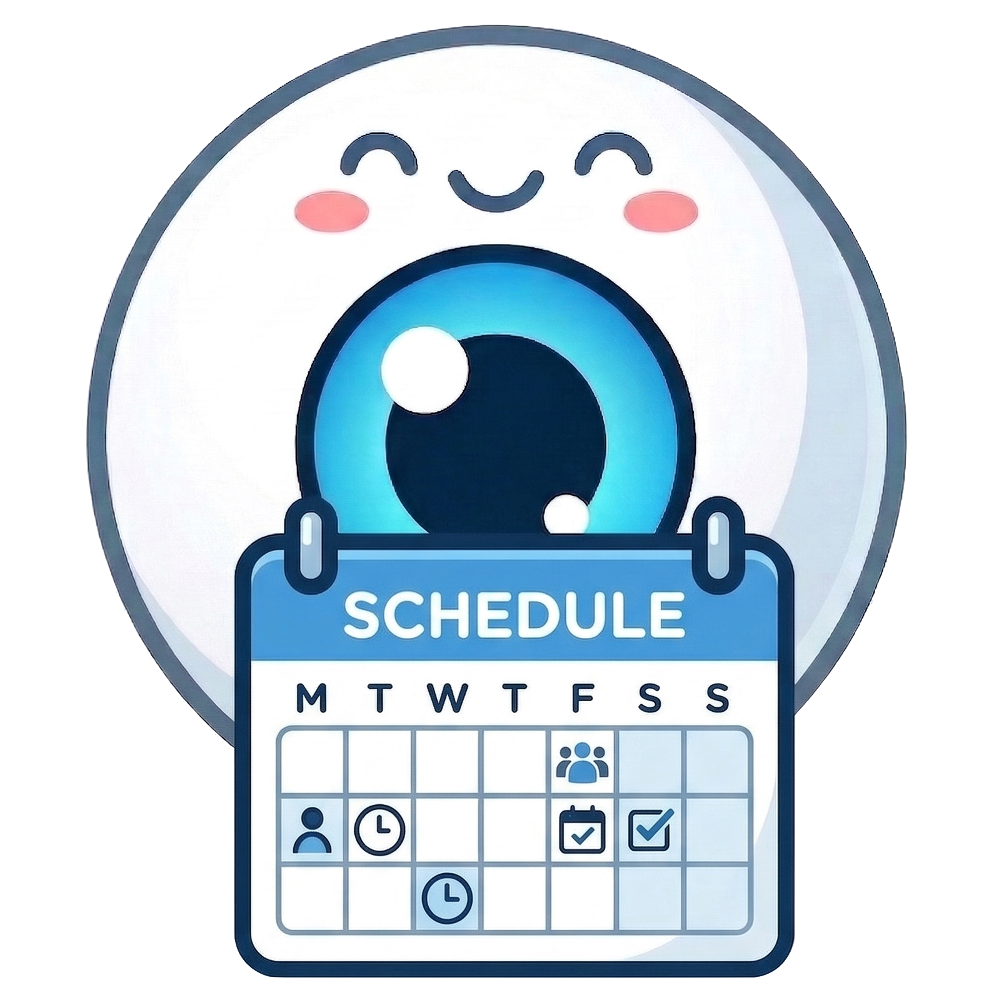

<!DOCTYPE html><html lang="en"><head><meta charset="UTF-8" /><meta name="viewport" content="width=device-width, initial-scale=1.0" /><title>Technician Scheduler</title>
<link rel="icon" href="logo.png" type="image/png">
<style>
*{margin:0;padding:0;box-sizing:border-box;-webkit-tap-highlight-color:transparent}
html,body{transition:background-color 0.2s,color 0.2s;}
html,body{background:var(--bg-base);color:var(--text-primary);font-family:'DM Sans',sans-serif;overflow-x:hidden;-webkit-text-size-adjust:100%}
:root {
  --bg-base: #0a0a1a;
  --bg-deep: #0d0d18;
  --bg-surface: #12121f;
  --bg-elevated: #1a1a2e;
  --bg-hover: #1a1a30;
  --bg-active: #1e2035;
  --border-subtle: #1e1e35;
  --border-default: #2a2a4a;
  --border-interactive: #2a2a4a;
  --text-primary: #e8e8f0;
  --text-secondary: #9ca3af;
  --text-muted: #6b7280;
  --text-dim: #4b5563;
  --text-faint: #374151;
  --input-bg: #0f0f1a;
  --overlay-bg: rgba(13,13,26,0.93);
  --cell-weekend: #0d0d18;
  --cell-offmonth: #0e0e1a;
}
:root[data-theme="light"] {
  --bg-base: #f0f0f8;
  --bg-deep: #e8e8f5;
  --bg-surface: #ffffff;
  --bg-elevated: #eceeff;
  --bg-hover: #ebebff;
  --bg-active: #e2e2f8;
  --border-subtle: #d8d8ee;
  --border-default: #c0c0dc;
  --border-interactive: #9090b8;
  --text-primary: #1a1a2e;
  --text-secondary: #4b5563;
  --text-muted: #6b7280;
  --text-dim: #9ca3af;
  --text-faint: #8080a8;
  --input-bg: #fafafe;
  --overlay-bg: rgba(26,26,46,0.6);
  --cell-weekend: #eeeefa;
  --cell-offmonth: #e8e8f5;
}
#root{min-height:100vh}
/* Interactive affordance. Applied globally rather than per-element because both pages
   style almost everything inline; a filter composes on top of any inline background.
   Direction flips by theme so it reads as "lift" on dark and "press" on light. */
button, a, [data-hoverable]{transition:filter .12s ease, transform .06s ease, border-color .12s ease}
button:not(:disabled):hover, a:hover, [data-hoverable]:hover{filter:brightness(1.14)}
:root[data-theme="light"] button:not(:disabled):hover,
:root[data-theme="light"] a:hover,
:root[data-theme="light"] [data-hoverable]:hover{filter:brightness(0.95)}
button:not(:disabled):active, a:active, [data-hoverable]:active{transform:translateY(1px)}
button:disabled{cursor:not-allowed}
button:focus-visible, a:focus-visible, [data-hoverable]:focus-visible{outline:2px solid #6366f1;outline-offset:2px}

/* Clickable rows (sidebar nav, list rows): they sit on a transparent ground, so a
   brightness filter has nothing to act on — tint the background instead. */
.hov-row{transition:box-shadow .12s ease,color .12s ease}
/* An inset shadow with a huge spread tints the whole row. Using `background` here
   would be silently defeated: these rows set background inline (active vs
   transparent), and an inline style always beats an external class rule. */
.hov-row:hover{box-shadow:inset 0 0 0 999px rgba(129,140,248,0.12)}

/* Clickable tiles (cards, calendar day cells). Deliberately shadow+border only and
   NO background change, so it composes with drag-over and selected states that set
   their own background. */
.hov-tile{transition:box-shadow .12s ease,transform .06s ease}
/* Ring drawn with box-shadow rather than border-color, for the same reason: most of
   these tiles set their border inline, so a border-color rule would never apply. */
.hov-tile:hover{box-shadow:0 0 0 2px rgba(129,140,248,0.55),0 2px 10px rgba(99,102,241,0.20)}
.hov-tile:active{transform:translateY(1px)}
/* Header pills sit on a transparent/white ground with an inline border, so a
   brightness filter has nothing to act on and a border-color rule would be
   beaten by the inline style. Tint and ring with box-shadow instead. */
.hov-pill{transition:box-shadow .12s ease}
.hov-pill:hover{box-shadow:inset 0 0 0 999px rgba(129,140,248,0.12),0 0 0 1px rgba(129,140,248,0.55)}
.hov-pill:active{transform:translateY(1px)}

@media (prefers-reduced-motion: reduce){
  .hov-row,.hov-tile,.hov-pill{transition:none}
  .hov-tile:active{transform:none}
}

@keyframes spin{from{transform:rotate(0deg)}to{transform:rotate(360deg)}}
input,select,textarea{font-size:16px!important} /* prevent iOS zoom on focus */
@media(max-width:768px){
  .mob-hide{display:none!important}
  .mob-full{width:100%!important;min-width:0!important}
  .mob-stack{flex-direction:column!important;align-items:stretch!important}
  .mob-wrap{flex-wrap:wrap!important}
  .mob-pad{padding:16px!important}
  .mob-grid1{grid-template-columns:1fr!important}
  .mob-scroll{overflow-x:auto;-webkit-overflow-scrolling:touch}
}
</style>
<script>(function(){try{var s=localStorage.getItem('session');if(s){var u=JSON.parse(s);if(u&&u.username){var t=localStorage.getItem('theme:'+u.username)||'light';document.documentElement.setAttribute('data-theme',t);return;}}document.documentElement.setAttribute('data-theme','light');}catch(e){document.documentElement.setAttribute('data-theme','light');}})()</script>
<link href="https://fonts.googleapis.com/css2?family=DM+Sans:wght@400;500;600;700;800&family=Space+Mono:wght@400;700&display=swap" rel="stylesheet">
</head><body><div id="root"></div>
<script src="https://cdnjs.cloudflare.com/ajax/libs/react/18.2.0/umd/react.production.min.js"></script>
<script src="https://cdnjs.cloudflare.com/ajax/libs/react-dom/18.2.0/umd/react-dom.production.min.js"></script>
<script src="https://cdnjs.cloudflare.com/ajax/libs/babel-standalone/7.23.9/babel.min.js"></script>
<!-- Renders Telegram invite links as scannable QR codes. Optional: if it fails to
     load, the invite UI falls back to copy-the-link and says so. -->
<script src="https://cdnjs.cloudflare.com/ajax/libs/qrcode-generator/1.4.4/qrcode.min.js"></script>
<!-- Real PDF generation. The browser's print dialog kept overriding orientation and
     dropping colour no matter what @page said, so the month sheet is rendered to a
     canvas and written into a landscape PDF we hand the user directly. Optional: if
     either script fails to load, generateMonthPDF falls back to the print window. -->
<script src="https://cdnjs.cloudflare.com/ajax/libs/html2canvas/1.4.1/html2canvas.min.js"></script>
<script src="https://cdnjs.cloudflare.com/ajax/libs/jspdf/2.5.1/jspdf.umd.min.js"></script>
<script>
// Identical to the storage client in index.html. localStorage is shared across pages
// on this origin, so an admin already signed in at index.html is authenticated here
// with no second login. Kept byte-compatible so session handling can never diverge.
window.storage=(function(){
  var API='/.netlify/functions/storage-proxy';
  function isExpired(token){
    try{var p=JSON.parse(atob(token.split('.')[1].replace(/-/g,'+').replace(/_/g,'/')));return Date.now()>p.exp;}catch(e){return true;}
  }
  function handleSessionExpired(){
    localStorage.removeItem('session'); localStorage.removeItem('sessionToken');
    window.dispatchEvent(new Event('session-expired'));
  }
  async function call(body){
    var token=localStorage.getItem('sessionToken')||'';
    var publicActions=['login','register','dev-auth','forgot-password','reset-password'];
    if(token&&!publicActions.includes(body.action)&&isExpired(token)){
      handleSessionExpired();
      throw new Error('SESSION_EXPIRED');
    }
    var r=await fetch(API,{method:'POST',headers:{'Content-Type':'application/json','x-session-token':token},body:JSON.stringify(body)});
    var d=await r.json();
    if(r.status===401&&!publicActions.includes(body.action)){
      handleSessionExpired();
      throw new Error('SESSION_EXPIRED');
    }
    if(!r.ok)throw new Error(d.error||'Storage error');
    return d;
  }
  return{
    async get(key){var d=await call({action:'get',key:key});return{key:d.key,value:d.value};},
    async set(key,value){await call({action:'set',key:key,value:value});return{key:key,value:value};},
    async delete(key){await call({action:'delete',key:key});return{key:key,deleted:true};},
    async list(prefix){var d=await call({action:'list',prefix:prefix||''});return{keys:d.keys||[],prefix:prefix};},
    async call(body){return call(body);}
  };
})();
</script><script type="text/babel">
const { useState, useEffect, useMemo, useRef } = React;

const DAYS_OF_WEEK = ["Sun","Mon","Tue","Wed","Thu","Fri","Sat"];
const DAY_NAMES_FULL = ["Sunday","Monday","Tuesday","Wednesday","Thursday","Friday","Saturday"];
const MONTHS = ["January","February","March","April","May","June","July","August","September","October","November","December"];

// Mirrors index.html:156-169. Techs are assigned to the same physical sites as doctors,
// so this must stay in sync — the app prefers the admin's saved locations when present.
const PRESET_LOCATIONS = [
  { id: "l1", name: "Manteca", address: "" },
  { id: "l2", name: "Stockton", address: "" },
  { id: "l5", name: "Modesto", address: "" },
  { id: "l6", name: "Turlock", address: "" },
  { id: "l7", name: "VLSC", address: "Valley Laser Surgery Center" },
  { id: "l8", name: "MSC", address: "Modesto Surgery Center" },
  { id: "l9", name: "DHM", address: "Doctors Hospital Manteca" },
  { id: "l10", name: "LVC", address: "LASIK Surgery" },
  { id: "l11", name: "NCSC", address: "NorCal Surgery Center" },
  { id: "l12", name: "SJLSC", address: "San Joaquin Laser and Surgery Center" },
  { id: "l13", name: "Admin", address: "" },
  { id: "l14", name: "VA", address: "Veterans Affairs" },
];

const LOCATION_COLORS = {
  l1:  { bg: '#1a2332', border: '#2d6a9f', text: '#5ba3d9' },
  l2:  { bg: '#1a2a22', border: '#2d8f5f', text: '#4ec990' },
  l5:  { bg: '#2a1f2e', border: '#8f4fc0', text: '#b47de0' },
  l6:  { bg: '#2a2518', border: '#9f8030', text: '#d4b04a' },
  l7:  { bg: '#1f1520', border: '#c04070', text: '#e06090' },
  l8:  { bg: '#201a18', border: '#b06030', text: '#d08050' },
  l9:  { bg: '#18202a', border: '#4080c0', text: '#60a0e0' },
  l10: { bg: '#1f1520', border: '#c04070', text: '#e06090' },
  l11: { bg: '#1a2025', border: '#3090a0', text: '#50c0d0' },
  l12: { bg: '#201a28', border: '#7050b0', text: '#9070d0' },
  l13: { bg: '#1a1a20', border: '#606070', text: '#8888a0' },
  l14: { bg: '#1a2520', border: '#308060', text: '#50b080' },
  OFF: { bg: '#15151f', border: '#333340', text: '#555565' },
};
const LOCATION_COLORS_LIGHT = {
  l1:  {bg:'#cce0ff', border:'#2d6a9f', text:'#1d4ed8'},
  l2:  {bg:'#ddfff0', border:'#1a7a4a', text:'#16a34a'},
  l5:  {bg:'#f0ddff', border:'#7a30a0', text:'#7c3aed'},
  l6:  {bg:'#fffadd', border:'#9f8030', text:'#b45309'},
  l7:  {bg:'#ffe8f0', border:'#c04070', text:'#be185d'},
  l8:  {bg:'#fff0e8', border:'#b06030', text:'#c2410c'},
  l9:  {bg:'#ddf0ff', border:'#3070c0', text:'#0369a1'},
  l10: {bg:'#ffe8f0', border:'#c04070', text:'#be185d'},
  l11: {bg:'#ddfaff', border:'#2090a0', text:'#0e7490'},
  l12: {bg:'#eeddff', border:'#6050b0', text:'#6d28d9'},
  l13: {bg:'#e2e2ec', border:'#606070', text:'#4b5563'},
  l14: {bg:'#c8f5e0', border:'#208060', text:'#047857'},
  OFF: {bg:'#e6e6f0', border:'#8888aa', text:'#44446a'},
};

// Mirrors index.html:313-324
const PRESET_HOLIDAYS = [
  { id: 'h1', name: "New Year's Day", type: 'fixed', month: 0, day: 1, halfDay: 'closed', note: '' },
  { id: 'h1b', name: "New Year's Eve", type: 'fixed', month: 11, day: 31, halfDay: 'am', note: 'Office open AM only — closes at noon' },
  { id: 'h2', name: 'Presidents Day', type: 'nth', month: 1, nth: 3, weekday: 1, halfDay: 'closed', note: '' },
  { id: 'h3', name: 'Memorial Day', type: 'lastMon', month: 4, halfDay: 'closed', note: '' },
  { id: 'h4', name: 'Independence Day', type: 'fixed', month: 6, day: 4, halfDay: 'closed', note: '' },
  { id: 'h5', name: 'Labor Day', type: 'nth', month: 8, nth: 1, weekday: 1, halfDay: 'closed', note: '' },
  { id: 'h6', name: 'Thanksgiving Day', type: 'nth', month: 10, nth: 4, weekday: 4, halfDay: 'closed', note: '' },
  { id: 'h7', name: 'Day After Thanksgiving', type: 'nthPlus', month: 10, nth: 4, weekday: 4, plusDays: 1, halfDay: 'closed', note: '' },
  { id: 'h8', name: 'Christmas Day', type: 'fixed', month: 11, day: 25, halfDay: 'closed', note: '' },
  { id: 'h8b', name: 'Christmas Eve', type: 'fixed', month: 11, day: 24, halfDay: 'am', note: 'Office open AM only — closes at noon' },
];

const TECH_LEVELS = ['Tech', 'COA', 'COT', 'COMT', 'Scribe', 'Front Desk'];

// Per-DAY duty, set by right-clicking a placed chip. Distinct from a technician's
// standing roles: someone can be a scribe by trade but be testing on a given Tuesday,
// so this lives on the assignment rather than on the person.
const DUTIES = [
  { id:'S',  label:'Scribe' },
  { id:'T',  label:'Testing' },
  { id:'A',  label:'A scan' },
  { id:'TR', label:'Training Refraction' },
];
function dutyLabel(id) { const d = DUTIES.find(x => x.id === id); return d ? d.label : ''; }
// Shared by App and the portal components — App's own fmtPublishedAt is scoped
// inside the component and cannot be reached from here.
function fmtStamp(ts) {
  if (!ts) return '';
  const d = new Date(ts);
  const time = d.toLocaleTimeString(undefined, { hour: 'numeric', minute: '2-digit' });
  return MONTHS[d.getMonth()].slice(0, 3) + ' ' + d.getDate() + ', ' + d.getFullYear() + ' at ' + time;
}
function dutySuffix(id) { return id ? '(' + id + ')' : ''; }

const DEFAULT_STAFFING = { techsPerDoctor: 2, minimum: 0, maximum: 0, requiredSkills: [], staffWhenNoDoctor: false };
const DEFAULT_NOTIFY_SETTINGS = {
  enabled: false,
  timezone: 'America/Los_Angeles',
  eveningHour: 18,
  morningHour: 6,
  // Telegram only by default. Email stays implemented and pluggable, but an
  // unconfigured channel is filtered out server-side anyway, so listing it here would
  // only clutter the UI with a channel that cannot fire.
  defaultChannels: ['telegram'],
  fanout: false,
  // Up to 4 site IDs, in quadrant order (top-left, top-right, bottom-left,
  // bottom-right), for the printed month PDF. Empty = default to the first four
  // staffed sites at render time.
  quadrantSiteIds: [],
};

// Render a Telegram invite as a QR code the coordinator can hold up for a tech to
// scan. With no email channel this is the fastest way to onboard someone in person —
// scan, tap once, done. Returns null if the CDN library did not load.
function qrDataUri(text, px) {
  try {
    if (typeof qrcode !== 'function') return null;
    const q = qrcode(0, 'M');            // type 0 = auto-size, M = 15% error correction
    q.addData(String(text));
    q.make();
    const count = q.getModuleCount();
    const cell = Math.max(2, Math.floor((px || 180) / (count + 8)));
    const quiet = cell * 4;
    const size = count * cell + quiet * 2;
    let rects = '';
    for (let r = 0; r < count; r++) {
      for (let c = 0; c < count; c++) {
        if (!q.isDark(r, c)) continue;
        rects += '<rect x="' + (quiet + c * cell) + '" y="' + (quiet + r * cell) +
                 '" width="' + cell + '" height="' + cell + '" fill="#000"/>';
      }
    }
    const svg = '<svg xmlns="http://www.w3.org/2000/svg" width="' + size + '" height="' + size +
                '" viewBox="0 0 ' + size + ' ' + size + '">' +
                '<rect width="' + size + '" height="' + size + '" fill="#fff"/>' + rects + '</svg>';
    return 'data:image/svg+xml;base64,' + btoa(svg);
  } catch(e) {
    return null;
  }
}

// ── Date helpers (dateKey format matches index.html:374-376 exactly) ──────────
function dateKey(year, month0, day) {
  return `${year}-${String(month0+1).padStart(2,'0')}-${String(day).padStart(2,'0')}`;
}
function parseDateKey(dk) {
  const [y,m,d] = dk.split('-').map(Number);
  return { year: y, month0: m-1, day: d };
}
function dkToDate(dk) { const p = parseDateKey(dk); return new Date(p.year, p.month0, p.day); }
function addDays(dk, n) {
  const dt = dkToDate(dk); dt.setDate(dt.getDate()+n);
  return dateKey(dt.getFullYear(), dt.getMonth(), dt.getDate());
}
function todayKeyIn(tz) {
  // Wall-clock "today" in the practice's timezone, not the browser's.
  try {
    const parts = new Intl.DateTimeFormat('en-CA', { timeZone: tz, year:'numeric', month:'2-digit', day:'2-digit' }).format(new Date());
    return parts; // en-CA gives YYYY-MM-DD
  } catch(e) {
    const d = new Date(); return dateKey(d.getFullYear(), d.getMonth(), d.getDate());
  }
}
function isWeekendDk(dk) { const d = dkToDate(dk).getDay(); return d === 0 || d === 6; }
function fmtDateLong(dk) {
  const p = parseDateKey(dk); const dt = dkToDate(dk);
  return `${DAY_NAMES_FULL[dt.getDay()]}, ${MONTHS[p.month0]} ${p.day}`;
}
function fmtDateShort(dk) {
  const p = parseDateKey(dk); const dt = dkToDate(dk);
  return `${DAYS_OF_WEEK[dt.getDay()]} ${p.month0+1}/${p.day}`;
}
// Plan-aware. The legacy shape (tech-YYYY-M, no plan) is migrated to plan A on load,
// so nothing written before plans existed is stranded.
function techScheduleKeyFor(dk, plan) {
  const p = parseDateKey(dk);
  return `tech-${p.year}-${p.month0}-${plan || 'A'}`;
}
function techMonthKeyFor(dk) {
  const p = parseDateKey(dk);
  return `${p.year}-${p.month0}`;
}
function getWeekOfMonth(day) { return Math.min(Math.floor((day-1)/7)+1, 4); }

// Mirrors index.html:327-363
function getHolidayDate(h, year) {
  if (h.type === 'fixed') {
    const dt = new Date(year, h.month, h.day);
    const dow = dt.getDay();
    if (dow === 6) dt.setDate(dt.getDate() - 1);
    if (dow === 0) dt.setDate(dt.getDate() + 1);
    return dt;
  }
  if (h.type === 'nth') {
    let count = 0;
    for (let d = 1; d <= 31; d++) {
      const dt = new Date(year, h.month, d);
      if (dt.getMonth() !== h.month) break;
      if (dt.getDay() === h.weekday) { count++; if (count === h.nth) return dt; }
    }
  }
  if (h.type === 'lastMon') {
    const last = new Date(year, h.month + 1, 0);
    for (let d = last.getDate(); d >= 1; d--) {
      const dt = new Date(year, h.month, d);
      if (dt.getDay() === 1) return dt;
    }
  }
  if (h.type === 'nthPlus') {
    let count = 0;
    for (let d = 1; d <= 31; d++) {
      const dt = new Date(year, h.month, d);
      if (dt.getMonth() !== h.month) break;
      if (dt.getDay() === h.weekday) { count++; if (count === h.nth) { dt.setDate(dt.getDate() + h.plusDays); return dt; } }
    }
  }
  return null;
}

function newId(prefix) { return prefix + Date.now() + Math.random().toString(36).slice(2,6); }

// Both ported verbatim from index.html — the doctor-schedule reference has to render
// identically to the doctor scheduler, so these must not drift.
function staffDisplayColor(color, th) {
  if (th !== 'light') return color;
  const hex = String(color || '').replace('#', '');
  if (hex.length !== 6) return color;
  const r = parseInt(hex.slice(0,2),16)/255, g = parseInt(hex.slice(2,4),16)/255, b = parseInt(hex.slice(4,6),16)/255;
  const lum = 0.2126*r + 0.7152*g + 0.0722*b;
  if (lum < 0.35) return color;
  const factor = 0.5;
  const dr = Math.round(r*255*factor), dg = Math.round(g*255*factor), db = Math.round(b*255*factor);
  return '#' + [dr,dg,db].map(x=>x.toString(16).padStart(2,'0')).join('');
}
function getLastName(fullName) {
  const parts = String(fullName || '').split(' ');
  const suffixes = ['MD','OD','DO','NP','PA','RN','Jr','Sr','II','III'];
  for (let i = parts.length - 1; i >= 0; i--) {
    if (!suffixes.includes(parts[i].replace(/[.,]/g, ''))) return parts[i];
  }
  return parts[0];
}

// Mirrors index.html:383. Only used by the month-PDF export below — everything else
// in this file goes through React's own escaping.
function escapeHtml(s) { return String(s == null ? '' : s).replace(/&/g,'&amp;').replace(/</g,'&lt;').replace(/>/g,'&gt;').replace(/"/g,'&quot;'); }

// Default portal username for a technician: first name + first letter of last
// name, lowercased, with anything that isn't a-z0-9 stripped. A single-word
// name just becomes that word. Used to prefill the create-account modal and to
// generate candidates for the bulk-create flow — actual collision resolution
// against taken usernames happens where each of those is used.
function defaultTechUsername(fullName) {
  const clean = s => String(s || '').toLowerCase().replace(/[^a-z0-9]/g, '');
  const parts = String(fullName || '').trim().split(/\s+/).filter(Boolean);
  if (parts.length === 0) return '';
  const first = clean(parts[0]);
  const lastInitial = parts.length > 1 ? clean(parts[parts.length - 1]).slice(0, 1) : '';
  return (first + lastInitial).slice(0, 20);
}

// ── Claude API ───────────────────────────────────────────────────────────────
// Talks to the SAME edge function the doctor scheduler uses
// (netlify/edge-functions/claude-proxy.mjs). That proxy is generic — it verifies the
// session JWT, rate-limits per user, pins the model server-side and streams the
// response back untouched — so there is nothing tech-specific to add there.

function isTokenExpired(token) {
  try { const p = JSON.parse(atob(token.split('.')[1].replace(/-/g,'+').replace(/_/g,'/'))); return Date.now() > p.exp; }
  catch(e) { return true; }
}

// Streaming is mandatory, not a preference: bytes flow from the first token, so
// Netlify's inactivity timeout never fires no matter how long generation runs.
// `signal` adds the cancellation the doctor scheduler lacks.
async function streamClaudeAPI(body, onProgress, signal) {
  const token = localStorage.getItem('sessionToken') || '';
  if (token && isTokenExpired(token)) {
    localStorage.removeItem('session'); localStorage.removeItem('sessionToken');
    window.dispatchEvent(new Event('session-expired'));
    return { ok:false, status:401, errorText:'Session expired — please sign in again.' };
  }
  const payload = Object.assign({}, body, { stream: true });
  let response;
  try {
    response = await fetch('/.netlify/functions/claude-proxy', {
      method: 'POST',
      headers: { 'Content-Type':'application/json', 'x-session-token': token },
      body: JSON.stringify(payload),
      signal: signal
    });
  } catch(e) {
    if (e.name === 'AbortError') return { ok:false, status:0, aborted:true, errorText:'Cancelled' };
    return { ok:false, status:0, errorText: e.message };
  }
  if (!response.ok) {
    let errText = '';
    try { errText = await response.text(); } catch(e) { errText = '(no body)'; }
    return { ok:false, status:response.status, errorText:errText };
  }
  const reader = response.body.getReader();
  const decoder = new TextDecoder();
  let buffer = '', fullText = '';
  try {
    while (true) {
      const chunk = await reader.read();
      if (chunk.done) break;
      buffer += decoder.decode(chunk.value, { stream:true });
      const lines = buffer.split('\n');
      buffer = lines.pop();
      for (let i = 0; i < lines.length; i++) {
        const line = lines[i];
        if (!line.startsWith('data: ')) continue;
        const raw = line.slice(6).trim();
        if (!raw || raw === '[DONE]') continue;
        try {
          const evt = JSON.parse(raw);
          if (evt.type === 'content_block_delta' && evt.delta && evt.delta.type === 'text_delta') {
            fullText += evt.delta.text;
            if (onProgress) onProgress(fullText.length);
          }
        } catch(e) {}
      }
    }
  } catch(e) {
    if (e.name === 'AbortError') return { ok:false, status:0, aborted:true, errorText:'Cancelled', text:fullText };
    return { ok:false, status:0, errorText:e.message, text:fullText };
  }
  return { ok:true, status:200, text: fullText };
}

// Three-tier JSON recovery, ported from the doctor scheduler's recheck path.
// Tier 3 is adapted to this response shape: the doctor version salvages flat objects,
// which does not work for nested day→tech→{am,pm} data, so instead we brace-match each
// "YYYY-MM-DD": {...} block and parse it alone. A day cut off mid-object is dropped
// rather than poisoning the whole batch.
function salvageAssignments(text) {
  const out = {};
  let truncated = false;
  const re = /"(\d{4}-\d{2}-\d{2})"\s*:\s*\{/g;
  let m;
  while ((m = re.exec(text)) !== null) {
    const dk = m[1];
    const start = re.lastIndex - 1;
    let depth = 0, end = -1;
    for (let i = start; i < text.length; i++) {
      if (text[i] === '{') depth++;
      else if (text[i] === '}') { depth--; if (depth === 0) { end = i; break; } }
    }
    if (end === -1) { truncated = true; break; }
    try { out[dk] = JSON.parse(text.slice(start, end + 1)); } catch(e) {}
  }
  return { days: out, truncated };
}

function parseModelJSON(text) {
  const clean = String(text || '').replace(/```json\s*/g, '').replace(/```\s*/g, '').trim();
  try { return { parsed: JSON.parse(clean), tier: 1, truncated: false }; } catch(e) {}
  const m = clean.match(/\{[\s\S]*\}/);
  if (m) { try { return { parsed: JSON.parse(m[0]), tier: 2, truncated: false }; } catch(e) {} }
  const sal = salvageAssignments(clean);
  if (Object.keys(sal.days).length > 0) {
    // A response ending cleanly was merely malformed; one that does not was cut off.
    const endsClean = /[}\]]\s*$/.test(clean);
    return { parsed: { assignments: sal.days, ambiguities: [] }, tier: 3, truncated: sal.truncated || !endsClean };
  }
  return { parsed: null, tier: 0, truncated: !/[}\]]\s*$/.test(clean) };
}

function useIsMobile() {
  const [m, setM] = useState(() => window.innerWidth <= 768);
  useEffect(() => {
    const on = () => setM(window.innerWidth <= 768);
    window.addEventListener('resize', on);
    return () => window.removeEventListener('resize', on);
  }, []);
  return m;
}

// ── Month PDF export — static CSS ───────────────────────────────────────────
// Ported VERBATIM from the approved offline design mock (quad3css.txt). This is a
// finished, measured layout — treat every value here as fixed, not a starting point
// for tweaks. __SATW__/__DAYW__/__FS__/__FSB__/__AB__/__NOTE__ are filled in per
// render by buildMonthPdfHtml() below, exactly like the reference generator did.
const QUAD_CSS =
  '*{margin:0;padding:0;box-sizing:border-box}' +
  "body{font-family:-apple-system,'Helvetica Neue',Arial,sans-serif;color:#111;background:#fff;padding:4px 8px}" +
  '.hdr{display:flex;align-items:baseline;gap:11px;border-bottom:2.5px solid #111;padding-bottom:3px;margin-bottom:4px}' +
  '.hdr h1{font-size:16px;letter-spacing:-.3px}.hdr .m{font-size:14px;font-weight:600}' +
  '.hdr .sub{font-size:9px;color:#777;margin-left:auto}' +
  'table{width:100%;border-collapse:separate;border-spacing:0;table-layout:fixed}' +
  'th{width:__DAYW__;font-size:8.5px;font-weight:800;letter-spacing:.9px;text-transform:uppercase;color:#333;' +
  'padding:2px 4px;border-bottom:2.5px solid #111;text-align:left}' +
  'th.sun{width:3.5%;font-size:6.5px;letter-spacing:0;color:#bbb}' +
  'th.sat{width:__SATW__;font-size:7px;letter-spacing:0;color:#888}' +
  'td.cell{border-right:2px solid #2a2a33;border-bottom:2px solid #2a2a33;vertical-align:top;padding:0}' +
  'tbody tr td:first-child{border-left:2px solid #2a2a33}' +
  'tbody tr:first-child td{border-top:2px solid #2a2a33}' +
  'td.sun{width:3.5%;background:#f7f7f9;padding:1px 2px}' +
  'td.sat{width:__SATW__;background:#fbfbfd;padding:1px 2px}' +
  'td.blank{background:#f1f1f4}' +
  '.quads{display:grid;grid-template-columns:1fr 1fr}' +
  '.q{padding:1.5px 4px;min-height:0;word-break:break-word}' +
  '.q.wide{grid-column:1 / -1}' +
  '.q0{border-right:1px solid #e4e4ec;border-bottom:1px solid #e4e4ec}' +
  '.q1{border-bottom:1px solid #e4e4ec}' +
  '.q2{border-right:1px solid #e4e4ec}' +
  '.dnum{font-size:__DNUM__px;font-weight:800;margin-right:3px;vertical-align:-.5px;line-height:1}' +
  'td.sun .dnum,td.sat .dnum{font-size:7.5px;color:#aaa;font-weight:700;display:block;margin:0 0 1px}' +
  '.ab{display:inline-block;font-size:__AB__px;font-weight:800;letter-spacing:.2px;color:#fff;' +
  'border-radius:2px;padding:0 2px;margin-right:2.5px;vertical-align:1px;line-height:1.35}' +
  '.ab.dim{background:#dcdce4}.ab.offab{background:#6b7280}' +
  '.ns{font-size:__FS__px;font-weight:600;line-height:1.25;overflow-wrap:anywhere}' +
  '.ns b{font-weight:800;color:#3730a3;font-size:__FSB__px}' +
  '.mt{color:#c9c9d2;font-size:__FS__px}' +
  '.satrow{margin-bottom:2px}' +
  '.satrow .ns{display:block;margin-top:1px;line-height:1.25}' +
  '.strip{padding:1px 3px;border-top:1px solid #dcdce4;line-height:1.25}' +
  '.strip.over{background:#fcfcfe}.strip.off{background:#f4f4f7}' +
  '.strip.off .ns{color:#555;font-style:italic}' +
  '.sep{display:inline-block;width:9px}' +
  '.note{font-size:__NOTE__px;color:#8a5a00;background:#fff8e6;border-top:1px solid #f0b429;line-height:1.3;font-style:italic}' +
  '.note b{font-style:normal;color:#7a3e00}' +
  '.holclosed{background:#fdeaea;border-top:1px solid #d9534f;color:#a02622;font-size:__NOTE__px;' +
  'font-weight:700;padding:3px;line-height:1.35;text-align:center;margin-top:2px}' +
  '.holclosed span{display:block;font-size:7.5px;letter-spacing:1.2px;font-weight:800;margin-top:1px}' +
  '.none{font-size:7px;color:#c8c8d0;font-style:italic;padding:2px 3px}' +
  '.legend{margin-top:5px;padding-top:4px;border-top:1px solid #ccc;display:flex;align-items:baseline;gap:14px;flex-wrap:wrap}' +
  '.lg{font-size:9px;color:#333;font-weight:600}.lg b{color:#3730a3}' +
  '.lgsites{font-size:8.5px;color:#777;margin-left:auto}';

// ─────────────────────────────────────────────────────────────────────────────

function App() {
  const isMobile = useIsMobile();
  const [loading, setLoading] = useState(true);
  const [user, setUser] = useState(null);
  const [theme, setTheme] = useState(() => document.documentElement.getAttribute('data-theme') || 'light');
  const [activeTab, setActiveTab] = useState('board');
  const [toast, setToast] = useState(null);

  // Sidebar: pinned = user's chosen mode, persisted in localStorage so it carries
  // across reloads (and across the doctor/technician apps on this shared origin);
  // hovered = temporary peek while the pointer is over it. Rendered width is
  // expanded when either is true. Default is retracted (pinned=false).
  const [sidebarPinned, setSidebarPinned] = useState(() => {
    try { return localStorage.getItem('sidebarPinned') === '1'; } catch (e) { return false; }
  });
  const [sidebarHovered, setSidebarHovered] = useState(false);
  const sidebarCollapsed = !(sidebarPinned || sidebarHovered);

  // Technician-side data (owned by this app)
  const [techs, setTechs]                 = useState([]);
  const [techContacts, setTechContacts]   = useState({});
  // Practice managers / higher-level admins. NOT technicians — never scheduled,
  // never on the grid/OFF list/PDF/coverage. They receive the whole-practice
  // summary instead of a personal assignment. Contacts for them live in the SAME
  // techContacts map above, keyed by their id ("a..." vs a technician's "t...").
  const [techAdmins, setTechAdmins]       = useState([]);
  const [techRules, setTechRules]         = useState([]);
  const [techStaffing, setTechStaffing]   = useState({});
  const [techSchedules, setTechSchedules] = useState({});
  const [techTimeOff, setTechTimeOff]     = useState([]);
  // Tech-only sub-rooms (e.g. "Stockton - Suite 2"). Deliberately NOT added to
  // {admin}:locations, which the doctor scheduler shares — doctors are only ever
  // recorded at the parent site, so a sub-room resolves its doctor count through
  // parentLocationId instead of having its own.
  const [techSites, setTechSites]         = useState([]);
  const [techFinalPlans, setTechFinalPlans] = useState({});  // { "2026-7": "A" }
  // What technicians actually see. Editing a finalised month changes this only
  // when Publish Changes is pressed: { "2026-7": { plan, publishedAt, days } }
  const [techPublished, setTechPublished] = useState({});
  const [activeTechPlan, setActiveTechPlan] = useState('A'); // which plan is being edited
  const [notifySettings, setNotifySettings] = useState(DEFAULT_NOTIFY_SETTINGS);
  const [notifyLog, setNotifyLog]         = useState({});
  // Free-text note per date ("YYYY-MM-DD" -> text), shown on the Day Board and
  // printed on the month PDF. A day with nothing to say has no key at all, rather
  // than an empty string, so the printout's notes strip can stay conditional.
  const [techDayNotes, setTechDayNotes]   = useState({});

  // Doctor-side data (read-only here — owned by index.html)
  const [doctors, setDoctors]         = useState([]);
  const [locations, setLocations]     = useState(PRESET_LOCATIONS);
  const [finalPlans, setFinalPlans]   = useState({});
  const [docSchedules, setDocSchedules] = useState({});
  const [holidays, setHolidays]       = useState(PRESET_HOLIDAYS);
  const [docDayNotes, setDocDayNotes] = useState({});   // doctor-side notes: {scheduleKey:{dk:text}}

  const [selectedDate, setSelectedDate] = useState(() => todayKeyIn(DEFAULT_NOTIFY_SETTINGS.timezone));
  // Month is the default landing view — it's how the practice thinks about the
  // schedule. Clicking a day drops into the week, which is where editing happens.
  const [boardView, setBoardView] = useState('month'); // 'month' | 'week'
  const [editDate, setEditDate]   = useState(null);    // day being edited in week view

  const isDev  = !!(user && user.isDev);
  const isAdmin = isDev || (user && user.userType === 'admin');
  const dataNs = user ? (user.adminUsername || user.username) : null;

  function showToast(msg, kind) {
    setToast({ msg, kind: kind || 'info' });
    setTimeout(() => setToast(null), 3500);
  }

  // ── Persistence ────────────────────────────────────────────────────────────
  // Debounced, unlike index.html's ten un-debounced useEffects. The day board is
  // edited in rapid bursts (a coordinator reassigning five people at once), and
  // each save rewrites the whole blob, so coalescing matters here.
  const saveTimers = useRef({});
  const pendingSaves = useRef({});
  // Set once the initial load finishes. Without it, every state-setting call in
  // loadAll() trips its own save effect and writes the blob straight back to the
  // server unchanged — seven redundant full-blob PUTs on every single page load.
  const hydrated = useRef(false);

  function saveData(key, data) {
    if (!hydrated.current || !user || !isAdmin || !dataNs) return;
    pendingSaves.current[key] = data;
    clearTimeout(saveTimers.current[key]);
    saveTimers.current[key] = setTimeout(() => { flushKey(key); }, 600);
  }
  function flushKey(key) {
    const data = pendingSaves.current[key];
    if (data === undefined) return;
    delete pendingSaves.current[key];
    clearTimeout(saveTimers.current[key]);
    window.storage.set(`${dataNs}:${key}`, JSON.stringify(data))
      .catch(e => { if (e.message !== 'SESSION_EXPIRED') showToast('Save failed: ' + e.message, 'error'); });
  }
  function flushAll() { Object.keys(pendingSaves.current).forEach(flushKey); }

  // Never lose a pending write to a tab close or a navigation back to index.html.
  useEffect(() => {
    const on = () => flushAll();
    window.addEventListener('beforeunload', on);
    window.addEventListener('pagehide', on);
    return () => { window.removeEventListener('beforeunload', on); window.removeEventListener('pagehide', on); };
  });

  useEffect(() => { if (user) saveData('techs', techs); }, [techs]);
  useEffect(() => { if (user) saveData('techContacts', techContacts); }, [techContacts]);
  useEffect(() => { if (user) saveData('techAdmins', techAdmins); }, [techAdmins]);
  useEffect(() => { if (user) saveData('techRules', techRules); }, [techRules]);
  useEffect(() => { if (user) saveData('techStaffing', techStaffing); }, [techStaffing]);
  useEffect(() => { if (user) saveData('techSchedules', techSchedules); }, [techSchedules]);
  useEffect(() => { if (user) saveData('techTimeOff', techTimeOff); }, [techTimeOff]);
  useEffect(() => { if (user) saveData('techSites', techSites); }, [techSites]);
  useEffect(() => { if (user) saveData('techFinalPlans', techFinalPlans); }, [techFinalPlans]);
  useEffect(() => { if (user) saveData('techPublished', techPublished); }, [techPublished]);
  useEffect(() => { if (user) saveData('techNotifySettings', notifySettings); }, [notifySettings]);
  useEffect(() => { if (user) saveData('techDayNotes', techDayNotes); }, [techDayNotes]);

  // MUST stay declared after every save effect above. loadAll's setState calls and
  // setLoading(false) land in one commit, and React runs effects in declaration
  // order — so the save effects see hydrated=false and skip, then this one arms
  // them for genuine user edits. A timer here would race React's scheduler.
  useEffect(() => { if (!loading && user) hydrated.current = true; }, [loading, user]);

  // The default tab id ('board') only exists in the admin tab set. Land a
  // technician on the portal's own first tab instead of a blank content pane.
  useEffect(() => {
    if (!user) return;
    const isStaffUser = user.userType === 'staff';
    if (isStaffUser && activeTab === 'board') setActiveTab('p-week');
  }, [user]);

  // ── Bootstrap ──────────────────────────────────────────────────────────────
  useEffect(() => {
    (async () => {
      try {
        const raw = localStorage.getItem('session');
        const token = localStorage.getItem('sessionToken');
        if (!raw || !token) { setLoading(false); return; }
        let u;
        try { u = JSON.parse(raw); } catch(e) { setLoading(false); return; }
        if (!u || !u.username) { setLoading(false); return; }
        setUser(u);
        if (u.userType === 'staff') {
          try {
            const rec = await window.storage.get('user:' + u.username);
            const parsed = rec && rec.value ? JSON.parse(rec.value) : null;
            if (parsed && parsed.techId) setMyTechId(parsed.techId);
          } catch(e) { console.warn('could not resolve viewing technician', e.message); }
        }
        await loadAll(u.adminUsername || u.username, u.userType === 'staff');
      } catch(e) {
        console.warn('bootstrap failed', e);
      } finally {
        setLoading(false);
      }
    })();
  }, []);

  useEffect(() => {
    const on = () => { setUser(null); };
    window.addEventListener('session-expired', on);
    return () => window.removeEventListener('session-expired', on);
  }, []);

  // `portal` is true for a technician (userType 'staff') session. storage-proxy
  // flatly denies staff reads of techContacts, techRules, techTimeOff, and the
  // notify settings/log — a technician has no business seeing another tech's
  // contact info, admin scheduling rules, time-off reasons, or the notify
  // configuration. Skipping those calls entirely (rather than letting them 403)
  // is what keeps the portal from spewing failed-request console noise.
  async function loadAll(ns, portal) {
    const d = async k => {
      try { const r = await window.storage.get(`${ns}:${k}`); return r ? JSON.parse(r.value) : null; }
      catch(e) { return null; }
    };
    const dOrSkip = k => portal ? Promise.resolve(null) : d(k);
    const [
      tk, tc, tr, ts, tsch, tto, tns, tnl, tsi, tdn, tfp, tpub, tadm, fps,
      st, loc, fp, sch, hol, ddn
    ] = await Promise.all([
      d('techs'), dOrSkip('techContacts'), dOrSkip('techRules'), d('techStaffing'),
      d('techSchedules'), dOrSkip('techTimeOff'), dOrSkip('techNotifySettings'), dOrSkip('techNotifyLog'), d('techSites'), d('techDayNotes'), d('techFinalPlans'), d('techPublished'),
      // Admin-only, same as techContacts/techRules/etc — a technician portal
      // session must never see the administrator roster.
      dOrSkip('techAdmins'),
      d('finalPlanStamps'),
      d('staff'), d('locations'), d('finalPlans'), d('schedules'), d('holidays'), d('dayNotes'),
    ]);
    if (tsi) setTechSites(tsi);
    if (tk)  setTechs(tk);
    if (tc)  setTechContacts(tc);
    if (tadm) setTechAdmins(tadm);
    if (tr)  setTechRules(tr);
    if (ts)  setTechStaffing(ts);
    if (tfp) setTechFinalPlans(tfp);
    if (tpub) setTechPublished(tpub);
    if (fps) setFinalPlanStamps(fps);
    if (tsch) {
      // One-time migration: keys written before plans existed (tech-YYYY-M) become
      // plan A. Done in memory and saved back, so it only ever happens once.
      let migrated = false;
      const next = {};
      Object.keys(tsch).forEach(k => {
        if (/^tech-\d{4}-\d{1,2}$/.test(k)) { next[k + '-A'] = tsch[k]; migrated = true; }
        else next[k] = tsch[k];
      });
      setTechSchedules(next);
      // Written directly rather than through saveData: that path is deliberately
      // inert until hydration finishes, so a migration routed through it would repair
      // memory on every load and never actually persist.
      if (migrated) {
        window.storage.set(`${ns}:techSchedules`, JSON.stringify(next))
          .catch(e => console.warn('techSchedules migration could not be saved:', e.message));
      }
    }
    if (tto) setTechTimeOff(tto);
    if (tns) setNotifySettings(Object.assign({}, DEFAULT_NOTIFY_SETTINGS, tns));
    if (tnl) setNotifyLog(tnl);
    if (tdn) setTechDayNotes(tdn);
    if (st)  setDoctors(st);
    if (loc) setLocations(loc);
    if (fp)  setFinalPlans(fp);
    if (sch) setDocSchedules(sch);
    if (hol) setHolidays(hol);
    if (ddn) setDocDayNotes(ddn);
    if (tns && tns.timezone) setSelectedDate(todayKeyIn(tns.timezone));
    if (tk && tk.length) loadPortalAccounts(tk);
  }

  function toggleTheme() {
    const next = theme === 'dark' ? 'light' : 'dark';
    setTheme(next);
    document.documentElement.setAttribute('data-theme', next);
    if (user) localStorage.setItem('theme:' + user.username, next);
  }

  function toggleSidebar() {
    setSidebarPinned(p => {
      const next = !p;
      try { localStorage.setItem('sidebarPinned', next ? '1' : '0'); } catch (e) {}
      return next;
    });
  }
  const LC = theme === 'dark' ? LOCATION_COLORS : LOCATION_COLORS_LIGHT;
  function locColor(id) { return LC[id] || { bg:'var(--bg-elevated)', border:'var(--border-default)', text:'var(--text-secondary)' }; }

  // ── Derived data ───────────────────────────────────────────────────────────
  const activeTechs = useMemo(() => techs.filter(t => t.active !== false), [techs]);

  // Everywhere a technician can be ASSIGNED is a real location plus any tech-only
  // sub-room. Everywhere a DOCTOR can be is `locations` alone — the two lists are
  // deliberately different, which is what keeps the doctor scheduler untouched.
  const allSites = useMemo(() => locations.concat(techSites || []), [locations, techSites]);
  const locById = useMemo(() => { const m = {}; allSites.forEach(l => m[l.id] = l); return m; }, [allSites]);
  function locName(id) { return id === 'OFF' ? 'OFF' : (locById[id] ? locById[id].name : id); }

  // A sub-room borrows its parent's doctors. Stockton - Suite 2 is staffed because
  // Stockton has clinic that day, not because anyone is scheduled to Suite 2.
  // Doctor names at a site on a given day, either half — what a technician means
  // by "who am I working with".
  function doctorsAtSiteOn(dk, siteId) {
    const cov = getDoctorCoverage(dk);
    const am = doctorsAtSite(cov, siteId, 'am') || [];
    const pm = doctorsAtSite(cov, siteId, 'pm') || [];
    return Array.from(new Set(am.concat(pm)));
  }
  function doctorsAtSite(cov, siteId, period) {
    if (!cov) return [];
    const site = locById[siteId];
    const sourceId = (site && site.parentLocationId) ? site.parentLocationId : siteId;
    return (cov[sourceId] && cov[sourceId][period]) || [];
  }

  // Holiday lookup for the selected year, keyed by dateKey.
  const holidayMap = useMemo(() => {
    const map = {};
    const yr = parseDateKey(selectedDate).year;
    [yr-1, yr, yr+1].forEach(y => {
      holidays.forEach(h => {
        const dt = getHolidayDate(h, y);
        if (dt) map[dateKey(dt.getFullYear(), dt.getMonth(), dt.getDate())] = h;
      });
    });
    return map;
  }, [holidays, selectedDate]);

  function holidayFor(dk) { return holidayMap[dk] || null; }
  function isTechOff(techId, dk) {
    return techTimeOff.some(t => t.techId === techId && dk >= t.startDate && dk <= t.endDate);
  }
  function timeOffFor(techId, dk) {
    return techTimeOff.find(t => t.techId === techId && dk >= t.startDate && dk <= t.endDate) || null;
  }

  // Which doctors are at which site, per half-day, from the PUBLISHED doctor plan.
  // Returns null when nothing is published for that month — the tech schedule has
  // no basis without it, and the UI says so rather than silently showing zeros.
  function getDoctorCoverage(dk) {
    const p = parseDateKey(dk);
    const plan = finalPlans[`${p.year}-${p.month0}`];
    if (!plan) return null;
    const sk = `schedule-${p.year}-${p.month0}-${plan}`;
    const day = (docSchedules[sk] || {})[dk];
    if (!day) return null;
    const out = {};
    Object.keys(day).forEach(staffId => {
      const doc = doctors.find(x => x.id === staffId);
      if (!doc || doc.active === false) return;
      const per = day[staffId] || {};
      ['am','pm'].forEach(period => {
        const lid = per[period];
        if (!lid || lid === 'OFF') return;
        if (!out[lid]) out[lid] = { am: [], pm: [] };
        out[lid][period].push(doc.name);
      });
    });
    return out;
  }

  // The deterministic backbone: required tech count per site per half-day.
  // Computed in JS precisely because it is arithmetic — the AI is told the answer
  // rather than asked to derive it, and post-processing re-checks it.
  function computeCoverageTargets(dk) {
    const cov = getDoctorCoverage(dk);
    const hol = holidayFor(dk);
    const targets = {};
    allSites.forEach(l => {
      const st = techStaffing[l.id];
      if (!st) return;
      const cfg = Object.assign({}, DEFAULT_STAFFING, st);
      targets[l.id] = { am: 0, pm: 0 };
      ['am','pm'].forEach(period => {
        const docs = doctorsAtSite(cov, l.id, period).length;
        let need = 0;
        if (docs > 0) {
          need = Math.ceil(docs * (Number(cfg.techsPerDoctor) || 0));
          need = Math.max(need, Number(cfg.minimum) || 0);
        } else if (cfg.staffWhenNoDoctor) {
          need = Number(cfg.minimum) || 0;
        }
        if (Number(cfg.maximum) > 0) need = Math.min(need, Number(cfg.maximum));
        if (hol && (hol.halfDay === 'closed' || (hol.halfDay === 'am' && period === 'pm'))) need = 0;
        if (isWeekendDk(dk)) need = 0;
        targets[l.id][period] = need;
      });
    });
    return targets;
  }

  // Which sites occupy the four print quadrants. Falls back to the first four
  // configured sites so a cell is never blank before anyone configures it.
  const quadSiteIds = useMemo(() => {
    const cfg = (notifySettings.quadrantSiteIds || []).filter(id => !!techStaffing[id]);
    if (cfg.length) return cfg.slice(0,4);
    return Object.keys(techStaffing).slice(0,4);
  }, [notifySettings, techStaffing]);

  // ── Plans ──────────────────────────────────────────────────────────────────
  // Same model as the doctor scheduler: three drafts per month, one optionally marked
  // FINAL. Everything technicians actually see — day links, Telegram messages — reads
  // the PUBLISHED snapshot of the FINAL plan, so neither a half-finished draft nor a
  // half-finished edit to a live month can reach anyone.
  const techMonthKey = techMonthKeyFor(selectedDate);
  const finalTechPlanForMonth = techFinalPlans[techMonthKey] || null;
  const publishedForMonth = techPublished[techMonthKey] || null;

  function techPlanHasData(plan) {
    const k = techScheduleKeyFor(selectedDate, plan);
    return !!(techSchedules[k] && Object.keys(techSchedules[k]).length > 0);
  }
  // The month's assignments for a given plan, as stored.
  function techPlanDays(plan) {
    const [y, m0] = techMonthKey.split('-').map(Number);
    return techSchedules['tech-' + y + '-' + m0 + '-' + plan] || {};
  }

  // Order-independent comparison. Plain JSON.stringify would report a difference
  // whenever key insertion order changed — dragging a chip away and back rewrites
  // the day object and would otherwise look like an edit forever.
  function canonicalDays(days) {
    const out = {};
    Object.keys(days || {}).sort().forEach(dk => {
      const day = days[dk] || {};
      const inner = {};
      Object.keys(day).sort().forEach(techId => {
        const a = day[techId] || {};
        // Only the fields technicians are actually told about.
        if (a.am || a.pm || a.duty) inner[techId] = { am: a.am || '', pm: a.pm || '', duty: a.duty || '' };
      });
      if (Object.keys(inner).length) out[dk] = inner;
    });
    return JSON.stringify(out);
  }

  // Copy the live plan into the published snapshot — this is the only thing that
  // changes what technicians see.
  // What gets published is the EFFECTIVE schedule: approved leave is folded in as OFF
  // before the snapshot is written. That keeps the snapshot self-contained, so the
  // read-only technician portal can show who is off without being handed techTimeOff,
  // whose free-text reason can be medical. It also means approving leave changes the
  // effective days, which is what makes the plan read as having unpublished changes.
  function techPlanEffectiveDays(plan) {
    const src = techPlanDays(plan);
    const out = {};
    Object.keys(src).forEach(dk => {
      const day = {};
      Object.keys(src[dk] || {}).forEach(tid => {
        day[tid] = isTechOff(tid, dk) ? { am: 'OFF', pm: 'OFF' } : src[dk][tid];
      });
      out[dk] = day;
    });
    return out;
  }

  function publishTechPlan(plan) {
    const days = JSON.parse(JSON.stringify(techPlanEffectiveDays(plan)));
    setTechPublished(prev => Object.assign({}, prev, {
      [techMonthKey]: { plan, publishedAt: Date.now(), days }
    }));
  }

  // Setting a plan final publishes it at the same moment: there is no useful state
  // where a month is "final but never published".
  function setTechFinalPlan(plan) {
    setTechFinalPlans(prev => Object.assign({}, prev, { [techMonthKey]: plan }));
    publishTechPlan(plan);
    showToast('Plan ' + plan + ' published to technicians', 'success');
  }

  // Copy one day's technician assignments onto other days.
  //
  // Writes the stored assignment verbatim, duty tag included: this is duplicating a
  // whole day's arrangement, not moving someone between sites, so the reason the drag
  // handler clears duty does not apply here.
  //
  // Each target resolves its own schedule key, because a week can straddle two months
  // (Aug 31 - Sep 4) and those live under different keys.
  function copyTechDay(srcDk, targetDks, overwrite) {
    const srcKey = techScheduleKeyFor(srcDk, activeTechPlan);
    const srcDay = (techSchedules[srcKey] || {})[srcDk] || {};
    const worked = a => !!(a && ((a.am && a.am !== 'OFF') || (a.pm && a.pm !== 'OFF')));
    if (!Object.keys(srcDay).some(id => worked(srcDay[id]))) {
      showToast('Nothing to copy — ' + fmtDateShort(srcDk) + ' has no assignments', 'info');
      return;
    }
    const dayHasWork = dk => {
      const d = (techSchedules[techScheduleKeyFor(dk, activeTechPlan)] || {})[dk] || {};
      return activeTechs.some(t => worked(d[t.id]));
    };
    const candidates = targetDks.filter(dk => dk !== srcDk);
    const targets = overwrite ? candidates : candidates.filter(dk => !dayHasWork(dk));
    const skipped = candidates.length - targets.length;
    if (!targets.length) {
      showToast('Nothing copied — every other day already has assignments', 'info');
      return;
    }
    setTechSchedules(prev => {
      const next = Object.assign({}, prev);
      targets.forEach(dk => {
        const key = techScheduleKeyFor(dk, activeTechPlan);
        const month = Object.assign({}, next[key] || {});
        const day = {};
        Object.keys(srcDay).forEach(techId => {
          // Approved leave beats a copied assignment — never schedule someone onto a
          // day they are already off.
          if (isTechOff(techId, dk)) return;
          if (!worked(srcDay[techId])) return;
          day[techId] = Object.assign({}, srcDay[techId]);
        });
        month[dk] = day;
        next[key] = month;
      });
      return next;
    });
    showToast('Copied ' + fmtDateShort(srcDk) + ' to ' + targets.length + ' day'
      + (targets.length === 1 ? '' : 's')
      + (skipped ? ' — skipped ' + skipped + ' that already had assignments' : ''), 'success');
  }

  function publishTechChanges() {
    publishTechPlan(activeTechPlan);
    showToast('Changes published — technicians see them now', 'success');
  }

  // Does the live final plan differ from what was last published? A month finalised
  // before publishing existed has no snapshot; the server still serves its live plan
  // in that case, so there is nothing pending and this stays false.
  const techPlanDirty = useMemo(() => {
    if (!finalTechPlanForMonth) return false;
    if (!publishedForMonth || !publishedForMonth.days) return false;
    if (publishedForMonth.plan && publishedForMonth.plan !== finalTechPlanForMonth) return true;
    return canonicalDays(techPlanEffectiveDays(finalTechPlanForMonth)) !== canonicalDays(publishedForMonth.days);
  }, [finalTechPlanForMonth, publishedForMonth, techSchedules, techMonthKey, techTimeOff]);

  function fmtPublishedAt(ts) {
    if (!ts) return '';
    const d = new Date(ts);
    const time = d.toLocaleTimeString(undefined, { hour: 'numeric', minute: '2-digit' });
    return MONTHS[d.getMonth()].slice(0, 3) + ' ' + d.getDate() + ', ' + d.getFullYear() + ' at ' + time;
  }
  // Withdrawing the month drops the published snapshot too, so nothing is left
  // being served to technicians for a month that is no longer final.
  function clearTechFinalPlan() {
    setTechFinalPlans(prev => { const n = Object.assign({}, prev); delete n[techMonthKey]; return n; });
    setTechPublished(prev => { const n = Object.assign({}, prev); delete n[techMonthKey]; return n; });
  }
  function copyTechPlanTo(fromPlan, toPlan) {
    const fromKey = techScheduleKeyFor(selectedDate, fromPlan);
    const toKey   = techScheduleKeyFor(selectedDate, toPlan);
    const data = techSchedules[fromKey];
    if (!data) { showToast('Plan ' + fromPlan + ' is empty — nothing to copy', 'error'); return; }
    if (techPlanHasData(toPlan) && !confirm('Plan ' + toPlan + ' already has assignments. Overwrite it with Plan ' + fromPlan + '?')) return;
    setTechSchedules(prev => Object.assign({}, prev, { [toKey]: JSON.parse(JSON.stringify(data)) }));
    showToast('Copied Plan ' + fromPlan + ' → Plan ' + toPlan, 'success');
  }
  function clearTechPlan() {
    const k = techScheduleKeyFor(selectedDate, activeTechPlan);
    if (!techPlanHasData(activeTechPlan)) { showToast('Plan ' + activeTechPlan + ' is already empty', 'info'); return; }
    if (!confirm('Clear every assignment in Plan ' + activeTechPlan + ' for ' + MONTHS[parseDateKey(selectedDate).month0] + '? This cannot be undone.')) return;
    setTechSchedules(prev => { const n = Object.assign({}, prev); delete n[k]; return n; });
    showToast('Plan ' + activeTechPlan + ' cleared', 'success');
  }
  const [refreshing, setRefreshing] = useState(false);
  const [pdfBusy, setPdfBusy] = useState(false);
  async function refreshTechData() {
    if (!dataNs) return;
    setRefreshing(true);
    try { await loadAll(dataNs); showToast('Refreshed', 'success'); }
    catch(e) { showToast('Refresh failed: ' + e.message, 'error'); }
    finally { setRefreshing(false); }
  }

  // ── Doctor-pinned scribes ──────────────────────────────────────────────────
  // A scribe attached to a doctor goes wherever that doctor goes. This is resolved
  // HERE, in JavaScript, and handed to the model as a fixed answer — the same
  // technique the doctor scheduler uses for rotations, and for the same reason: it
  // is a lookup, not a judgement call, and models get lookups wrong often enough
  // to matter. Post-processing re-applies it so a stray answer cannot survive.
  //
  // Returns { [techId]: { am: siteId|null, pm: siteId|null, doctorName, reason } }.
  // A null half-day means "float" — the doctor is at surgery, on leave or off, so
  // the scribe rejoins the general pool rather than being stranded.
  function primaryDoctorsOf(t) {
    if (Array.isArray(t.pinnedDoctorIds)) return t.pinnedDoctorIds.filter(Boolean);
    return t.pinnedDoctorId ? [t.pinnedDoctorId] : [];   // legacy single-value records
  }
  function backupDoctorsOf(t) {
    return Array.isArray(t.backupForDoctorIds) ? t.backupForDoctorIds.filter(Boolean) : [];
  }

  function computePinnedAssignments(dk) {
    const p = parseDateKey(dk);
    const plan = finalPlans[`${p.year}-${p.month0}`];
    const daySchedule = plan
      ? ((docSchedules[`schedule-${p.year}-${p.month0}-${plan}`] || {})[dk] || {})
      : {};
    const hol = holidayFor(dk);
    const out = {};

    // A back-up scribe only steps in when that doctor's primary is unavailable —
    // otherwise Dr Choi would get both Judy and Melissa every single day.
    const primaryCovering = {};   // doctorId -> true when a primary scribe is available
    activeTechs.forEach(t => {
      if (isTechOff(t.id, dk)) return;
      primaryDoctorsOf(t).forEach(docId => { primaryCovering[docId] = true; });
    });

    activeTechs.forEach(t => {
      const primaries = primaryDoctorsOf(t);
      const standIns  = backupDoctorsOf(t).filter(docId => !primaryCovering[docId]);
      const candidates = primaries.concat(standIns);
      if (candidates.length === 0) return;

      const label = candidates
        .map(id => (doctors.find(d => d.id === id) || {}).name)
        .filter(Boolean).join(' / ');
      const entry = { am: null, pm: null, doctorName: label || 'unknown doctor',
                      reason: '', viaBackup: primaries.length === 0 && standIns.length > 0 };

      if (isTechOff(t.id, dk) || isWeekendDk(dk) || (hol && hol.halfDay === 'closed')) {
        entry.reason = 'tech unavailable';
        out[t.id] = entry;
        return;
      }

      // Walk the doctors in priority order and take the first one who is somewhere
      // technicians are actually staffed. This is what lets one person scribe for
      // two doctors who are never in clinic at the same time.
      ['am','pm'].forEach(period => {
        if (hol && hol.halfDay === 'am' && period === 'pm') return;
        for (const docId of candidates) {
          const site = (daySchedule[docId] || {})[period];
          if (!site || site === 'OFF') continue;
          // A doctor at a surgery center does not drag their scribe along unless
          // that site is configured for technicians.
          if (!techStaffing[site]) continue;
          entry[period] = site;
          return;
        }
        entry.reason = entry.reason || 'doctor off or at a non-tech site';
      });
      out[t.id] = entry;
    });
    return out;
  }

  const pinnedToday = useMemo(() => computePinnedAssignments(selectedDate),
    [selectedDate, activeTechs, doctors, docSchedules, finalPlans, techStaffing, techTimeOff, holidays]);

  function getAssignment(dk, techId) {
    // Approved time off wins over whatever is stored. Someone on holiday reads as OFF
    // everywhere — board, printout, day link, Telegram — without anyone having to
    // remember to also blank their assignment.
    if (isTechOff(techId, dk)) return { am: 'OFF', pm: 'OFF' };
    const sk = techScheduleKeyFor(dk, activeTechPlan);
    const day = (techSchedules[sk] || {})[dk] || {};
    return day[techId] || { am: '', pm: '' };
  }

  function setAssignment(dk, techId, period, locId) {
    const sk = techScheduleKeyFor(dk, activeTechPlan);
    setTechSchedules(prev => {
      const next = Object.assign({}, prev);
      const month = Object.assign({}, next[sk] || {});
      const day = Object.assign({}, month[dk] || {});
      const cur = Object.assign({ am:'', pm:'' }, day[techId] || {});
      const prevSite = cur.am || cur.pm;
      if (period === 'both') { cur.am = locId; cur.pm = locId; }
      else cur[period] = locId;
      // Any real move clears the duty: what a site needs differs from what the last
      // one needed, so the duty has to be chosen again rather than carried over.
      // Re-dropping onto the same site is a no-op and leaves it alone.
      if ((cur.am || cur.pm) !== prevSite) delete cur.duty;
      day[techId] = cur;
      month[dk] = day;
      next[sk] = month;
      return next;
    });
  }

  // Who is assigned where, for the selected day — inverse of the tech schedule.
  function setDuty(dk, techId, duty) {
    const sk = techScheduleKeyFor(dk, activeTechPlan);
    setTechSchedules(prev => {
      const next  = Object.assign({}, prev);
      const month = Object.assign({}, next[sk] || {});
      const day   = Object.assign({}, month[dk] || {});
      const cur   = Object.assign({ am:'', pm:'' }, day[techId] || {});
      if (duty) cur.duty = duty; else delete cur.duty;
      day[techId] = cur; month[dk] = day; next[sk] = month;
      return next;
    });
  }
  function dutyOf(dk, techId) {
    const sk = techScheduleKeyFor(dk, activeTechPlan);
    return (((techSchedules[sk] || {})[dk] || {})[techId] || {}).duty || '';
  }

  function assignedAt(dk, locId, period) {
    return activeTechs.filter(t => getAssignment(dk, t.id)[period] === locId);
  }

  const targets = useMemo(() => computeCoverageTargets(selectedDate), [selectedDate, techStaffing, locations, docSchedules, finalPlans, doctors, holidays]);
  const coverage = useMemo(() => getDoctorCoverage(selectedDate), [selectedDate, docSchedules, finalPlans, doctors]);

  // Sites that matter today: anything with a doctor, a target, or an assigned tech.
  const activeSites = useMemo(() => {
    return allSites.filter(l => {
      const t = targets[l.id];
      if (t && (t.am > 0 || t.pm > 0)) return true;
      if (coverage && coverage[l.id]) return true;
      return assignedAt(selectedDate, l.id, 'am').length > 0 || assignedAt(selectedDate, l.id, 'pm').length > 0;
    });
  }, [locations, targets, coverage, selectedDate, techSchedules, activeTechs]);

  // Under/over-staffing for the selected day.
  const coverageIssues = useMemo(() => {
    const out = [];
    activeSites.forEach(l => {
      ['am','pm'].forEach(period => {
        const need = (targets[l.id] || {})[period] || 0;
        const have = assignedAt(selectedDate, l.id, period).length;
        if (need > 0 && have < need) out.push({ locId: l.id, period, need, have, kind: 'under' });
        else if (need === 0 && have > 0 && !isWeekendDk(selectedDate)) out.push({ locId: l.id, period, need, have, kind: 'nodoctor' });
        else if (need > 0 && have > need) out.push({ locId: l.id, period, need, have, kind: 'over' });
      });
    });
    return out;
  }, [activeSites, targets, selectedDate, techSchedules, activeTechs]);

  // Has the board changed since techs were last notified about this day?
  const lastSnapshot = (notifyLog[selectedDate] || {}).snapshot || null;
  const unnotifiedChanges = useMemo(() => {
    if (!lastSnapshot) return [];
    const out = [];
    activeTechs.forEach(t => {
      const cur = getAssignment(selectedDate, t.id);
      const old = lastSnapshot[t.id] || { am:'', pm:'' };
      if (cur.am !== old.am || cur.pm !== old.pm) out.push({ tech: t, from: old, to: cur });
    });
    return out;
  }, [lastSnapshot, selectedDate, techSchedules, activeTechs]);

  // ── Technician portal (read-only) ───────────────────────────────────────────
  // Everything above (getAssignment, dutyOf, ...) reads the LIVE working plan —
  // exactly what an admin is editing. A technician must never see that: they see
  // only what has been published. This mirrors publishedDayFor() in
  // netlify/functions/_lib/techdata.mjs EXACTLY (same month-key shape, same
  // snapshot-vs-legacy-fallback order) so the client can never show something the
  // server itself would not hand a technician.
  //
  // The published snapshot already has approved time off folded in as OFF, so
  // unlike getAssignment() above, nothing here re-applies techTimeOff — the portal
  // has no access to that blob anyway (see loadAll's `portal` guard).
  function portalPublishedDay(dk) {
    const ym = techMonthKeyFor(dk);
    const finalPlan = techFinalPlans[ym] || null;
    if (!finalPlan) return {};
    const pub = techPublished[ym];
    if (pub && pub.days && (!pub.plan || pub.plan === finalPlan)) {
      return Object.assign({}, pub.days[dk] || {});
    }
    const key = techScheduleKeyFor(dk, finalPlan);
    return Object.assign({}, (techSchedules[key] || {})[dk] || {});
  }
  function getPortalAssignment(dk, techId) {
    return portalPublishedDay(dk)[techId] || { am: '', pm: '' };
  }
  // A technician reads as "off" when the published snapshot says so directly —
  // there is no separate time-off record to consult here.
  function isPortalTechOff(techId, dk) {
    const a = getPortalAssignment(dk, techId);
    return a.am === 'OFF' && a.pm === 'OFF';
  }
  function portalDutyOf(dk, techId) {
    return (portalPublishedDay(dk)[techId] || {}).duty || '';
  }
  const portalStaffedSites = useMemo(
    () => allSites.filter(l => !!techStaffing[l.id]),
    [allSites, techStaffing]);

  // ── Portal accounts & day-view links ───────────────────────────────────────
  const [portalAccounts, setPortalAccounts] = useState({});   // techId -> { username }
  // Which technician is VIEWING, when this is a portal session. The login response
  // carries staffId but not techId, so it is read from the account's own user
  // record — the one key a portal session is always allowed to read.
  const [myTechId, setMyTechId] = useState(null);
  // When each doctor plan was published, written by the doctor scheduler.
  const [finalPlanStamps, setFinalPlanStamps] = useState({});
  const [dayLinks, setDayLinks] = useState({});               // techId -> { token, url }
  const [linksLoading, setLinksLoading] = useState(false);

  async function callTechApi(payload) {
    const token = localStorage.getItem('sessionToken') || '';
    const r = await fetch('/.netlify/functions/tech-notify', {
      method: 'POST',
      headers: { 'Content-Type':'application/json', 'x-session-token': token },
      body: JSON.stringify(payload)
    });
    let d = {};
    try { d = await r.json(); } catch(e) {}
    if (!r.ok) throw new Error(d.error || ('HTTP ' + r.status));
    return d;
  }

  const PBKDF2_ITERATIONS = 600000;
  function _b64(bytes) { let s = ''; for (const b of bytes) s += String.fromCharCode(b); return btoa(s); }
  function _unb64(str) {
    const bin = atob(str); const out = new Uint8Array(bin.length);
    for (let i = 0; i < bin.length; i++) out[i] = bin.charCodeAt(i);
    return out;
  }
  async function _pbkdf2(pw, salt, iterations) {
    const key = await crypto.subtle.importKey('raw', new TextEncoder().encode(pw), 'PBKDF2', false, ['deriveBits']);
    const bits = await crypto.subtle.deriveBits({ name:'PBKDF2', salt, iterations, hash:'SHA-256' }, key, 256);
    return new Uint8Array(bits);
  }
  function _timingSafeEqual(a, b) {
    if (a.length !== b.length) return false;
    let d = 0; for (let i = 0; i < a.length; i++) d |= a[i] ^ b[i];
    return d === 0;
  }
  async function hashPassword(pw) {
    const salt = crypto.getRandomValues(new Uint8Array(16));
    const hash = await _pbkdf2(pw, salt, PBKDF2_ITERATIONS);
    return 'pbkdf2$' + PBKDF2_ITERATIONS + '$' + _b64(salt) + '$' + _b64(hash);
  }
  // Used only to confirm the CURRENT password before changing it. Understands the
  // legacy formats so an account that has not logged in since the upgrade still works.
  async function verifyPasswordLocal(stored, pw) {
    if (typeof stored !== 'string' || !stored) return false;
    if (stored.startsWith('pbkdf2$')) {
      const parts = stored.split('$');
      if (parts.length !== 4) return false;
      const iters = parseInt(parts[1], 10);
      if (!Number.isFinite(iters) || iters < 1000) return false;
      let salt, expected;
      try { salt = _unb64(parts[2]); expected = _unb64(parts[3]); } catch (e) { return false; }
      return _timingSafeEqual(await _pbkdf2(pw, salt, iters), expected);
    }
    if (/^[0-9a-f]{64}$/.test(stored)) {
      const buf = await crypto.subtle.digest('SHA-256', new TextEncoder().encode(pw));
      const hex = Array.from(new Uint8Array(buf)).map(b => b.toString(16).padStart(2, '0')).join('');
      return hex === stored;
    }
    return stored === pw;
  }


  // Reverse lookup techId -> portal username, mirroring the staffPortal: pattern
  // the doctor scheduler uses (index.html:1556-1583).
  async function loadPortalAccounts(list) {
    const out = {};
    await Promise.all((list || []).map(async t => {
      try {
        const r = await window.storage.get('techPortal:' + t.id);
        if (r) out[t.id] = JSON.parse(r.value);
      } catch(e) {}
    }));
    setPortalAccounts(out);
  }

  // Account audit log — shared with index.html, so always read-modify-write at
  // append time (never held in state and flushed via saveData).
  async function addAuditEntry(desc) {
    const ns = dataNs;
    if (!ns) return;
    const ts = new Date().toLocaleString('en-US', { month:'short', day:'numeric', year:'numeric', hour:'numeric', minute:'2-digit', hour12:true });
    const by = user?.username || null;
    try {
      let list = [];
      try { const r = await window.storage.get(`${ns}:accountAudit`); if (r) list = JSON.parse(r.value) || []; } catch(e) {}
      const next = [{ ts, desc, by }, ...list].slice(0, 200);
      await window.storage.set(`${ns}:accountAudit`, JSON.stringify(next));
    } catch(e) {}
  }

  // Admin picks the username and password in a modal (TechsPanel renders it);
  // this just does the write + audit once the modal has validated everything.
  // Returns {ok:true, username} or {ok:false, error} — never throws, so the
  // modal can show the error inline instead of a toast.
  async function createTechPortalAccount(tech, username, password) {
    try {
      const existing = await window.storage.get('user:' + username).catch(() => null);
      if (existing) return { ok: false, error: 'That username is already taken.' };
      await window.storage.set('user:' + username, JSON.stringify({
        username, userType: 'staff', techId: tech.id,
        adminUsername: dataNs, created: Date.now(),
        password: await hashPassword(password),
      }));
      await window.storage.set('techPortal:' + tech.id, JSON.stringify({ username }));
      setPortalAccounts(prev => Object.assign({}, prev, { [tech.id]: { username } }));
      addAuditEntry(`Created technician login "${username}" for ${tech.name}`);
      return { ok: true, username };
    } catch(e) {
      return { ok: false, error: e.message || 'Could not create login' };
    }
  }

  // Same idea for the "create for everyone missing an account" flow: one shared
  // password, one call per technician, collisions resolved against BOTH the
  // usernames already claimed earlier in this same loop and whatever is already
  // in storage. Never aborts the whole batch on one failure — every technician
  // gets its own ok/error result so the modal can report per-row.
  async function createTechPortalAccountsBulk(techList, password) {
    const claimed = new Set();
    const results = [];
    for (const tech of techList) {
      const base = defaultTechUsername(tech.name) || 'tech';
      let candidate = base, n = 2;
      for (;;) {
        if (!claimed.has(candidate)) {
          const existing = await window.storage.get('user:' + candidate).catch(() => null);
          if (!existing) break;
        }
        candidate = base + n; n++;
      }
      claimed.add(candidate);
      try {
        await window.storage.set('user:' + candidate, JSON.stringify({
          username: candidate, userType: 'staff', techId: tech.id,
          adminUsername: dataNs, created: Date.now(),
          password: await hashPassword(password),
        }));
        await window.storage.set('techPortal:' + tech.id, JSON.stringify({ username: candidate }));
        results.push({ techId: tech.id, name: tech.name, username: candidate, ok: true });
      } catch(e) {
        results.push({ techId: tech.id, name: tech.name, username: candidate, ok: false, error: e.message || 'Could not create login' });
      }
    }
    const okList = results.filter(r => r.ok);
    if (okList.length) {
      setPortalAccounts(prev => {
        const next = Object.assign({}, prev);
        okList.forEach(r => { next[r.techId] = { username: r.username }; });
        return next;
      });
      addAuditEntry(`Bulk-created ${okList.length} technician login${okList.length===1?'':'s'}: ${okList.map(r => r.username).join(', ')}`);
    }
    return results;
  }

  // Admin types the new password in a modal; this just writes it + audits.
  async function resetTechPortalPassword(tech, password) {
    const acct = portalAccounts[tech.id];
    if (!acct) return { ok: false, error: 'No account found for this technician.' };
    try {
      const r = await window.storage.get('user:' + acct.username);
      const rec = JSON.parse(r.value);
      rec.password = await hashPassword(password);
      await window.storage.set('user:' + acct.username, JSON.stringify(rec));
      addAuditEntry(`Reset technician password for ${tech.name}`);
      return { ok: true, username: acct.username };
    } catch(e) {
      return { ok: false, error: e.message || 'Could not reset password' };
    }
  }

  async function loadDayLinks() {
    setLinksLoading(true);
    try {
      const d = await callTechApi({ action: 'ensure-links' });
      setDayLinks(d.links || {});
      if (d.minted) showToast(`Created ${d.minted} new day-view link${d.minted===1?'':'s'}`, 'success');
    } catch(e) {
      showToast('Could not load links: ' + e.message, 'error');
    } finally { setLinksLoading(false); }
  }

  async function rotateDayLink(techId) {
    if (!confirm('Rotating invalidates every link this technician has already been sent. Continue?')) return;
    try {
      const d = await callTechApi({ action: 'rotate-link', techId });
      setDayLinks(prev => Object.assign({}, prev, { [techId]: { token: d.token, url: d.url } }));
      showToast('Link rotated — send them the new one', 'success');
    } catch(e) {
      showToast('Could not rotate link: ' + e.message, 'error');
    }
  }

  // ── Sending ────────────────────────────────────────────────────────────────
  const [sending, setSending] = useState(null);   // a label while a send is in flight
  const [channelStatus, setChannelStatus] = useState(null);

  async function reloadNotifyLog() {
    if (!dataNs) return;
    try {
      const r = await window.storage.get(`${dataNs}:techNotifyLog`);
      if (r) setNotifyLog(JSON.parse(r.value));
    } catch(e) {}
  }

  async function loadChannelStatus() {
    try { setChannelStatus(await callTechApi({ action: 'channel-status' })); }
    catch(e) { setChannelStatus({ configured: [], error: e.message }); }
  }

  function describeSummary(s) {
    if (!s) return '';
    const bits = [];
    if (s.delivered) bits.push(`${s.delivered} delivered`);
    if (s.queued) bits.push(`${s.queued} queued`);
    if (s.failed) bits.push(`${s.failed} failed`);
    if (s.unreachable) bits.push(`${s.unreachable} unreachable`);
    if (s.no_channel) bits.push(`${s.no_channel} with no channel`);
    return bits.join(', ') || 'nothing sent';
  }

  // Confirmation now happens at the call site (a styled in-page modal), not here —
  // this fires immediately once called.
  async function sendDay(dk, kind) {
    setSending(kind);
    try {
      const d = await callTechApi({ action: 'send-day', dateKey: dk, kind });
      showToast(describeSummary(d.summary), (d.summary.failed || d.summary.unreachable) ? 'error' : 'success');
      await reloadNotifyLog();
    } catch(e) { showToast('Send failed: ' + e.message, 'error'); }
    finally { setSending(null); }
  }

  async function sendChanges(dk) {
    setSending('change');
    try {
      const d = await callTechApi({ action: 'send-changes', dateKey: dk });
      if (d.nothingToSend) showToast('Nothing changed since the last send', 'info');
      else showToast(`Notified ${d.changedCount} technician${d.changedCount===1?'':'s'} — ${describeSummary(d.summary)}`, 'success');
      await reloadNotifyLog();
    } catch(e) { showToast('Send failed: ' + e.message, 'error'); }
    finally { setSending(null); }
  }

  // Dry-run of send-changes: what WOULD go out, with no side effects. Used to build
  // the "Push changes only" confirmation modal before anything is actually sent.
  async function previewChanges(dk) {
    return await callTechApi({ action: 'preview-changes', dateKey: dk });
  }

  async function sendTest(techId) {
    setSending('test');
    try {
      const d = await callTechApi({ action: 'send-test', techId, dateKey: selectedDate });
      const r = (d.results || [])[0] || {};
      showToast(r.ok ? `Test sent via ${r.channel} — subject: ${d.subject}` : `Test failed: ${r.error || r.status}`,
                r.ok ? 'success' : 'error');
    } catch(e) { showToast('Test failed: ' + e.message, 'error'); }
    finally { setSending(null); }
  }

  async function sendInvite(techId) {
    setSending('invite');
    try {
      const d = await callTechApi({ action: 'send-telegram-invite', techId });
      if (d.emailUnavailable) {
        showToast('No email channel — use the invite link or QR code instead', 'info');
      } else {
        const r = (d.results || [])[0] || {};
        showToast(r.ok ? 'Invite emailed' : `Could not email invite: ${r.error || r.status}`, r.ok ? 'success' : 'error');
      }
    } catch(e) { showToast('Invite failed: ' + e.message, 'error'); }
    finally { setSending(null); }
  }

  // ── Telegram invites ───────────────────────────────────────────────────────
  const [invites, setInvites] = useState({});          // techId -> { url, linked, linkedAt }
  const [adminInvites, setAdminInvites] = useState({}); // adminId -> { url, linked, linkedAt }
  const [invitesLoading, setInvitesLoading] = useState(false);
  const [botUsername, setBotUsername] = useState(null);

  async function loadInvites(quiet) {
    setInvitesLoading(true);
    try {
      const d = await callTechApi({ action: 'invite-links' });
      setInvites(d.invites || {});
      setAdminInvites(d.adminInvites || {});
      setBotUsername(d.botUsername || null);
      if (!quiet && d.minted) showToast(`Created ${d.minted} new invite link${d.minted===1?'':'s'}`, 'success');
    } catch(e) {
      if (!quiet) showToast('Could not load invites: ' + e.message, 'error');
    } finally { setInvitesLoading(false); }
  }

  // Who cannot be reached at all. With Telegram as the only channel this is not a
  // minor gap — an unlinked technician receives nothing, ever, and will simply not
  // know where to go. It is surfaced wherever a send is about to happen.
  const unreachable = useMemo(() => activeTechs.filter(t => {
    const c = techContacts[t.id] || {};
    const chans = c.channels || notifySettings.defaultChannels || [];
    const viaTelegram = chans.includes('telegram') && !!c.telegramChatId;
    const viaEmail    = chans.includes('email') && !!c.email && !c.emailBounced;
    return !viaTelegram && !viaEmail;
  }), [activeTechs, techContacts, notifySettings]);

  // ── AI generation ──────────────────────────────────────────────────────────
  const [genYear, setGenYear]   = useState(() => parseDateKey(todayKeyIn(DEFAULT_NOTIFY_SETTINGS.timezone)).year);
  const [genMonth, setGenMonth] = useState(() => parseDateKey(todayKeyIn(DEFAULT_NOTIFY_SETTINGS.timezone)).month0);
  const [generating, setGenerating] = useState(false);
  const [aiLog, setAiLog] = useState('');
  const [genLog, setGenLog] = useState([]);
  const [coverageReport, setCoverageReport] = useState(null);
  const abortRef = useRef(null);

  function addLog(kind, msg) {
    setGenLog(prev => prev.concat([{ kind, msg, at: new Date().toLocaleTimeString() }]).slice(-200));
  }

  // Pure JS. Tech coverage is arithmetic, not free text, so there is no AI recheck
  // pass here — unlike the doctor scheduler, which needs one for its prose rules.
  function buildCoverageReport(assignments) {
    const issues = [];
    Object.keys(assignments).sort().forEach(dk => {
      const tgt = computeCoverageTargets(dk);
      const day = assignments[dk] || {};
      allSites.forEach(l => {
        const cfg = techStaffing[l.id];
        if (!cfg) return;
        ['am','pm'].forEach(period => {
          const need = (tgt[l.id] || {})[period] || 0;
          const assigned = activeTechs.filter(t => day[t.id] && day[t.id][period] === l.id);
          const have = assigned.length;
          if (need > have)       issues.push({ dk, locId:l.id, period, need, have, type:'understaffed' });
          else if (need === 0 && have > 0) issues.push({ dk, locId:l.id, period, need, have, type:'no_doctor' });
          else if (have > need)  issues.push({ dk, locId:l.id, period, need, have, type:'overstaffed' });
          const req = cfg.requiredSkills || [];
          if (need > 0 && req.length) {
            req.forEach(sk => {
              if (!assigned.some(t => (t.skills || []).includes(sk))) {
                issues.push({ dk, locId:l.id, period, type:'missing_skill', skill:sk });
              }
            });
          }
        });
      });
      // A tech left with no entry at all is an omission, not a decision to give them off.
      activeTechs.forEach(t => {
        if (isTechOff(t.id, dk)) return;
        const a = day[t.id];
        if (!a || (!a.am && !a.pm)) issues.push({ dk, techId:t.id, type:'unassigned' });
      });
    });
    return issues;
  }

  function cancelGeneration() {
    if (abortRef.current) abortRef.current.abort();
    setAiLog('⏹ Cancelling…');
  }

  async function generateTechSchedule() {
    const daysInMonth = new Date(genYear, genMonth + 1, 0).getDate();
    const monthKey = `${genYear}-${genMonth}`;

    if (activeTechs.length === 0) { showToast('Add technicians first', 'error'); return; }
    if (Object.keys(techStaffing).length === 0) { showToast('Set staffing targets first', 'error'); return; }
    if (!finalPlans[monthKey]) {
      showToast(`No doctor plan published for ${MONTHS[genMonth]} ${genYear}`, 'error'); return;
    }

    setGenerating(true); setGenLog([]); setCoverageReport(null);
    const ctrl = new AbortController();
    abortRef.current = ctrl;

    // Weekly batches: W1=1-7, W2=8-14, W3=15-21, W4=22+. Weekdays only.
    // Same bounds as the doctor scheduler — weekly batches keep monthly negative
    // constraints and cross-week conditional rules resolvable within one call.
    const allWeekdays = [];
    for (let d = 1; d <= daysInMonth; d++) {
      const dow = new Date(genYear, genMonth, d).getDay();
      if (dow >= 1 && dow <= 5) allWeekdays.push(d);
    }
    const weekBounds = [[1,7],[8,14],[15,21],[22,daysInMonth]];
    const batches = weekBounds
      .map((wb, wi) => ({ days: allWeekdays.filter(d => d >= wb[0] && d <= wb[1]), label: 'W' + (wi+1) }))
      .filter(b => b.days.length > 0);

    // ── Static prompt sections (pre-computed as string concat, not nested template
    //    literals — the in-browser Babel parser chokes on those) ──
    const techLines = activeTechs.map(t =>
      '- ' + t.name + ' (ID: ' + t.id + ', Level: ' + (t.level || 'Tech') +
      ((t.skills && t.skills.length) ? ', Skills: ' + t.skills.join(', ') : '') +
      (t.homeLocationId && locById[t.homeLocationId] ? ', Home: ' + locById[t.homeLocationId].name : '') + ')'
    ).join('\n');

    const locationLines = allSites.map(l => '- ' + l.name + ' (ID: ' + l.id + ')' +
      (l.parentLocationId ? ' [sub-room of ' + ((locById[l.parentLocationId]||{}).name || l.parentLocationId) + ']' : '')).join('\n');

    // Which doctors are where — the input that makes this a *technician* schedule
    // rather than a generic assignment problem.
    const doctorLines = [];
    const targetLines = [];
    allWeekdays.forEach(d => {
      const dk = dateKey(genYear, genMonth, d);
      const dow = DAYS_OF_WEEK[new Date(genYear, genMonth, d).getDay()];
      const wk = getWeekOfMonth(d);
      const cov = getDoctorCoverage(dk);
      const tgt = computeCoverageTargets(dk);
      const dParts = [], tParts = [];
      allSites.forEach(l => {
        const c = doctorsAtSite(cov, l.id, 'am').length || doctorsAtSite(cov, l.id, 'pm').length ? { am: doctorsAtSite(cov, l.id, 'am'), pm: doctorsAtSite(cov, l.id, 'pm') } : null;
        const need = tgt[l.id] || {};
        if (c && (c.am.length || c.pm.length)) {
          dParts.push(l.id + '{AM:' + (c.am.join('+') || '-') + ' PM:' + (c.pm.join('+') || '-') + '}');
        }
        if ((need.am || 0) > 0 || (need.pm || 0) > 0) {
          tParts.push(l.id + '=' + (need.am || 0) + '/' + (need.pm || 0));
        }
      });
      doctorLines.push('  ' + dk + '(' + dow + ',W' + wk + '): ' + (dParts.join(' | ') || 'no doctors'));
      targetLines.push('  ' + dk + ': ' + (tParts.join(' ') || 'none — no site needs techs'));
    });

    // Scribes pinned to a doctor are resolved here, not by the model — it is a lookup,
    // and the model is told the answer. Re-enforced in post-processing regardless.
    const pinnedByDay = {};
    allWeekdays.forEach(d => {
      const dk = dateKey(genYear, genMonth, d);
      const pins = computePinnedAssignments(dk);
      if (Object.keys(pins).length) pinnedByDay[dk] = pins;
    });

    const ruleLines = (() => {
      if (!techRules.length) return 'None — assign purely from the required coverage below.';
      const byTech = {};
      techRules.forEach(r => {
        const key = r.ruleScope === 'location'
          ? 'SITE RULES'
          : ((activeTechs.find(t => t.id === r.techId) || {}).name || 'Unknown');
        (byTech[key] = byTech[key] || []).push(r);
      });
      return Object.keys(byTech).map(name => {
        const lines = byTech[name].map(r => {
          let s = '  - ' + r.dayOfWeek + ' W' + r.weekOfMonth + ' ' + r.period + ' [' + r.priority + ']: ' + r.description;
          if (r.locationId) s += ' (site: ' + (r.locationId === 'OFF' ? 'OFF' : (locById[r.locationId] || {}).name || r.locationId) + ')';
          if (r.ruleType === 'conditional' && r.conditionText) s += ' IF: ' + r.conditionText;
          if (r.ruleType === 'exception'   && r.exceptionText) s += ' EXCEPT: ' + r.exceptionText;
          if (r.ruleType === 'negative'    && r.negativeText)  s += ' [NEGATIVE CONSTRAINT] ' + r.negativeText;
          return s;
        }).join('\n');
        return name + ':\n' + lines;
      }).join('\n');
    })();

    const timeOffLines = (() => {
      const rows = techTimeOff.filter(v => {
        const t = activeTechs.find(x => x.id === v.techId);
        if (!t) return false;
        return !(v.endDate < dateKey(genYear, genMonth, 1) || v.startDate > dateKey(genYear, genMonth, daysInMonth));
      }).map(v => {
        const t = activeTechs.find(x => x.id === v.techId);
        return '- ' + t.name + ' (' + t.id + '): ' + v.startDate + ' to ' + v.endDate + (v.reason ? ' — ' + v.reason : '');
      });
      return rows.length ? rows.join('\n') : 'None.';
    })();

    const holidayLines = (() => {
      const rows = [];
      holidays.forEach(h => {
        const dt = getHolidayDate(h, genYear);
        if (!dt || dt.getMonth() !== genMonth) return;
        const dk = dateKey(dt.getFullYear(), dt.getMonth(), dt.getDate());
        rows.push('- ' + dk + ': ' + h.name + (h.halfDay === 'am' ? ' (AM only, PM OFF)' : ' (CLOSED — all OFF)'));
      });
      return rows.length ? rows.join('\n') : 'None this month.';
    })();

    const systemPrompt =
      'You are an expert technician staffing assistant for a multi-location ophthalmology practice.\n' +
      'You assign clinical technicians to sites based on which doctors are working there and how much support each doctor needs.\n\n' +
      'MONTH: ' + MONTHS[genMonth] + ' ' + genYear + ' (' + daysInMonth + ' days)\n' +
      'The 1st falls on ' + DAYS_OF_WEEK[new Date(genYear, genMonth, 1).getDay()] + '.\n\n' +
      'TECHNICIANS:\n' + techLines + '\n\n' +
      'LOCATIONS:\n' + locationLines + '\n' +
      'VALID LOCATION IDs (exhaustive list): ' + allSites.map(l => l.id).join(', ') + ', OFF\n' +
      'CRITICAL: assign ONLY location IDs from the list above. NEVER invent, guess or approximate an ID. If nothing applies, assign "OFF".\n\n' +
      'DOCTOR COVERAGE BY DAY (siteId{AM:doctors PM:doctors}):\n' + doctorLines.join('\n') + '\n\n' +
      'REQUIRED TECH COVERAGE (siteId=AMcount/PMcount) — THESE NUMBERS ARE AUTHORITATIVE:\n' + targetLines.join('\n') + '\n' +
      'These counts were computed from the doctor schedule and the practice staffing ratios. Do NOT recalculate them.\n' +
      'Match each site\'s count exactly where the roster allows. A site not listed for a day needs ZERO techs that day.\n\n' +
      'TECHNICIAN RULES:\n' + ruleLines + '\n\n' +
      'TIME OFF:\n' + timeOffLines + '\n\n' +
      'COMPANY HOLIDAYS:\n' + holidayLines + '\n\n' +
      'SCHEDULING INSTRUCTIONS:\n' +
      '- "Week of month": days 1-7=W1, 8-14=W2, 15-21=W3, 22+=W4. A 5th occurrence of a weekday uses W4 rules.\n' +
      '- Meeting the REQUIRED TECH COVERAGE counts is the primary objective. Rules refine who fills each slot.\n' +
      '- Follow REQUIRED rules strictly; honour PREFERRED rules when they do not break coverage.\n' +
      '- Prefer a technician\'s home site, and keep people at one site across AM and PM unless coverage demands a move.\n' +
      '- Match required skills to the sites that need them.\n' +
      '- Time off → OFF for both AM and PM. Holiday CLOSED → OFF both. Holiday half-day → schedule AM, OFF PM.\n' +
      '- Every technician must appear every day with both an "am" and a "pm" value. Use "OFF" when they are not working.\n' +
      '- If the roster cannot cover every site, leave the LEAST critical site short and note it as an ambiguity.\n' +
      '- Respond ONLY with valid JSON. No markdown, no backticks, no explanation.';

    addLog('info', `System prompt: ${systemPrompt.length} chars | ${allWeekdays.length} weekdays | ${batches.length} weekly batches`);

    const allAssignments = {};
    const allAmbiguities = [];
    let failedAt = null;

    try {
      for (let bi = 0; bi < batches.length; bi++) {
        if (ctrl.signal.aborted) { failedAt = batches[bi].label + ' (cancelled)'; break; }
        const batchDays = batches[bi].days;
        const label = batches[bi].label;
        setAiLog(`⏳ Generating ${label} (${batchDays.length} days) — batch ${bi+1} of ${batches.length}…`);

        const daysList = batchDays.map(d => {
          const dt = new Date(genYear, genMonth, d);
          return dateKey(genYear, genMonth, d) + ' (' + DAYS_OF_WEEK[dt.getDay()] + ', W' + getWeekOfMonth(d) + ')';
        }).join(', ');

        // Full carry-forward in compact ID form. Not a last-N-days slice: monthly
        // negative constraints ("max 2 Stockton Thursdays") need the whole count.
        let priorBlock = '';
        const priorDays = Object.keys(allAssignments).sort();
        if (priorDays.length > 0) {
          priorBlock = 'ALL DAYS SCHEDULED SO FAR (compact: techId=AM-siteId/PM-siteId):\n';
          priorDays.forEach(dk => {
            const dow = DAYS_OF_WEEK[dkToDate(dk).getDay()];
            const entries = Object.keys(allAssignments[dk]).map(tid => {
              const per = allAssignments[dk][tid] || {};
              return tid + '=' + (per.am || 'OFF') + '/' + (per.pm || 'OFF');
            }).join(' ');
            priorBlock += '  ' + dk + '(' + dow + '): ' + entries + '\n';
          });
          priorBlock += 'Use this to count monthly constraint occurrences and keep site assignments stable week to week.\n\n';
        }

        // Pins for just this batch's days, phrased as non-negotiable.
        let pinBlock = '';
        const pinRows = [];
        batchDays.forEach(d => {
          const dk = dateKey(genYear, genMonth, d);
          const pins = pinnedByDay[dk];
          if (!pins) return;
          Object.keys(pins).forEach(tid => {
            const pin = pins[tid];
            const tech = activeTechs.find(x => x.id === tid);
            if (!tech) return;
            if (pin.am || pin.pm) {
              pinRows.push('  - ' + dk + ': ' + tid + ' (' + tech.name + ', scribes for ' + pin.doctorName + ') MUST be '
                + (pin.am ? 'AM=' + pin.am : 'AM=free')
                + ' ' + (pin.pm ? 'PM=' + pin.pm : 'PM=free'));
            } else {
              pinRows.push('  - ' + dk + ': ' + tid + ' (' + tech.name + ') is FREE all day — '
                + pin.doctorName + ' is ' + (pin.reason || 'unavailable') + '. Assign them wherever coverage is short.');
            }
          });
        });
        if (pinRows.length) {
          pinBlock = 'PRE-COMPUTED SCRIBE ASSIGNMENTS (already resolved from the doctor schedule — follow exactly, do not override):\n'
            + pinRows.join('\n') + '\n'
            + 'Where a half-day says "free", that scribe is available for general assignment and SHOULD be used to fill a short site.\n\n';
        }

        const batchPrompt = pinBlock + priorBlock +
          'TASK: Generate technician assignments for ONLY these days: ' + daysList + '\n\n' +
          'Assign EVERY technician an AM and PM location (or "OFF") for each listed day.\n' +
          '{\n' +
          '  "assignments": {\n' +
          '    "YYYY-MM-DD": {\n' +
          '      "techId": { "am": "locationId_or_OFF", "pm": "locationId_or_OFF" }\n' +
          '    }\n' +
          '  },\n' +
          '  "ambiguities": [\n' +
          '    { "id": "unique_id", "severity": "critical|minor", "date": "YYYY-MM-DD", "question": "≤12 words", "chose": "what you did", "alternatives": ["other option"] }\n' +
          '  ]\n' +
          '}\n' +
          'Use ONLY the exact technician IDs and location IDs from the system prompt. Include every listed day and every technician.\n' +
          'Report a CRITICAL ambiguity only when a site cannot be covered or two required rules conflict. Auto-resolve minor choices silently.';

        addLog('request', `Batch ${bi+1} (${label}): ${batchDays.length} days | user msg ${batchPrompt.length} chars`);

        const result = await streamClaudeAPI({
          model: 'claude-sonnet-4-6',
          max_tokens: 8192,
          system: systemPrompt,
          messages: [{ role:'user', content: batchPrompt }]
        }, chars => setAiLog(`⏳ Generating ${label}… (${chars} chars received)`), ctrl.signal);

        if (result.aborted) { failedAt = label + ' (cancelled)'; break; }
        if (!result.ok) {
          addLog('error', `Batch ${label} failed (HTTP ${result.status}): ${String(result.errorText).slice(0,200)}`);
          failedAt = label; break;
        }

        const { parsed, tier, truncated } = parseModelJSON(result.text);
        if (!parsed) { addLog('error', `Batch ${label}: could not parse a response (${result.text.length} chars)`); failedAt = label; break; }
        if (tier > 1) addLog('warn', `Batch ${label}: JSON recovered at tier ${tier}${truncated ? ' — response looks truncated' : ''}`);

        let dayData = parsed.assignments;
        if (!dayData) { dayData = Object.assign({}, parsed); delete dayData.ambiguities; }
        Object.assign(allAssignments, dayData);
        if (Array.isArray(parsed.ambiguities)) allAmbiguities.push.apply(allAmbiguities, parsed.ambiguities);
        addLog('success', `Batch ${label}: ${Object.keys(dayData).length} days generated`);
      }

      const generatedDays = Object.keys(allAssignments);
      if (generatedDays.length === 0) {
        setAiLog(failedAt ? `❌ Generation stopped at ${failedAt} with nothing usable.` : '❌ Nothing was generated.');
        return;
      }

      // ── Post-processing. Order matters: hard facts overwrite the model, then
      //    unknown IDs are neutralised, then we measure what we actually got. ──
      let holFix = 0, offFix = 0, badIds = new Set(), badFix = 0;

      generatedDays.forEach(dk => {
        const day = allAssignments[dk];
        const hol = holidayFor(dk);
        Object.keys(day).forEach(tid => {
          const per = day[tid] || {};
          if (hol && hol.halfDay === 'closed') { if (per.am !== 'OFF' || per.pm !== 'OFF') holFix++; per.am = 'OFF'; per.pm = 'OFF'; }
          else if (hol && hol.halfDay === 'am') { if (per.pm !== 'OFF') holFix++; per.pm = 'OFF'; }
          if (isTechOff(tid, dk)) { if (per.am !== 'OFF' || per.pm !== 'OFF') offFix++; per.am = 'OFF'; per.pm = 'OFF'; }
          day[tid] = per;
        });
      });

      // Re-apply every pin. The model is told these up front, but telling is not
      // enforcing — a scribe silently moved off their doctor is exactly the kind of
      // error nobody notices until the doctor is standing there without them.
      let pinFix = 0;
      generatedDays.forEach(dk => {
        const pins = pinnedByDay[dk];
        if (!pins) return;
        const day = allAssignments[dk];
        Object.keys(pins).forEach(tid => {
          if (!day[tid]) return;
          const pin = pins[tid];
          ['am','pm'].forEach(period => {
            if (!pin[period]) return;                       // free half-day: model's choice stands
            if (day[tid][period] !== pin[period]) { day[tid][period] = pin[period]; pinFix++; }
          });
        });
      });
      if (pinFix) addLog('info', `Scribe pins enforced: ${pinFix} slot${pinFix===1?'':'s'} corrected`);

      const validLocIds = new Set(allSites.map(l => l.id).concat(['OFF']));
      generatedDays.forEach(dk => {
        const day = allAssignments[dk];
        Object.keys(day).forEach(tid => {
          const per = day[tid] || {};
          ['am','pm'].forEach(p => {
            if (per[p] && !validLocIds.has(per[p])) { badIds.add(per[p]); per[p] = 'OFF'; badFix++; }
            if (!per[p]) per[p] = 'OFF';
          });
        });
      });

      // Drop any tech ID the model invented — it would render as a ghost row.
      const validTechIds = new Set(activeTechs.map(t => t.id));
      let ghostTechs = 0;
      generatedDays.forEach(dk => {
        Object.keys(allAssignments[dk]).forEach(tid => {
          if (!validTechIds.has(tid)) { delete allAssignments[dk][tid]; ghostTechs++; }
        });
      });

      if (holFix)  addLog('info', `Holidays enforced: ${holFix} tech-day${holFix===1?'':'s'} set to OFF`);
      if (offFix)  addLog('info', `Time off enforced: ${offFix} tech-day${offFix===1?'':'s'} set to OFF`);
      if (badFix)  addLog('warn', `Invalid location IDs replaced with OFF: ${Array.from(badIds).join(', ')} (${badFix} slot${badFix===1?'':'s'})`);
      if (ghostTechs) addLog('warn', `Removed ${ghostTechs} assignment${ghostTechs===1?'':'s'} for unknown technician IDs`);

      const sk = `tech-${genYear}-${genMonth}-${activeTechPlan}`;   // generate into the plan being edited
      setTechSchedules(prev => {
        const next = Object.assign({}, prev);
        next[sk] = Object.assign({}, next[sk] || {}, allAssignments);
        return next;
      });

      const issues = buildCoverageReport(allAssignments);
      setCoverageReport({ issues, ambiguities: allAmbiguities, days: generatedDays.length, monthLabel: `${MONTHS[genMonth]} ${genYear}`, partial: !!failedAt, failedAt });

      if (failedAt) {
        // Unlike the doctor scheduler, a late failure does not discard the earlier
        // batches — partial months are kept and the gap is named.
        setAiLog(`⚠️ Stopped at ${failedAt}. Kept ${generatedDays.length} days that did generate.`);
        addLog('warn', `Partial result kept: ${generatedDays.length} days`);
      } else {
        setAiLog(`✅ Generated ${generatedDays.length} days for ${MONTHS[genMonth]} ${genYear} · ${issues.length} coverage issue${issues.length===1?'':'s'}`);
        addLog('success', `Done — ${generatedDays.length} days, ${issues.length} coverage issues`);
      }
      setSelectedDate(dateKey(genYear, genMonth, parseInt(generatedDays.sort()[0].split('-')[2], 10)));
    } catch(e) {
      addLog('error', 'Generation error: ' + e.message);
      setAiLog('❌ ' + e.message);
    } finally {
      abortRef.current = null;
      setGenerating(false);
    }
  }

  // ── Month PDF export ──────────────────────────────────────────────────────
  // Same mechanism as index.html's generateClassicPDF(): build one big HTML
  // string, open it in a Blob URL tab, and let the browser's print dialog do the
  // rest. The layout itself (quadrant grid, chips, strips) is ported verbatim
  // from an already-approved design mock — see QUAD_CSS above.

  // Print abbreviations are per-site and EDITABLE, because they cannot be derived:
  // the practice writes Stockton as STK and LASIK as LSK, and no first-N-letters
  // rule produces either. The fallback is the first three letters, which happens to
  // be right for Manteca→MAN, Modesto→MOD and Turlock→TUR, so most sites need no
  // override. Set them in Staffing → each site card.
  function siteAbbr(id) {
    const custom = (techStaffing[id] || {}).abbr;
    if (custom) return String(custom).toUpperCase().slice(0, 4);
    return String(locName(id) || '').replace(/[^a-zA-Z0-9]/g, '').toUpperCase().slice(0, 3);
  }
  // Printable area of landscape Letter at 96dpi, less 5mm margins on each side.
  const PRINT_W = Math.round(11 * 96 - 2 * (5 / 25.4 * 96));   // 1018
  const PRINT_H = Math.round(8.5 * 96 - 2 * (5 / 25.4 * 96));  //  778

  // Print palette. Each site gets a saturated rule colour AND a pale tint, chosen so
  // the tints fall on distinguishable steps of LIGHTNESS — colour alone disappears on
  // a mono printer, and the abbreviation is what actually identifies the site there.
  const PRINT_TINTS = ['#e8effb','#e6f5ec','#f3e9fb','#fdf4e3','#fde9f0','#e9f6f8','#f0f0f4','#eef3e6'];
  function siteChipColor(id) { return (LOCATION_COLORS_LIGHT[id] || {}).border || '#6b7280'; }
  function siteTint(id) {
    const idx = Object.keys(techStaffing).indexOf(id);
    return PRINT_TINTS[(idx < 0 ? 0 : idx) % PRINT_TINTS.length];
  }

  // Builds the full printable HTML for one month at a given name-cell font size
  // (px). Returns a string — no DOM access here, so it can also run inside the
  // offscreen measuring iframe in generateMonthPDF() below.
  function buildMonthPdfHtml(year, month0, fs) {
    const daysInMonth = new Date(year, month0 + 1, 0).getDate();
    // Print whichever plan is FINAL for that month, falling back to the one on screen.
    const sk = `tech-${year}-${month0}-${techFinalPlans[year + '-' + month0] || activeTechPlan}`;
    const monthSchedule = techSchedules[sk] || {};

    // Quadrant sites (admin-configured, else first 4 staffed sites) and the
    // overflow strip for every other staffed site.
    const staffedIds = Object.keys(techStaffing);
    let quadIds = (notifySettings.quadrantSiteIds || []).filter(id => techStaffing[id]);
    if (!quadIds.length) quadIds = staffedIds.slice(0, 4);
    const inQuad = {};
    quadIds.forEach(id => { inQuad[id] = true; });
    const overflowIds = staffedIds.filter(id => !inQuad[id]);

    // First-name collisions among ACTIVE techs only — an inactive tech sharing a
    // first name with an active one does not force the active one's name to grow.
    const firstNameCounts = {};
    activeTechs.forEach(t => {
      const first = (t.name || '').trim().split(/\s+/)[0] || t.name;
      firstNameCounts[first] = (firstNameCounts[first] || 0) + 1;
    });
    function techLabel(techId, duties) {
      const t = techs.find(x => x.id === techId);
      if (!t) return '';
      const parts = (t.name || '').trim().split(/\s+/);
      const first = parts[0] || t.name;
      let label = first;
      if (firstNameCounts[first] > 1 && parts.length > 1) label = first + ' ' + parts[parts.length - 1].charAt(0) + '.';
      // The suffix is the DUTY assigned to this person on THIS day (right-click on the
      // board), not a standing role. It used to be derived from t.roles, which meant
      // the printed legend advertised (S)(T)(A)(TR) while no name ever carried one —
      // and that fallback died completely once the roles field was removed.
      let out = escapeHtml(label);
      const duty = duties && duties[techId];
      if (duty) out += '<b>' + escapeHtml(dutySuffix(duty)) + '</b>';
      return out;
    }
    function namesFor(ids, duties) { return ids.map(id => techLabel(id, duties)).join(' · '); }

    // Holidays for this month, by day-of-month — computed straight from the
    // existing getHolidayDate(), not the selectedDate-scoped holidayMap memo.
    const holByDay = {};
    holidays.forEach(h => {
      const dt = getHolidayDate(h, year);
      if (dt && dt.getMonth() === month0) holByDay[dt.getDate()] = h;
    });

    // Per-day: which techs are at which site (AM or PM, deduped), and who's on
    // time off. A tech assigned to two different sites in one day appears under
    // both — the printout shows a whole day per cell, not a half-day split.
    function dayData(d) {
      const dk = dateKey(year, month0, d);
      const day = monthSchedule[dk] || {};
      const bySite = {};
      Object.keys(day).forEach(tid => {
        const a = day[tid] || {};
        const seen = {};
        [a.am, a.pm].forEach(siteId => {
          if (!siteId || siteId === 'OFF' || seen[siteId]) return;
          seen[siteId] = true;
          (bySite[siteId] = bySite[siteId] || []).push(tid);
        });
      });
      const offSet = {};
      (techTimeOff || [])
        .filter(o => dk >= o.startDate && dk <= o.endDate)
        .forEach(o => { offSet[o.techId] = true; });
      // Also catch technicians explicitly dropped into the OFF box that day —
      // not just approved time off — so the printed strip matches the board.
      Object.keys(day).forEach(tid => {
        const a = day[tid] || {};
        if (a.am === 'OFF' && a.pm === 'OFF') offSet[tid] = true;
      });
      const off = Object.keys(offSet);
      const duties = {};
      Object.keys(day).forEach(tid => { if (day[tid] && day[tid].duty) duties[tid] = day[tid].duty; });
      return { dk, bySite, off, duties };
    }

    // Saturday column stays narrow unless some Saturday this month actually has
    // a clinic — otherwise the whole month wastes width on an empty column.
    let hasSatClinic = false;
    for (let d = 1; d <= daysInMonth; d++) {
      if (new Date(year, month0, d).getDay() === 6 && Object.keys(dayData(d).bySite).length > 0) { hasSatClinic = true; break; }
    }
    const satw = hasSatClinic ? '7%' : '3.5%';
    const dayw = (Math.round(((100 - 3.5 - parseFloat(satw)) / 5) * 100) / 100) + '%';

    // Sunday-first calendar grid, 0 = blank leading/trailing cell.
    const firstDow = new Date(year, month0, 1).getDay();
    const weeks = [];
    let week = new Array(firstDow).fill(0);
    for (let d = 1; d <= daysInMonth; d++) {
      week.push(d);
      if (week.length === 7) { weeks.push(week); week = []; }
    }
    if (week.length) { while (week.length < 7) week.push(0); weeks.push(week); }

    let hdr = '';
    DAYS_OF_WEEK.forEach((dn, i) => { hdr += '<th class="' + (i === 0 ? 'sun' : i === 6 ? 'sat' : '') + '">' + dn + '</th>'; });

    let body = '';
    weeks.forEach(w => {
      let tds = '';
      w.forEach((d, i) => {
        const sun = i === 0, sat = i === 6;
        const cls = ['cell'].concat(sun ? ['sun'] : []).concat(sat ? ['sat'] : []).concat(d === 0 ? ['blank'] : []).join(' ');

        if (d === 0) { tds += '<td class="' + cls + '"></td>'; return; }

        if (sun) { tds += '<td class="' + cls + '"><div class="dnum">' + d + '</div></td>'; return; }

        const dd = dayData(d);
        const hol = holByDay[d];

        if (sat && !hasSatClinic) { tds += '<td class="' + cls + '"><div class="dnum">' + d + '</div></td>'; return; }

        if (sat) {
          // Thin-column layout: chip then names stacked, no quadrant grid.
          let inner = '<div class="dnum">' + d + '</div>';
          quadIds.concat(overflowIds).forEach(sid => {
            if (!dd.bySite[sid] || !dd.bySite[sid].length) return;
            inner += '<div class="satrow"><span class="ab" style="background:' + siteChipColor(sid) + '">' +
              escapeHtml(siteAbbr(sid)) + '</span><div class="ns">' + namesFor(dd.bySite[sid], dd.duties) + '</div></div>';
          });
          tds += '<td class="' + cls + '">' + inner + '</td>';
          return;
        }

        // Weekday. A fully-closed holiday replaces the quadrant grid entirely.
        if (hol && hol.halfDay === 'closed') {
          tds += '<td class="' + cls + '"><div class="dnum">' + d + '</div>' +
            '<div class="holclosed">' + escapeHtml(hol.name) + '<span>CLOSED</span></div></td>';
          return;
        }

        let q = '';
        // Five or more names in a half-width box wraps to three lines; across the full
        // width it is two. The threshold is deliberately low because a wide row costs
        // one line and usually saves two.
        const wideFlags = quadIds.slice(0, 4).map(sid =>
          !!(dd.bySite[sid] && dd.bySite[sid].length >= 5));
        // Walk the grid to find where each block lands. A wide block takes a whole
        // row; the rest fill two columns. If the LAST block ends up in the left column
        // there is nothing beside it, so widen it too — it costs no extra height and
        // uses space that would otherwise sit blank.
        {
          let col = 0;
          const cols = wideFlags.map(isWide => {
            if (isWide) { col = 0; return -1; }
            const c = col; col = (col + 1) % 2; return c;
          });
          const last = wideFlags.length - 1;
          if (last >= 0 && cols[last] === 0) wideFlags[last] = true;
        }

        quadIds.forEach((sid, qi) => {
          const has = dd.bySite[sid] && dd.bySite[sid].length;
          const dn = qi === 0 ? '<span class="dnum">' + d + '</span>' : '';
          const abStyle = has ? ' style="background:' + siteChipColor(sid) + '"' : '';
          // Tint + coloured left rule. On a mono printer the tints reduce to
          // distinguishable greys and the rule still separates the blocks — and the
          // abbreviation identifies the site regardless of either.
          const qStyle = has ? ' style="background:' + siteTint(sid) + ';box-shadow:inset 3px 0 0 ' + siteChipColor(sid) + '"' : '';
          const wide = wideFlags[qi] ? ' wide' : '';
          q += '<div class="q q' + qi + wide + '"' + qStyle + '>' + dn +
            '<span class="ab' + (has ? '' : ' dim') + '"' + abStyle + '>' + escapeHtml(siteAbbr(sid)) + '</span>' +
            '<span class="ns">' + (has ? namesFor(dd.bySite[sid], dd.duties) : '<span class="mt">—</span>') + '</span></div>';
        });

        const overParts = [];
        overflowIds.forEach(sid => {
          if (!dd.bySite[sid] || !dd.bySite[sid].length) return;
          overParts.push('<span class="ab" style="background:' + siteChipColor(sid) + '">' + escapeHtml(siteAbbr(sid)) +
            '</span><span class="ns">' + namesFor(dd.bySite[sid], dd.duties) + '</span>');
        });
        const ov = overParts.length ? '<div class="strip over">' + overParts.join('<span class="sep"></span>') + '</div>' : '';

        const offRow = dd.off.length
          ? '<div class="strip off"><span class="ab offab">OFF</span><span class="ns">' + namesFor(dd.off) + '</span></div>'
          : '';

        const notes = [];
        if (hol && hol.halfDay === 'am') notes.push('<b>' + escapeHtml(hol.name) + '</b> — AM clinic only, PM closed');
        if (techDayNotes[dd.dk]) notes.push(escapeHtml(techDayNotes[dd.dk]));
        const noteRow = notes.length ? '<div class="strip note">' + notes.join(' · ') + '</div>' : '';

        tds += '<td class="' + cls + '"><div class="quads">' + q + '</div>' + ov + offRow + noteRow + '</td>';
      });
      body += '<tr>' + tds + '</tr>';
    });

    const FSB = Math.round((fs - 0.9) * 10) / 10;
    const AB  = Math.round((fs - 1.6) * 10) / 10;
    const NOTE = Math.round((fs - 0.6) * 10) / 10;
    const DNUM = Math.max(6, Math.round((fs + 1.5) * 10) / 10);
    const css = QUAD_CSS
      .replace(/__SATW__/g, satw).replace(/__DAYW__/g, dayw)
      .replace(/__FS__/g, String(fs)).replace(/__FSB__/g, String(FSB))
      .replace(/__AB__/g, String(AB)).replace(/__NOTE__/g, String(NOTE))
      .replace(/__DNUM__/g, String(DNUM));

    const legendSites = quadIds.concat(overflowIds)
      .map(sid => escapeHtml(siteAbbr(sid)) + ' ' + escapeHtml(locName(sid)))
      .join(' · ');

    let html = '<!DOCTYPE html><html><head><meta charset="utf-8"><title>' + MONTHS[month0] + ' ' + year + ' Technician Schedule</title>';
    // Explicit inches rather than "letter landscape": browsers honour a concrete
    // size far more reliably, and this is what stops the sheet coming out portrait
    // with the right-hand columns sheared off.
    // print-color-adjust is what keeps the site colours — without it every printer
    // preview silently drops background fills and the sheet arrives monochrome.
    html += '<style>@page{size:11in 8.5in;margin:5mm}'
         + 'html,body{-webkit-print-color-adjust:exact;print-color-adjust:exact}'
         + '*{-webkit-print-color-adjust:exact;print-color-adjust:exact}'
         + css + '</style></head><body>';
    html += '<div class="hdr"><h1>Technician Schedule</h1><div class="m">' + MONTHS[month0] + ' ' + year + '</div>' +
      '<div class="sub">Central Valley Eye</div></div>';
    html += '<table><thead><tr>' + hdr + '</tr></thead><tbody>' + body + '</tbody></table>';
    html += '<div class="legend">' + DUTIES.map(d => '<span class="lg"><b>' + dutySuffix(d.id) + '</b> ' + escapeHtml(d.label) + '</span>').join('') +
      '<span class="lgsites">' + legendSites + '</span></div>';
    html += '</body></html>';
    return html;
  }

  // Renders each candidate font size into a hidden offscreen iframe (one landscape
  // Letter page at 5mm margins is 778px tall at this iframe's fixed pixel size) and
  // keeps shrinking the name font until it fits, before ever opening a print tab.
  async function generateMonthPDF(year, month0) {
    const label = MONTHS[month0] + ' ' + year;
    setPdfBusy(true);
    // Rendered offscreen at exactly the printable area, then shrunk until it fits one
    // page. Measuring anywhere other than the true page size is what previously let a
    // sheet overflow and collide.
    // Ladder runs well below what a normal month needs, because a fully-booked month
    // — every clinic day staffed, duty tags, an OFF list and a note on each day, plus
    // a Saturday — measured 829px against a 778px page at the old 7.0 floor.
    const sizes = [14, 13, 12, 11.5, 11, 10.5, 10, 9.5, 9.0, 8.6, 8.2, 7.8, 7.4, 7.0, 6.6, 6.2, 5.8, 5.4, 5.0];
    const host = document.createElement('iframe');
    host.style.cssText = 'position:fixed;left:-99999px;top:0;border:0;background:#fff';
    host.width = String(PRINT_W);
    host.height = String(PRINT_H);
    document.body.appendChild(host);

    let finalHtml = null;
    try {
      for (let i = 0; i < sizes.length; i++) {
        finalHtml = buildMonthPdfHtml(year, month0, sizes[i]);
        const fits = await new Promise(resolve => {
          host.onload = () => {
            try { resolve(host.contentDocument.body.scrollHeight <= PRINT_H); }
            catch(e) { resolve(true); }
          };
          host.srcdoc = finalHtml;
        });
        if (fits) break;
      }

      // Preferred path: rasterise the sheet and write it into a landscape PDF we hand
      // straight to the user. The print dialog is not involved, so orientation and
      // background colour cannot be overridden by it or by printer defaults.
      const canPdf = typeof html2canvas === 'function'
        && window.jspdf && typeof window.jspdf.jsPDF === 'function';
      if (canPdf) {
        const doc = host.contentDocument;
        const target = doc.body;
        // scale 3 puts an 8.2px glyph at ~25px before the PDF scales it back down —
        // roughly 300dpi on an 11in sheet, which stays crisp on paper.
        const sheetH = Math.max(PRINT_H, target.scrollHeight);
        const canvas = await html2canvas(target, {
          scale: 3, backgroundColor: '#ffffff', logging: false,
          width: PRINT_W, height: sheetH,
          windowWidth: PRINT_W, windowHeight: PRINT_H,
        });
        const pdf = new window.jspdf.jsPDF({ orientation: 'landscape', unit: 'in', format: 'letter' });
        const margin = 5 / 25.4;                 // the 5mm the layout already assumes
        const availW = 11 - margin * 2, availH = 8.5 - margin * 2;

        // Fit the sheet to the page preserving its aspect ratio. Stretching a
        // taller-than-page sheet onto a fixed height (what this did before) squashed
        // every glyph vertically on a dense month. Scaling both axes by the same
        // factor keeps the type shaped correctly and simply renders it smaller, which
        // is the guarantee: one page, nothing clipped, nothing distorted.
        const fit = Math.min(availW / (PRINT_W / 96), availH / (sheetH / 96));
        const w = (PRINT_W / 96) * fit, h = (sheetH / 96) * fit;
        const x = margin + (availW - w) / 2, y = margin + (availH - h) / 2;
        pdf.addImage(canvas.toDataURL('image/jpeg', 0.94), 'JPEG', x, y, w, h, undefined, 'FAST');
        pdf.save('Technician Schedule — ' + label + '.pdf');
        showToast('Downloaded “Technician Schedule — ' + label + '.pdf”', 'success');
        return;
      }

      // Fallback only if a CDN script did not load: the old print-window route.
      const blob = new Blob([finalHtml], { type: 'text/html' });
      const url = URL.createObjectURL(blob);
      const w2 = window.open(url, '_blank');
      if (w2) {
        w2.opener = null;
        w2.onload = () => { setTimeout(() => { w2.print(); URL.revokeObjectURL(url); }, 600); };
        showToast('PDF tools unavailable — opened the print view instead. Choose Landscape.', 'info');
      } else {
        URL.revokeObjectURL(url);
        showToast('Pop-up was blocked. Please allow pop-ups for this site and try again.', 'error');
      }
    } catch (e) {
      showToast('Could not build the PDF: ' + e.message, 'error');
    } finally {
      if (host.parentNode) document.body.removeChild(host);
      setPdfBusy(false);
    }
  }

  // ── Styles ─────────────────────────────────────────────────────────────────
  const S = {
    card:   { background:'var(--bg-surface)', border:'1px solid var(--border-subtle)', borderRadius:12 },
    input:  { background:'var(--input-bg)', border:'1px solid var(--border-default)', borderRadius:8, padding:'8px 10px', color:'var(--text-primary)', fontSize:14, fontFamily:'inherit' },
    btn:    { background:'var(--bg-elevated)', border:'1px solid var(--border-default)', borderRadius:8, padding:'8px 14px', color:'var(--text-primary)', fontSize:14, cursor:'pointer', fontFamily:'inherit', fontWeight:600 },
    btnP:   { background:'#4f46e5', border:'1px solid #4f46e5', borderRadius:8, padding:'8px 14px', color:'#fff', fontSize:14, cursor:'pointer', fontFamily:'inherit', fontWeight:600 },
    btnD:   { background:'transparent', border:'1px solid #b91c1c', borderRadius:8, padding:'6px 10px', color:'#ef4444', fontSize:13, cursor:'pointer', fontFamily:'inherit', fontWeight:600 },
    label:  { fontSize:11, textTransform:'uppercase', letterSpacing:0.6, color:'var(--text-muted)', fontWeight:700, marginBottom:4, display:'block' },
    th:     { textAlign:'left', fontSize:11, textTransform:'uppercase', letterSpacing:0.6, color:'var(--text-muted)', fontWeight:700, padding:'8px 10px', borderBottom:'1px solid var(--border-subtle)' },
    td:     { padding:'8px 10px', borderBottom:'1px solid var(--border-subtle)', fontSize:14, verticalAlign:'middle' },
  };

  if (loading) {
    return (
      <div style={{minHeight:'100vh',display:'flex',alignItems:'center',justifyContent:'center',flexDirection:'column',gap:14}}>
        <div style={{width:32,height:32,border:'3px solid var(--border-default)',borderTopColor:'#6366f1',borderRadius:'50%',animation:'spin 0.8s linear infinite'}} />
        <div style={{color:'var(--text-muted)',fontSize:14}}>Loading technician scheduler…</div>
      </div>
    );
  }

  // No duplicate login form here on purpose — index.html owns authentication, and a
  // second auth surface would be a second thing to keep secure. Sign in there, come back.
  if (!user) {
    return (
      <div style={{minHeight:'100vh',display:'flex',alignItems:'center',justifyContent:'center',padding:24}}>
        <div style={Object.assign({}, S.card, {padding:32,maxWidth:400,textAlign:'center'})}>
          <div style={{fontSize:32,marginBottom:12}}>🩺</div>
          <h1 style={{fontSize:20,marginBottom:8}}>Technician Scheduler</h1>
          <p style={{color:'var(--text-secondary)',fontSize:14,lineHeight:1.6,marginBottom:20}}>
            You need to be signed in. Use the main Schedule Helper login — your session carries over to this page automatically.
          </p>
          <a href="index.html" style={Object.assign({}, S.btnP, {display:'inline-block',textDecoration:'none'})}>Go to sign in →</a>
        </div>
      </div>
    );
  }

  // Admin and technician portal are entirely different tab sets — a technician
  // never gets the editing board (that reads the LIVE draft plan, which they must
  // never see) or any admin-only panel. See PortalWeek/PortalMonth/DoctorMonthView/
  // PortalAccount below.
  const TABS = isAdmin ? [
    { id:'board',    icon:'📋', label:'Schedule' },
    { id:'techs',    icon:'👥', label:`Technicians (${techs.length})` },
    { id:'staffing', icon:'📍', label:'Locations' },
    { id:'timeoff',  icon:'🏖', label:`Time Off (${techTimeOff.length})` },
    { id:'notify',   icon:'🔔', label:'Notifications' },
    // Generate and Rules are intentionally not listed: assignments are made by hand
    // for now. GeneratePanel / RulesPanel and their state remain intact so putting
    // either tab back is a one-line change.
  ] : [
    { id:'p-week',     icon:'📆', label:'My week' },
    { id:'p-month',    icon:'🗓',  label:'Tech month' },
    { id:'p-docmonth', icon:'🩺', label:'Doctor month' },
    { id:'p-account',  icon:'👤', label:'My account' },
  ];

  return (
    <div style={{minHeight:'100vh',background:'var(--bg-deep)',display:'flex',flexDirection:'column'}}>
      {/* Top Bar */}
      <div style={{background:'var(--bg-surface)',borderBottom:'1px solid var(--border-subtle)',padding:isMobile?'10px 14px':'12px 28px',display:'flex',alignItems:'center',justifyContent:'space-between',position:'sticky',top:0,zIndex:100}}>
        <div style={{display:'flex',alignItems:'center',gap:isMobile?8:12}}>
          
          <div style={{display:'flex',flexDirection:'column',gap:1}}>
            <span style={{fontSize:isMobile?16:20,fontWeight:700,letterSpacing:'-0.02em',lineHeight:1.1}}>🩺 Technician Scheduler</span>
            {!isMobile && <span style={{fontSize:11,color:'var(--text-dim)',fontWeight:400,letterSpacing:'0.01em'}}>Created by Michael C Yang MD</span>}
          </div>
          {isAdmin && !isMobile && <span style={{fontSize:11,fontWeight:700,padding:'3px 10px',borderRadius:20,
            background:theme==='light'?'#e0e0ff':'#1e1e3555',
            color:theme==='light'?'#4338ca':'#818cf8',
            border:'1px solid '+(theme==='light'?'#6366f1':'#6366f155'),
            textTransform:'uppercase',letterSpacing:'0.08em'}}>
            Admin
          </span>}
        </div>
        <div style={{display:'flex',alignItems:'center',gap:isMobile?6:12}}>
          {/* Technicians have no business on the doctor scheduler — their login only
              grants this page, so offering the link would just lead to a dead end. */}
          {isAdmin && (
            <a href="index.html" className="hov-pill" style={{color:'var(--text-secondary)',textDecoration:'none',fontSize:13,fontWeight:600,whiteSpace:'nowrap',borderRadius:8,padding:'4px 8px'}}>← Doctors</a>
          )}
          {!isAdmin && <span style={{fontSize:12,color:'var(--text-muted)',border:'1px solid var(--border-default)',borderRadius:99,padding:'3px 10px'}}>👁 View only</span>}
          <button onClick={toggleTheme} className="hov-pill" style={Object.assign({}, S.btn, {padding:'6px 10px'})} title="Toggle theme">{theme==='dark'?'☀️':'🌙'}</button>
        </div>
      </div>

      {/* Mobile Tab Bar — desktop uses the sidebar below instead */}
      {isMobile && (
        <div style={{display:'flex',gap:4,padding:'8px 12px',borderBottom:'1px solid var(--border-subtle)',overflowX:'auto',background:'var(--bg-deep)'}}>
          {TABS.map(t => (
            <button key={t.id} onClick={() => setActiveTab(t.id)}
              style={{background:activeTab===t.id?'var(--bg-active)':'transparent',border:'1px solid '+(activeTab===t.id?'var(--border-interactive)':'transparent'),
                      borderRadius:8,padding:'7px 12px',color:activeTab===t.id?'var(--text-primary)':'var(--text-muted)',
                      fontSize:13,fontWeight:600,cursor:'pointer',whiteSpace:'nowrap',fontFamily:'inherit'}}>
              {t.icon} {t.label}
            </button>
          ))}
        </div>
      )}

      <div style={{display:'flex',flex:1}}>
        {/* Sidebar — desktop only */}
        {!isMobile && (
          <div onMouseEnter={()=>setSidebarHovered(true)} onMouseLeave={()=>setSidebarHovered(false)}
            style={{position:'relative',width:sidebarCollapsed?56:220,transition:'width 0.25s cubic-bezier(0.4,0,0.2,1)',flexShrink:0,display:'flex'}}>
            <div style={{flex:1,overflow:'hidden',background:'var(--bg-surface)',borderRight:'1px solid var(--border-subtle)',display:'flex',flexDirection:'column',userSelect:'none'}}>
            <div style={{flex:1,padding:'20px 0'}}>
              {TABS.map(tab => (
                <div key={tab.id} onClick={()=>setActiveTab(tab.id)} className="hov-row"
                  title={tab.label}
                  style={{padding:sidebarCollapsed?'12px 0':'12px 20px',cursor:'pointer',display:'flex',alignItems:'center',justifyContent:sidebarCollapsed?'center':'flex-start',gap:sidebarCollapsed?0:10,fontSize:15,fontWeight:activeTab===tab.id?600:400,
                    color:activeTab===tab.id?'var(--text-primary)':'var(--text-muted)',background:activeTab===tab.id?'var(--border-subtle)':'transparent',
                    borderRight:activeTab===tab.id?'2px solid #6366f1':'2px solid transparent',
                    transition:'color 0.15s,background 0.15s,padding 0.25s cubic-bezier(0.4,0,0.2,1)',whiteSpace:'nowrap'}}>
                  <span style={{flexShrink:0,display:'flex',alignItems:'center',fontSize:sidebarCollapsed?20:18,lineHeight:1}}>
                    {tab.icon}
                  </span>
                  <span style={{opacity:sidebarCollapsed?0:1,maxWidth:sidebarCollapsed?0:180,overflow:'hidden',transition:'opacity 0.15s,max-width 0.25s cubic-bezier(0.4,0,0.2,1)',display:'inline-block',whiteSpace:'nowrap'}}>
                    {tab.label}
                  </span>
                </div>
              ))}
            </div>
            <div onClick={toggleSidebar} className="hov-row"
              title={sidebarPinned ? 'Sidebar stays open — click to auto-hide it' : 'Sidebar auto-hides — click to keep it open'}
              style={{cursor:'pointer',borderTop:'1px solid var(--border-subtle)',padding:sidebarCollapsed?'12px 0':'12px 20px',display:'flex',alignItems:'center',justifyContent:sidebarCollapsed?'center':'flex-start',gap:sidebarCollapsed?0:10,fontSize:11,color:'var(--text-muted)',whiteSpace:'nowrap',userSelect:'none'}}>
              <span style={{flexShrink:0,display:'flex',alignItems:'center',lineHeight:1}}>{sidebarPinned?'📌':'👆'}</span>
              <span style={{opacity:sidebarCollapsed?0:1,maxWidth:sidebarCollapsed?0:180,overflow:'hidden',transition:'opacity 0.15s,max-width 0.25s cubic-bezier(0.4,0,0.2,1)',display:'inline-block',whiteSpace:'nowrap'}}>
                {sidebarPinned?'Pinned open':'Hover to open'}
              </span>
            </div>
            </div>
            <button onClick={toggleSidebar} aria-pressed={sidebarPinned}
              title={sidebarPinned ? 'Sidebar stays open — click to auto-hide it' : 'Sidebar auto-hides — click to keep it open'}
              style={{position:'absolute',top:24,right:-12,width:24,height:24,borderRadius:'50%',background:sidebarPinned?'#6366f1':'var(--bg-surface)',color:sidebarPinned?'#fff':'var(--text-muted)',border:sidebarPinned?'1px solid #6366f1':'1px solid var(--border-default)',boxShadow:'0 2px 8px rgba(0,0,0,0.15)',cursor:'pointer',display:'flex',alignItems:'center',justifyContent:'center',fontSize:10,zIndex:10,transition:'opacity 0.2s,background 0.2s,color 0.2s,border-color 0.2s',padding:0,lineHeight:1}}>
              {sidebarPinned?'◀':'▶'}
            </button>
          </div>
        )}

      <div style={{flex:1,padding:isMobile?12:20,maxWidth:1400,width:'100%',margin:'0 auto'}}>
        {activeTab === 'board' && isAdmin && (
          <DayBoard {...{S,LC,locColor,isMobile,isAdmin,selectedDate,setSelectedDate,boardView,setBoardView,editDate,setEditDate,techStaffing,holidays,
                         activeTechs,locations,activeSites,targets,coverage,coverageIssues,getAssignment,setAssignment,
                         assignedAt,locName,holidayFor,isTechOff,timeOffFor,notifySettings,unnotifiedChanges,lastSnapshot,
                         finalPlans,showToast,sendChanges,sending,unreachable,setActiveTab,allSites,pinnedToday,doctors,pdfBusy,
                         techDayNotes,setTechDayNotes,generateMonthPDF,
                         docDayNotes,docSchedules,theme,siteAbbr,dutyOf,setDuty,
                         activeTechPlan,setActiveTechPlan,finalTechPlanForMonth,techPlanHasData,
                         setTechFinalPlan,clearTechFinalPlan,copyTechPlanTo,clearTechPlan,
                         refreshTechData,refreshing,quadSiteIds,
                         techPlanDirty,publishTechChanges,publishedForMonth,fmtPublishedAt,copyTechDay}} />
        )}
        {activeTab === 'techs' && isAdmin && (
          <TechsPanel {...{S,techs,setTechs,techContacts,setTechContacts,locations:allSites,doctors,showToast,
                           portalAccounts,createTechPortalAccount,resetTechPortalPassword,createTechPortalAccountsBulk}} />
        )}
        {activeTab === 'staffing' && isAdmin && (
          <StaffingPanel {...{S,allSites,locations,techSites,setTechSites,techStaffing,setTechStaffing,locColor,showToast,
                              notifySettings,setNotifySettings}} />
        )}
        {activeTab === 'timeoff' && isAdmin && (
          <TimeOffPanel {...{S,techTimeOff,setTechTimeOff,techs,showToast}} />
        )}
        {activeTab === 'notify' && isAdmin && (
          <NotifyPanel {...{S,notifySettings,setNotifySettings,techs,techContacts,setTechContacts,notifyLog,showToast,
                            techAdmins,setTechAdmins,
                            dayLinks,linksLoading,loadDayLinks,rotateDayLink,
                            selectedDate,setSelectedDate,sendDay,sendChanges,previewChanges,sendTest,sendInvite,sending,
                            channelStatus,loadChannelStatus,reloadNotifyLog,
                            invites,adminInvites,invitesLoading,loadInvites,botUsername,unreachable}} />
        )}

        {/* ── Technician portal — read-only, always the PUBLISHED snapshot ──── */}
        {activeTab === 'p-week' && !isAdmin && (
          <PortalWeek {...{S,locColor,isMobile,selectedDate,setSelectedDate,editDate,setEditDate,
                           staffedSites:portalStaffedSites,activeTechs,getAssignment:getPortalAssignment,
                           locName,holidayFor,isTechOff:isPortalTechOff,locations,holidays,
                           doctors,finalPlans,techDayNotes,docDayNotes,docSchedules,theme,
                           quadSiteIds,siteAbbr,dutyOf:portalDutyOf,notifySettings,
                           techPublished,myTechId,doctorsAtSiteOn}} />
        )}
        {activeTab === 'p-month' && !isAdmin && (
          <MonthView {...{S,locColor,isMobile,selectedDate,setSelectedDate,
                          openDay:dk => { setSelectedDate(dk); setActiveTab('p-week'); },
                          staffedSites:portalStaffedSites,activeTechs,getAssignment:getPortalAssignment,
                          locName,holidayFor,isTechOff:isPortalTechOff,targets,holidays,
                          quadSiteIds,siteAbbr,techDayNotes,dutyOf:portalDutyOf,
                          viewerTechId:myTechId,
                          publishedNote:(() => {
                            const p2 = parseDateKey(selectedDate);
                            const rec = (techPublished || {})[p2.year + '-' + p2.month0];
                            return rec && rec.publishedAt
                              ? 'Published ' + fmtStamp(rec.publishedAt)
                              : 'Published date not recorded for this month';
                          })(),
                          hint:'Click any day to jump to that week'}} />
        )}
        {activeTab === 'p-docmonth' && !isAdmin && (
          <DoctorMonthView {...{S,isMobile,selectedDate,setSelectedDate,doctors,locations,
                                docSchedules,finalPlans,docDayNotes,holidays,theme,
                                publishedNote:(() => {
                                  const p2 = parseDateKey(selectedDate);
                                  const ym = p2.year + '-' + p2.month0;
                                  const pl = (finalPlans || {})[ym];
                                  if (!pl) return '';
                                  const at = (finalPlanStamps || {})[ym];
                                  // Months published before the doctor scheduler started
                                  // stamping have no time to show; name the plan instead of
                                  // inventing one.
                                  return at
                                    ? 'Plan ' + pl + ' · published ' + fmtStamp(at)
                                    : 'Showing published Plan ' + pl;
                                })()}} />
        )}
        {activeTab === 'p-account' && !isAdmin && (
          <PortalAccount {...{S,user,showToast,callTechApi,hashPassword,verifyPasswordLocal,theme}} />
        )}
      </div>
      </div>

      {toast && (
        <div style={{position:'fixed',bottom:20,left:'50%',transform:'translateX(-50%)',zIndex:999,
                     background:toast.kind==='error'?'#7f1d1d':toast.kind==='success'?'#14532d':'var(--bg-elevated)',
                     border:'1px solid '+(toast.kind==='error'||toast.kind==='success'?'#f8fafc':'var(--border-default)'),
                     borderRadius:10,padding:'10px 18px',fontSize:14,
                     color:toast.kind==='error'||toast.kind==='success'?'#f8fafc':'var(--text-primary)',
                     boxShadow:'0 8px 24px rgba(0,0,0,0.3)',maxWidth:'90vw'}}>
          {toast.msg}
        </div>
      )}
    </div>
  );
}

// ── Day Board ────────────────────────────────────────────────────────────────

function DayBoard(p) {
  const { S, locColor, isMobile, isAdmin, selectedDate, setSelectedDate, boardView, setBoardView,
          editDate, setEditDate, techStaffing, holidays,
          activeTechs, locations, activeSites, targets, coverage, coverageIssues, getAssignment, setAssignment,
          assignedAt, locName, holidayFor, isTechOff, timeOffFor, notifySettings, unnotifiedChanges,
          lastSnapshot, finalPlans, sendChanges, sending, unreachable, setActiveTab, pdfBusy,
          allSites, pinnedToday, doctors, techDayNotes, setTechDayNotes, generateMonthPDF,
          docDayNotes, docSchedules, theme, siteAbbr, dutyOf, setDuty,
          activeTechPlan, setActiveTechPlan, finalTechPlanForMonth, techPlanHasData,
          setTechFinalPlan, clearTechFinalPlan, copyTechPlanTo, clearTechPlan,
          refreshTechData, refreshing, quadSiteIds,
          techPlanDirty, publishTechChanges, publishedForMonth, fmtPublishedAt, copyTechDay } = p;

  const dp = parseDateKey(selectedDate);
  const published = !!finalPlans[`${dp.year}-${dp.month0}`];

  // The printed sheet goes on a clinic wall, so it must never disagree with the
  // phones. Downloading is therefore gated on the month being published: a draft or
  // an unpublished edit would put a different Tuesday on paper than in Telegram.
  const [pdfGate, setPdfGate] = useState(null);   // 'nofinal' | 'unpublished' | null
  function tryDownloadMonthPDF() {
    if (!finalTechPlanForMonth) { setPdfGate('nofinal'); return; }
    if (techPlanDirty)          { setPdfGate('unpublished'); return; }
    generateMonthPDF(dp.year, dp.month0);
  }
  function publishThenDownload() {
    publishTechChanges();
    setPdfGate(null);
    generateMonthPDF(dp.year, dp.month0);
  }

  // Sites technicians actually staff. Everything else is doctor-only and never a
  // drop target — dragging someone to a surgery centre would be a silent error.
  const staffedSites = useMemo(
    () => allSites.filter(l => !!techStaffing[l.id]),
    [allSites, techStaffing]);

  function shiftDay(n) { setSelectedDate(addDays(selectedDate, n)); }
  function openDay(dk) { setSelectedDate(dk); setEditDate(dk); setBoardView('week'); }

  return (
    <div style={{display:'flex',flexDirection:'column',gap:16}}>
      <div style={Object.assign({}, S.card, {padding:12,display:'flex',alignItems:'center',gap:10,flexWrap:'wrap'})}>
        <div style={{display:'flex',border:'1px solid var(--border-default)',borderRadius:8,overflow:'hidden'}}>
          {[['month','🗓 Month'],['week','📆 Week']].map(([v,lbl]) => (
            <button key={v} onClick={() => setBoardView(v)}
              style={{background:boardView===v?'var(--bg-active)':'transparent',border:'none',padding:'8px 14px',
                      color:boardView===v?'var(--text-primary)':'var(--text-muted)',fontSize:13,fontWeight:600,
                      cursor:'pointer',fontFamily:'inherit'}}>{lbl}</button>
          ))}
        </div>
        <div style={{flex:1}} />
        {isAdmin && (
          <button onClick={tryDownloadMonthPDF} disabled={pdfBusy} style={S.btn}>
            {pdfBusy ? 'Building PDF…' : '⬇ Download month PDF'}
          </button>
        )}
      </div>

      {/* Plans — same model as the doctor scheduler. Only the FINAL plan is ever
          shown to technicians, so drafts can be worked on without leaking. */}
      {isAdmin && (
        <div style={Object.assign({}, S.card, {padding:'10px 12px',display:'flex',alignItems:'center',gap:8,flexWrap:'wrap'})}>
          <span style={{fontSize:11,fontWeight:800,letterSpacing:0.8,color:'var(--text-muted)'}}>PLANS:</span>
          {['A','B','C'].map(pl => {
            const active = activeTechPlan === pl;
            const isFinal = finalTechPlanForMonth === pl;
            const hasData = techPlanHasData(pl);
            return (
              <button key={pl} onClick={() => setActiveTechPlan(pl)}
                style={{background: active ? (isFinal ? 'rgba(16,185,129,0.13)' : 'var(--bg-active)') : 'var(--bg-elevated)',
                        border:'2px solid ' + (active ? (isFinal ? '#10b981' : '#4f46e5') : 'var(--border-default)'),
                        borderRadius:8,padding:'6px 13px',cursor:'pointer',fontFamily:'inherit',
                        fontSize:13,fontWeight:700,
                        color: active ? (isFinal ? '#10b981' : 'var(--text-primary)') : 'var(--text-muted)',
                        display:'flex',alignItems:'center',gap:6}}>
                Plan {pl}
                {hasData && !isFinal && <span title="has assignments" style={{width:6,height:6,borderRadius:'50%',background:'#818cf8'}} />}
                {isFinal && <span style={{fontSize:10,fontWeight:800,letterSpacing:0.6}}>● FINAL</span>}
              </button>
            );
          })}

          {finalTechPlanForMonth === activeTechPlan
            ? <React.Fragment>
                {techPlanDirty && (
                  <button onClick={publishTechChanges}
                    title="Send these edits live to technicians"
                    style={Object.assign({}, S.btn, {background:'#4f46e5',borderColor:'#4f46e5',color:'#fff',fontWeight:700})}>
                    ⬆ Publish Changes
                  </button>
                )}
                <button onClick={clearTechFinalPlan} style={Object.assign({}, S.btn, {borderColor:'#b45309',color:'#f59e0b'})}>↩ Unset Final</button>
              </React.Fragment>
            : <button onClick={() => setTechFinalPlan(activeTechPlan)} disabled={!techPlanHasData(activeTechPlan)}
                title={techPlanHasData(activeTechPlan) ? 'Publish this plan to technicians' : 'Plan is empty'}
                style={Object.assign({}, S.btn, {borderColor:'#10b981',color:'#10b981',
                  opacity: techPlanHasData(activeTechPlan) ? 1 : 0.45,
                  cursor: techPlanHasData(activeTechPlan) ? 'pointer' : 'not-allowed'})}>✓ Set Final</button>}

          <select value="" onChange={e => { if (e.target.value) { copyTechPlanTo(activeTechPlan, e.target.value); e.target.value=''; } }}
                  style={Object.assign({}, S.input, {padding:'7px 9px'})}>
            <option value="">Copy to…</option>
            {['A','B','C'].filter(pl => pl !== activeTechPlan).map(pl => <option key={pl} value={pl}>Plan {pl}</option>)}
          </select>

          <button onClick={clearTechPlan} style={Object.assign({}, S.btn, {borderColor:'#b91c1c',color:'#ef4444'})}>🗑 Clear Plan</button>
          <button onClick={refreshTechData} disabled={refreshing} style={S.btn}>
            {refreshing ? '↻ Refreshing…' : '↻ Refresh'}
          </button>

          <div style={{flex:1}} />
          {finalTechPlanForMonth
            ? <div style={{display:'flex',flexDirection:'column',alignItems:'flex-end',gap:1,lineHeight:1.4}}>
                <span style={{fontSize:12,color: techPlanDirty ? '#f59e0b' : '#10b981',fontWeight:600}}>
                  Plan {finalTechPlanForMonth} is live for {MONTHS[dp.month0]}
                </span>
                {publishedForMonth && publishedForMonth.publishedAt && (
                  <span style={{fontSize:11,color:'var(--text-muted)'}}>
                    Published {fmtPublishedAt(publishedForMonth.publishedAt)}
                  </span>
                )}
                {techPlanDirty && (
                  <span style={{fontSize:11,color:'#f59e0b',fontWeight:700}}>
                    ⚠ Unpublished changes — technicians still see the published version
                  </span>
                )}
              </div>
            : <span style={{fontSize:12,color:'#f59e0b',fontWeight:600}}>
                ⚠ No final plan for {MONTHS[dp.month0]} — technicians see nothing
              </span>}
        </div>
      )}

      {!published && (
        <div style={{background:'rgba(245,158,11,0.1)',border:'1px solid #b45309',borderRadius:10,padding:'10px 14px',fontSize:13,color:'#f59e0b'}}>
          ⚠ No doctor plan is published for {MONTHS[dp.month0]} {dp.year}. The doctor
          reference below can't be computed until one is published in the doctor scheduler.
        </div>
      )}

      {isAdmin && unnotifiedChanges.length > 0 && (
        <div style={{background:'rgba(79,70,229,0.12)',border:'1px solid #4f46e5',borderRadius:10,padding:'10px 14px',
                     display:'flex',alignItems:'center',gap:12,flexWrap:'wrap'}}>
          <span style={{fontSize:13,flex:1,minWidth:200}}>
            🔔 <strong>{unnotifiedChanges.length}</strong> assignment{unnotifiedChanges.length===1?'':'s'} changed on {fmtDateShort(selectedDate)} since techs were last notified:
            {' '}{unnotifiedChanges.slice(0,3).map(c => c.tech.name).join(', ')}{unnotifiedChanges.length>3?` +${unnotifiedChanges.length-3} more`:''}
          </span>
          <button onClick={() => sendChanges(selectedDate)} disabled={sending === 'change'} style={S.btnP}>
            {sending === 'change' ? 'Sending…' : 'Push changes now'}
          </button>
        </div>
      )}

      {boardView === 'month'
        ? <MonthView {...{S,locColor,isMobile,selectedDate,setSelectedDate,openDay,staffedSites,
                          activeTechs,getAssignment,locName,holidayFor,isTechOff,targets,holidays,
                          quadSiteIds,siteAbbr,techDayNotes,dutyOf}} />
        : <WeekView  {...{S,locColor,isMobile,isAdmin,selectedDate,setSelectedDate,editDate,setEditDate,
                          staffedSites,activeTechs,getAssignment,setAssignment,locName,holidayFor,
                          isTechOff,timeOffFor,targets,coverage,pinnedToday,doctors,finalPlans,
                          techDayNotes,setTechDayNotes,shiftDay,locations,holidays,
                          docDayNotes,docSchedules,theme,quadSiteIds,siteAbbr,dutyOf,setDuty,copyTechDay}} />}

      {pdfGate && (
        <div onClick={() => setPdfGate(null)}
             style={{position:'fixed',inset:0,zIndex:9998,background:'rgba(0,0,0,0.45)',
                     display:'flex',alignItems:'center',justifyContent:'center',padding:20}}>
          <div onClick={e => e.stopPropagation()} role="dialog" aria-modal="true"
               style={{background:'var(--bg-surface)',border:'1px solid var(--border-default)',
                       borderRadius:14,padding:'20px 22px',maxWidth:440,width:'100%',
                       boxShadow:'0 18px 50px rgba(0,0,0,0.35)'}}>
            <div style={{fontSize:16,fontWeight:800,marginBottom:8}}>
              {pdfGate === 'nofinal' ? 'Set a final plan first' : 'Publish your changes first'}
            </div>
            <div style={{fontSize:14,color:'var(--text-secondary)',lineHeight:1.6,marginBottom:18}}>
              {pdfGate === 'nofinal'
                ? 'No plan is final for ' + MONTHS[dp.month0] + ', so technicians are not seeing a schedule at all. Mark a plan final before printing, or the sheet on the wall will not match anyone\u2019s phone.'
                : 'This month has edits that have not been published. Technicians still see the previously published version, so downloading now would put a different schedule on paper than the one on their phones.'}
            </div>
            <div style={{display:'flex',gap:8,justifyContent:'flex-end',flexWrap:'wrap'}}>
              <button onClick={() => setPdfGate(null)} style={S.btn}>Cancel</button>
              {pdfGate === 'unpublished' && (
                <button onClick={publishThenDownload}
                        style={Object.assign({}, S.btn, {background:'#4f46e5',borderColor:'#4f46e5',
                                                         color:'#fff',fontWeight:700})}>
                  ⬆ Publish and download
                </button>
              )}
            </div>
          </div>
        </div>
      )}
    </div>
  );
}

// ── Month view ───────────────────────────────────────────────────────────────
// Read-only overview mirroring the printed calendar, so what you see on screen and
// what comes out of the printer are the same shape. Clicking a day opens the week
// with that day loaded for editing.

function MonthView({ S, locColor, isMobile, selectedDate, setSelectedDate, openDay, staffedSites,
                     activeTechs, getAssignment, locName, holidayFor, isTechOff, targets, holidays,
                     quadSiteIds, siteAbbr, techDayNotes, dutyOf, hint, viewerTechId, publishedNote }) {
  const dp = parseDateKey(selectedDate);
  const first = new Date(dp.year, dp.month0, 1);
  const daysInMonth = new Date(dp.year, dp.month0 + 1, 0).getDate();

  // Sunday-first grid, same as the printout.
  const cells = [];
  for (let i = 0; i < first.getDay(); i++) cells.push(null);
  for (let d = 1; d <= daysInMonth; d++) cells.push(d);
  while (cells.length % 7 !== 0) cells.push(null);
  const weeks = [];
  for (let i = 0; i < cells.length; i += 7) weeks.push(cells.slice(i, i + 7));

  function shiftMonth(n) {
    const dt = new Date(dp.year, dp.month0 + n, 1);
    setSelectedDate(dateKey(dt.getFullYear(), dt.getMonth(), 1));
  }

  return (
    <div style={Object.assign({}, S.card, {padding:isMobile?8:14})}>
      <div style={{display:'flex',alignItems:'center',gap:10,marginBottom:12,flexWrap:'wrap'}}>
        <button onClick={() => shiftMonth(-1)} style={S.btn}>←</button>
        <div style={{fontWeight:800,fontSize:17,minWidth:150}}>{MONTHS[dp.month0]} {dp.year}</div>
        <button onClick={() => shiftMonth(1)} style={S.btn}>→</button>
        <button onClick={() => setSelectedDate(todayKeyIn('America/Los_Angeles'))} style={S.btn}>Today</button>
        <span style={{fontSize:12,color:'var(--text-muted)'}}>{hint || 'Click any day to edit it in the week view'}</span>
      </div>
      {publishedNote && (
        <div style={{fontSize:11.5,color:'var(--text-muted)',marginTop:-6,marginBottom:10}}>{publishedNote}</div>
      )}

      <div className="mob-scroll">
        <table style={{width:'100%',borderCollapse:'collapse',tableLayout:'fixed',minWidth: 980}}>
          <thead><tr>
            {['Sun','Mon','Tue','Wed','Thu','Fri','Sat'].map((d,i) => (
              <th key={d} style={{fontSize:11,fontWeight:800,letterSpacing:0.8,textTransform:'uppercase',
                                  color: (i===0||i===6) ? 'var(--text-dim)' : 'var(--text-muted)',
                                  padding:'4px 6px',borderBottom:'2px solid var(--border-default)',textAlign:'left',
                                  width:(i===0||i===6)?'8%':'16.8%'}}>{d}</th>
            ))}
          </tr></thead>
          <tbody>
            {weeks.map((w,wi) => (
              <tr key={wi}>
                {w.map((d,di) => {
                  if (d === null) return <td key={di} style={{border:'1px solid var(--border-subtle)',background:'var(--cell-offmonth)'}} />;
                  const dk = dateKey(dp.year, dp.month0, d);
                  const isSel = dk === selectedDate;
                  const wknd = di===0 || di===6;
                  const anyWork = activeTechs.some(t => { const a = getAssignment(dk,t.id); const st = a.am||a.pm; return st && st !== 'OFF'; });
                  return (
                    <td key={di} onClick={() => openDay(dk)} className="hov-tile"
                      style={{border:'2px solid ' + (isSel ? '#4f46e5' : 'var(--border-subtle)'),
                              background: isSel ? 'rgba(79,70,229,0.07)' : (wknd ? 'var(--cell-weekend)' : 'var(--bg-surface)'),
                              verticalAlign:'top',padding:'3px 4px',cursor:'pointer'}}>
                      <div style={{fontSize:12,fontWeight:800,marginBottom:2,
                                   color: wknd ? 'var(--text-dim)' : 'var(--text-primary)'}}>{d}</div>
                      {(!wknd || anyWork) && (
                        <TechQuadCell {...{dk,activeTechs,getAssignment,quadSiteIds,staffedSites,locColor,
                                           siteAbbr,isTechOff,techDayNotes,holidayFor,compact:true,dutyOf,
                                           viewerTechId}} />
                      )}
                    </td>
                  );
                })}
              </tr>
            ))}
          </tbody>
        </table>
      </div>
    </div>
  );
}

// ── Week view ────────────────────────────────────────────────────────────────
// The editing surface. Shows the published doctor schedule for the week as
// reference, and lets a coordinator drag technician chips between sites.

function WeekView({ S, locColor, isMobile, isAdmin, selectedDate, setSelectedDate, editDate, setEditDate,
                    staffedSites, activeTechs, getAssignment, setAssignment, locName, holidayFor,
                    isTechOff, timeOffFor, targets, coverage, pinnedToday, doctors, finalPlans,
                    techDayNotes, setTechDayNotes, shiftDay, locations, holidays,
                    docDayNotes, docSchedules, theme, quadSiteIds, siteAbbr, dutyOf, setDuty, copyTechDay,
                    viewerTechId, publishedNote, weekSummary, notifySettings }) {

  // Monday-first working week; Saturday appears only when something is scheduled.
  const weekDays = useMemo(() => {
    const d = dkToDate(selectedDate);
    const dow = d.getDay();                       // 0=Sun
    const monday = addDays(selectedDate, dow === 0 ? -6 : 1 - dow);
    return [0,1,2,3,4,5].map(i => addDays(monday, i));
  }, [selectedDate]);

  const satHasWork = useMemo(() => {
    const sat = weekDays[5];
    return activeTechs.some(t => { const a = getAssignment(sat, t.id); return (a.am && a.am !== 'OFF') || (a.pm && a.pm !== 'OFF'); });
  }, [weekDays, activeTechs, getAssignment]);
  // Saturday shows automatically once it has any assignment. Until then it is behind
  // a small opener, reset per week so it never lingers on weeks that do not need it.
  const [satOpenFor, setSatOpenFor] = useState(null);
  const [copyMenu, setCopyMenu] = useState(null);   // { dk, x, y } — right-clicked day
  const [copyAllFor, setCopyAllFor] = useState(null); // source day for the whole-week prompt
  const satOpen = satHasWork || satOpenFor === weekDays[0];
  const shownDays = satOpen ? weekDays : weekDays.slice(0,5);

  const day = editDate && shownDays.indexOf(editDate) >= 0 ? editDate : shownDays[0];
  useEffect(() => { if (!editDate) setEditDate(shownDays[0]); }, []);

  // ── Drag and drop ──────────────────────────────────────────────────────────
  // HTML5 DnD for mouse, plus a tap-to-select fallback: touch devices do not fire
  // dragstart, and a coordinator on an iPad would otherwise be unable to edit.
  // ── Dragging ───────────────────────────────────────────────────────────────
  // Hand-rolled on pointer events rather than HTML5 drag-and-drop. Native DnD gives
  // you a translucent snapshot that trails the cursor, refuses to start reliably on
  // some elements, and never fires at all on touch. Pointer events give one code path
  // for mouse and touch, and let the chip sit exactly under the cursor.
  const [drag, setDrag] = useState(null);   // { techId, label, x, y, over } while dragging
  const [dutyMenu, setDutyMenu] = useState(null);  // { techId, name, x, y } for the right-click menu
  const dragRef = useRef(null);             // same value, readable synchronously

  function place(techId, siteId) {
    if (!isAdmin) return;
    setAssignment(day, techId, 'both', siteId);   // techs stay at one site all day
  }

  function zoneUnder(x, y) {
    const el = document.elementFromPoint(x, y);
    const z = el && el.closest ? el.closest('[data-drop]') : null;
    return z ? z.getAttribute('data-drop') : null;
  }

  function onDragMove(e) {
    const st = dragRef.current;
    if (!st) return;
    e.preventDefault();
    st.x = e.clientX; st.y = e.clientY;
    st.over = zoneUnder(e.clientX, e.clientY);
    setDrag(Object.assign({}, st));
  }

  function onDragEnd(e) {
    window.removeEventListener('pointermove', onDragMove);
    window.removeEventListener('pointerup', onDragEnd);
    window.removeEventListener('pointercancel', onDragEnd);
    const st = dragRef.current;
    dragRef.current = null;
    setDrag(null);
    if (!st) return;
    const target = zoneUnder(e.clientX, e.clientY);
    if (target === null) return;                       // released outside any zone: no change
    place(st.techId, target === 'POOL' ? '' : target);
  }

  function startDrag(e, tech) {
    if (!isAdmin) return;
    if (e.button != null && e.button !== 0) return;    // left button / touch only
    e.preventDefault();
    const st = { techId: tech.id, label: tech.name.split(' ')[0], x: e.clientX, y: e.clientY, over: null };
    dragRef.current = st;
    setDrag(st);
    window.addEventListener('pointermove', onDragMove, { passive: false });
    window.addEventListener('pointerup', onDragEnd);
    window.addEventListener('pointercancel', onDragEnd);
  }

  // Listeners are on window, so a drag that ends off-component still cleans up.
  useEffect(() => () => {
    window.removeEventListener('pointermove', onDragMove);
    window.removeEventListener('pointerup', onDragEnd);
    window.removeEventListener('pointercancel', onDragEnd);
  }, []);

  const draggingId = drag ? drag.techId : null;
  const overZone   = drag ? drag.over   : null;

  const hol = holidayFor(day);
  const dayAssign = {};
  activeTechs.forEach(t => { dayAssign[t.id] = getAssignment(day, t.id); });
  const siteOf = tid => { const a = dayAssign[tid] || {}; return a.am || a.pm || ''; };

  const unassigned = activeTechs.filter(t => !isTechOff(t.id, day) && !siteOf(t.id));
  const offToday   = activeTechs.filter(t => isTechOff(t.id, day));
  const markedOff  = activeTechs.filter(t => !isTechOff(t.id, day) && siteOf(t.id) === 'OFF');

  // Group the "Available" pool: scribes first, then one section per preferred
  // location (alphabetical by location name), then anyone left over. Sorted
  // within each section by the first name shown on the chip.
  const isScribe = t => (Array.isArray(t.pinnedDoctorIds) && t.pinnedDoctorIds.length > 0)
    || (Array.isArray(t.backupForDoctorIds) && t.backupForDoctorIds.length > 0)
    || !!t.pinnedDoctorId;
  const byChipName = (a, b) => a.name.split(' ')[0].localeCompare(b.name.split(' ')[0]);
  const availScribes = unassigned.filter(isScribe).sort(byChipName);
  const availByLoc = {};
  unassigned.filter(t => !isScribe(t) && t.homeLocationId).forEach(t => {
    (availByLoc[t.homeLocationId] = availByLoc[t.homeLocationId] || []).push(t);
  });
  const availLocGroups = Object.keys(availByLoc)
    .map(id => ({ id, name: locName(id), techs: availByLoc[id].sort(byChipName) }))
    .sort((a, b) => a.name.localeCompare(b.name));
  const availUncategorized = unassigned.filter(t => !isScribe(t) && !t.homeLocationId).sort(byChipName);

  function TechChip({ t, dim, placed }) {
    const isDragging = draggingId === t.id;
    const duty = placed ? dutyOf(day, t.id) : '';
    return (
      <span data-hoverable="1"
        onPointerDown={e => startDrag(e, t)}
        onContextMenu={placed && isAdmin ? (e => {
          e.preventDefault();
          setDutyMenu({ techId: t.id, name: t.name.split(' ')[0], x: e.clientX, y: e.clientY });
        }) : undefined}
        title={isAdmin ? (placed ? 'Drag to move · right-click to set duty' : 'Drag onto a site') : ''}
        style={{display:'inline-flex',alignItems:'center',gap:3,fontSize:12,fontWeight:600,
                padding:'4px 9px',margin:'0 5px 5px 0',borderRadius:99,
                background: dim ? 'var(--bg-elevated)' : 'var(--bg-active)',
                color: dim ? 'var(--text-dim)' : 'var(--text-primary)',
                border:'1px solid var(--border-default)',
                opacity: isDragging ? 0.28 : 1,
                cursor: isAdmin ? 'grab' : 'default', userSelect:'none', touchAction:'none'}}>
        {t.name.split(' ')[0]}
        {duty && <span style={{fontSize:10,fontWeight:800,color:'#4338ca'}}>{dutySuffix(duty)}</span>}
      </span>
    );
  }

  return (
    <div style={{display:'flex',flexDirection:'column',gap:14}}>
      {/* Week strip — click a day to edit it */}
      <div style={Object.assign({}, S.card, {padding:12})}>
        <div style={{display:'flex',alignItems:'center',gap:10,marginBottom:10,flexWrap:'wrap'}}>
          <button onClick={() => shiftDay(-7)} style={S.btn}>← Prev week</button>
          <div style={{fontWeight:700,fontSize:15}}>
            Week of {fmtDateShort(shownDays[0])} – {fmtDateShort(shownDays[shownDays.length-1])}
          </div>
          <button onClick={() => shiftDay(7)} style={S.btn}>Next week →</button>
          {/* Jumps to the current week and selects the current day, so the day panel
              below opens on today rather than on the week's Monday. */}
          <button onClick={() => {
                    const t = todayKeyIn((notifySettings && notifySettings.timezone) || 'America/Los_Angeles');
                    setSelectedDate(t); setEditDate(t);
                  }} style={S.btn}>Today</button>
        </div>
        {publishedNote && (
          <div style={{fontSize:11.5,color:'var(--text-muted)',marginBottom:8}}>{publishedNote}</div>
        )}
        <div className="mob-scroll"
             style={{display:'grid',
                     gridTemplateColumns:`repeat(${shownDays.length},1fr)` + ((isAdmin && !satHasWork) ? ' 34px' : ''),
                     gap:6}}>
          {shownDays.map(dk => {
            const sel = dk === day;
            const h = holidayFor(dk);
            const n = activeTechs.filter(t => { const a = getAssignment(dk,t.id); const s = a.am||a.pm; return s && s !== 'OFF'; }).length;
            return (
              <div key={dk} onClick={() => { setEditDate(dk); setSelectedDate(dk); }}
                onContextMenu={isAdmin ? (e => {
                  e.preventDefault();
                  setCopyMenu({ dk, x: e.clientX, y: e.clientY });
                }) : undefined}
                title={isAdmin ? 'Right-click to copy this day to other days' : undefined}
                className="hov-tile"
                style={{background: sel ? 'rgba(79,70,229,0.10)' : 'var(--bg-elevated)',
                        border:'2px solid ' + (sel ? '#4f46e5' : 'var(--border-subtle)'),
                        borderRadius:8,padding:6,cursor:'pointer',textAlign:'left'}}>
                <div style={{display:'flex',justifyContent:'space-between',alignItems:'baseline',marginBottom:4}}>
                  <span style={{fontSize:12,fontWeight:800,color:'var(--text-primary)'}}>{fmtDateShort(dk)}</span>
                  <span style={{fontSize:10,color:'var(--text-muted)'}}>{n}</span>
                </div>
                <TechQuadCell {...{dk,activeTechs,getAssignment,quadSiteIds,staffedSites,locColor,
                                   siteAbbr,isTechOff,techDayNotes,holidayFor,compact:true,dutyOf,nameSize:12,
                                   viewerTechId}} />
              </div>
            );
          })}
          {isAdmin && !satHasWork && (
            <button onClick={() => setSatOpenFor(satOpen ? null : weekDays[0])}
              title={satOpen ? 'Hide Saturday for this week' : 'Add a Saturday clinic to this week'}
              style={{background: satOpen ? 'var(--bg-active)' : 'transparent',
                      border:'1px dashed ' + (satOpen ? 'var(--border-interactive)' : 'var(--border-default)'),
                      borderRadius:8, cursor:'pointer', fontFamily:'inherit',
                      color: satOpen ? 'var(--text-secondary)' : 'var(--text-dim)',
                      fontSize:11, fontWeight:700, lineHeight:1.15, padding:'6px 2px',
                      display:'flex', flexDirection:'column', alignItems:'center',
                      justifyContent:'center', gap:3}}>
              <span style={{fontSize:15}}>{satOpen ? '×' : '+'}</span>
              <span style={{writingMode:'vertical-rl', transform:'rotate(180deg)', letterSpacing:0.5}}>SAT</span>
            </button>
          )}
        </div>
      </div>

      {/* Doctor reference — the whole week, each cell drawn exactly as the doctor
          scheduler draws it. Clicking a column switches which day you are editing. */}

      {weekSummary && weekSummary.length > 0 && (
        <div style={Object.assign({}, S.card, {padding:'12px 14px'})}>
          <div style={{fontSize:11,fontWeight:800,letterSpacing:0.7,textTransform:'uppercase',
                       color:'var(--text-muted)',marginBottom:8}}>My week</div>
          <div style={{display:'flex',flexDirection:'column',gap:7}}>
            {weekSummary.map(r => (
              <div key={r.dk} style={{fontSize:13,lineHeight:1.45,
                                      opacity: r.past ? 0.45 : 1,
                                      fontWeight: r.today ? 700 : 400}}>
                <span style={{display:'inline-block',minWidth:74}}>{r.label}</span>
                {r.off
                  ? <span style={{fontStyle:'italic',color:'var(--text-muted)'}}>Off</span>
                  : <React.Fragment>
                      <span>{r.location}</span>
                      {r.doctors ? <span style={{color:'var(--text-secondary)'}}>{' · with ' + r.doctors}</span> : null}
                      {r.duty ? <span style={{color:'#4338ca',fontWeight:700}}>{' · ' + r.duty}</span> : null}
                    </React.Fragment>}
                {r.today ? <span style={{color:'#4f46e5',fontWeight:800}}>{'  ◂ today'}</span> : null}
              </div>
            ))}
          </div>
        </div>
      )}

      <div style={Object.assign({}, S.card, {padding:12})}>
        <div style={{fontSize:11,fontWeight:800,letterSpacing:0.7,textTransform:'uppercase',color:'var(--text-muted)',marginBottom:8}}>
          Doctor schedule — week of {fmtDateShort(shownDays[0])}
        </div>
        {/* Doctor names are single words that cannot wrap, so a column below about
            250px clips them mid-word once the AM/PM split halves it. Give every column
            a floor and let the panel scroll instead of squashing. */}
        <div className="mob-scroll" style={{overflowX:'auto'}}>
          <div style={{display:'grid',
                       gridTemplateColumns:'repeat(' + shownDays.length + ', minmax(250px, 1fr))',
                       gap:6, minWidth: shownDays.length * 256}}>
            {shownDays.map(dk => (
              <div key={dk} style={{fontSize:10,fontWeight:800,letterSpacing:0.8,textTransform:'uppercase',
                                    color: dk === day ? '#818cf8' : 'var(--text-muted)',
                                    textAlign:'center',paddingBottom:3,
                                    borderBottom:'2px solid ' + (dk === day ? '#4f46e5' : 'var(--border-subtle)')}}>
                {DAYS_OF_WEEK[dkToDate(dk).getDay()]}
              </div>
            ))}
            {shownDays.map(dk => (
              <div key={dk} onClick={() => { setEditDate(dk); setSelectedDate(dk); }} className="hov-tile"
                style={{border:'2px solid ' + (dk === day ? '#4f46e5' : 'var(--border-subtle)'),
                        borderRadius:8, padding:'5px 7px', cursor:'pointer', overflow:'hidden',
                        background: dk === day ? 'rgba(79,70,229,0.05)' : 'var(--bg-surface)'}}>
                <DoctorDayCell {...{dk,doctors,locations,docSchedules,finalPlans,docDayNotes,holidays,theme,isWk:true}} />
              </div>
            ))}
          </div>
        </div>
      </div>

      {/* Editor */}
      <div style={Object.assign({}, S.card, {padding:14})}>
        <div style={{display:'flex',alignItems:'baseline',gap:10,flexWrap:'wrap',marginBottom:10}}>
          <span style={{fontWeight:800,fontSize:16}}>{fmtDateLong(day)}</span>
          {hol && <span style={{fontSize:12,fontWeight:700,color:hol.halfDay==='closed'?'#ef4444':'#f59e0b'}}>
            {hol.name}{hol.halfDay==='am' ? ' — AM only' : ' — closed'}
          </span>}
          <div style={{flex:1}} />
          {isAdmin && (
            <span style={{fontSize:12,color: drag ? '#818cf8' : 'var(--text-dim)',fontWeight: drag ? 700 : 400}}>
              {drag ? 'Drop on a site, or back on Available to unassign' : 'Drag a technician onto a site'}
            </span>
          )}
        </div>

        {isAdmin && (
          <div style={{marginBottom:12}}>
            <label style={S.label}>Note for this day (appears on the printout)</label>
            <input type="text" value={techDayNotes[day] || ''}
              onChange={e => {
                const v = e.target.value;
                setTechDayNotes(prev => {
                  const next = Object.assign({}, prev);
                  if (v.trim()) next[day] = v; else delete next[day];
                  return next;
                });
              }}
              placeholder="e.g. staff meeting 12:30" style={Object.assign({}, S.input, {width:'100%'})} />
          </div>
        )}

        {/* Assigning is admin-only. A portal technician reads the week grid and the
            legend below; the pool, the drop zones and the OFF box are controls, not
            information, so none of it is rendered for them. */}
        {isAdmin && (<React.Fragment>
        {/* Available pool — also a drop target, so dragging here unassigns */}
        <div data-drop="POOL"
          style={{border:'2px dashed ' + (overZone === 'POOL' ? '#4f46e5' : 'var(--border-default)'),
                  borderRadius:10,padding:'10px 12px',marginBottom:12,
                  background: overZone === 'POOL' ? 'rgba(79,70,229,0.07)' : 'var(--bg-deep)'}}>
          <div style={{fontSize:11,fontWeight:800,letterSpacing:0.7,textTransform:'uppercase',color:'var(--text-muted)',marginBottom:6}}>
            Available — {unassigned.length} unassigned
          </div>
          {unassigned.length === 0
            ? <span style={{fontSize:12,color:'var(--text-dim)',fontStyle:'italic'}}>everyone is placed</span>
            : <React.Fragment>
                {availScribes.length > 0 && (
                  <div style={{marginBottom:6}}>
                    <div style={{fontSize:10,fontWeight:700,color:'var(--text-dim)',marginBottom:4}}>SCRIBES</div>
                    {availScribes.map(t => <TechChip key={t.id} t={t} />)}
                  </div>
                )}
                {availLocGroups.map(g => (
                  <div key={g.id} style={{marginBottom:6}}>
                    <div style={{fontSize:10,fontWeight:700,color:'var(--text-dim)',marginBottom:4}}>{g.name.toUpperCase()}</div>
                    {g.techs.map(t => <TechChip key={t.id} t={t} />)}
                  </div>
                ))}
                {availUncategorized.length > 0 && (
                  <div>
                    <div style={{fontSize:10,fontWeight:700,color:'var(--text-dim)',marginBottom:4}}>UNCATEGORIZED</div>
                    {availUncategorized.map(t => <TechChip key={t.id} t={t} />)}
                  </div>
                )}
              </React.Fragment>}
          {markedOff.length > 0 && (
            <div style={{marginTop:8,paddingTop:8,borderTop:'1px solid var(--border-subtle)'}}>
              <div style={{fontSize:10,fontWeight:700,color:'var(--text-dim)',marginBottom:4}}>MARKED OFF</div>
              {markedOff.map(t => <TechChip key={t.id} t={t} dim />)}
            </div>
          )}
          {offToday.length > 0 && (
            <div style={{marginTop:8,paddingTop:8,borderTop:'1px solid var(--border-subtle)'}}>
              <div style={{fontSize:10,fontWeight:700,color:'var(--text-dim)',marginBottom:4}}>ON TIME OFF — not assignable</div>
              {offToday.map(t => (
                <span key={t.id} style={{display:'inline-block',fontSize:12,padding:'4px 9px',margin:'0 5px 5px 0',
                        borderRadius:99,background:'var(--bg-elevated)',color:'var(--text-dim)',
                        border:'1px dashed var(--border-default)',fontStyle:'italic'}}>
                  {t.name.split(' ')[0]}
                </span>
              ))}
            </div>
          )}
        </div>

        {/* Site drop zones */}
        <div style={{display:'grid',gridTemplateColumns:isMobile?'1fr':'repeat(auto-fill,minmax(240px,1fr))',gap:10}}>
          {staffedSites.map(l => {
            const c = locColor(l.id);
            const here = activeTechs.filter(t => siteOf(t.id) === l.id);
            return (
              <div key={l.id} data-drop={l.id}
                style={{border:'2px solid ' + (overZone === l.id ? '#4f46e5' : c.border), borderRadius:10,
                        padding:'9px 11px', minHeight:78, transition:'border-color .12s, background .12s',
                        background: overZone === l.id ? 'rgba(79,70,229,0.10)'
                                  : (drag ? 'rgba(79,70,229,0.03)' : 'var(--bg-surface)')}}>
                <div style={{display:'flex',alignItems:'center',gap:7,marginBottom:6}}>
                  <span style={{fontWeight:800,fontSize:14,color:c.text}}>{l.name}</span>
                  {here.length > 0 && (
                    <span style={{fontSize:11,fontWeight:800,padding:'1px 7px',borderRadius:99,
                            background:'var(--bg-elevated)',border:'1px solid var(--border-default)',
                            color:'var(--text-muted)'}}>{here.length}</span>
                  )}
                </div>
                {here.length === 0
                  ? <span style={{fontSize:12,color:'var(--text-dim)',fontStyle:'italic'}}>
                      {isAdmin ? 'drop technicians here' : 'nobody assigned'}
                    </span>
                  : here.map(t => <TechChip key={t.id} t={t} placed />)}
              </div>
            );
          })}
          {/* Explicit OFF bucket — different from "not yet assigned". Covers both
              technicians dropped here directly and those on approved time off, since
              getAssignment() returns OFF/OFF for either case. */}
          {(() => {
            const offHere = activeTechs.filter(t => siteOf(t.id) === 'OFF');
            return (
              <div data-drop="OFF"
                style={{border:'2px dashed ' + (overZone === 'OFF' ? '#4f46e5' : 'var(--border-default)'),borderRadius:10,
                        padding:'9px 11px',minHeight:78,transition:'border-color .12s, background .12s',
                        background: overZone === 'OFF' ? 'rgba(79,70,229,0.10)' : 'var(--bg-deep)'}}>
                <div style={{fontWeight:800,fontSize:14,color:'var(--text-muted)',marginBottom:6}}>OFF</div>
                {offHere.length === 0
                  ? <span style={{fontSize:11,color:'var(--text-dim)',fontStyle:'italic'}}>
                      {isAdmin ? 'drop here to mark someone off for the day' : 'nobody off'}
                    </span>
                  : offHere.map(t => <TechChip key={t.id} t={t} placed />)}
              </div>
            );
          })()}
        </div>

        {staffedSites.length === 0 && (
          <div style={{marginTop:10,fontSize:13,color:'#f59e0b'}}>
            ⚠ No sites are configured for technicians yet — set them up in the Locations tab first.
          </div>
        )}

        </React.Fragment>)}
        <div style={{marginTop:14,paddingTop:10,borderTop:'1px solid var(--border-subtle)',
                     display:'flex',gap:16,flexWrap:'wrap',alignItems:'baseline'}}>
          {DUTIES.map(d => (
            <span key={d.id} style={{fontSize:12,color:'var(--text-secondary)'}}>
              <b style={{color:'#4338ca',fontWeight:800}}>{dutySuffix(d.id)}</b> {d.label}
            </span>
          ))}
          {isAdmin && <span style={{fontSize:12,color:'var(--text-dim)',fontStyle:'italic'}}>
            right-click a placed technician to set their duty
          </span>}
        </div>
      </div>

      {copyMenu && (
        <React.Fragment>
          <div onClick={() => setCopyMenu(null)} onContextMenu={e => { e.preventDefault(); setCopyMenu(null); }}
               style={{position:'fixed',inset:0,zIndex:9998}} />
          <div style={{position:'fixed', left:Math.min(copyMenu.x, window.innerWidth - 230),
                       top:Math.min(copyMenu.y, window.innerHeight - 60 - shownDays.length * 34),
                       zIndex:9999, background:'var(--bg-surface)',
                       border:'1px solid var(--border-default)', borderRadius:10,
                       boxShadow:'0 10px 28px rgba(0,0,0,0.30)', padding:6, minWidth:214}}>
            <div style={{fontSize:11,fontWeight:800,letterSpacing:0.5,color:'var(--text-muted)',
                         padding:'4px 8px 6px'}}>
              COPY {fmtDateShort(copyMenu.dk).toUpperCase()} TO…
            </div>
            {shownDays.filter(d => d !== copyMenu.dk).map(d => (
              <button key={d} data-hoverable="1"
                onClick={() => { copyTechDay(copyMenu.dk, [d], true); setCopyMenu(null); }}
                style={{display:'block',width:'100%',textAlign:'left',background:'transparent',
                        border:'none',borderRadius:6,padding:'7px 8px',cursor:'pointer',
                        fontFamily:'inherit',fontSize:13,fontWeight:600,color:'var(--text-primary)'}}>
                {fmtDateShort(d)}
              </button>
            ))}
            <button data-hoverable="1"
              onClick={() => { setCopyAllFor(copyMenu.dk); setCopyMenu(null); }}
              style={{display:'block',width:'100%',textAlign:'left',background:'transparent',
                      border:'none',borderTop:'1px solid var(--border-subtle)',marginTop:4,
                      padding:'7px 8px',cursor:'pointer',fontFamily:'inherit',fontSize:13,
                      fontWeight:700,color:'#818cf8'}}>
              Copy to all days this week…
            </button>
          </div>
        </React.Fragment>
      )}

      {copyAllFor && (
        <div onClick={() => setCopyAllFor(null)}
             style={{position:'fixed',inset:0,zIndex:9998,background:'rgba(0,0,0,0.45)',
                     display:'flex',alignItems:'center',justifyContent:'center',padding:20}}>
          <div onClick={e => e.stopPropagation()} role="dialog" aria-modal="true"
               style={{background:'var(--bg-surface)',border:'1px solid var(--border-default)',
                       borderRadius:14,padding:'20px 22px',maxWidth:440,width:'100%',
                       boxShadow:'0 18px 50px rgba(0,0,0,0.35)'}}>
            <div style={{fontSize:16,fontWeight:800,marginBottom:8}}>
              Copy {fmtDateShort(copyAllFor)} to the whole week
            </div>
            <div style={{fontSize:14,color:'var(--text-secondary)',lineHeight:1.6,marginBottom:18}}>
              Some days this week already have assignments. Choose whether to leave those
              alone or replace them.
            </div>
            <div style={{display:'flex',gap:8,justifyContent:'flex-end',flexWrap:'wrap'}}>
              <button onClick={() => setCopyAllFor(null)} style={S.btn}>Cancel</button>
              <button onClick={() => { copyTechDay(copyAllFor, shownDays, false); setCopyAllFor(null); }}
                      style={S.btn}>
                Only empty days
              </button>
              <button onClick={() => { copyTechDay(copyAllFor, shownDays, true); setCopyAllFor(null); }}
                      style={Object.assign({}, S.btn, {background:'#b45309',borderColor:'#b45309',
                                                       color:'#fff',fontWeight:700})}>
                Overwrite every day
              </button>
            </div>
          </div>
        </div>
      )}

      {dutyMenu && (
        <React.Fragment>
          <div onClick={() => setDutyMenu(null)} onContextMenu={e => { e.preventDefault(); setDutyMenu(null); }}
               style={{position:'fixed',inset:0,zIndex:9998}} />
          <div style={{position:'fixed', left:Math.min(dutyMenu.x, window.innerWidth - 200),
                       top:Math.min(dutyMenu.y, window.innerHeight - 190), zIndex:9999,
                       background:'var(--bg-surface)',border:'1px solid var(--border-default)',
                       borderRadius:10,boxShadow:'0 10px 28px rgba(0,0,0,0.30)',padding:6,minWidth:184}}>
            <div style={{fontSize:11,fontWeight:800,letterSpacing:0.5,color:'var(--text-muted)',
                         padding:'4px 8px 6px'}}>{dutyMenu.name}</div>
            {DUTIES.map(d => {
              const on = dutyOf(day, dutyMenu.techId) === d.id;
              return (
                <button key={d.id} data-hoverable="1"
                  onClick={() => { setDuty(day, dutyMenu.techId, on ? '' : d.id); setDutyMenu(null); }}
                  style={{display:'flex',alignItems:'center',gap:8,width:'100%',textAlign:'left',
                          background: on ? 'rgba(79,70,229,0.12)' : 'transparent',
                          border:'none',borderRadius:6,padding:'7px 8px',cursor:'pointer',
                          fontFamily:'inherit',fontSize:13,fontWeight:600,
                          color: on ? '#818cf8' : 'var(--text-primary)'}}>
                  <span style={{fontWeight:800,color:'#4338ca',minWidth:30}}>{dutySuffix(d.id)}</span>
                  {d.label}
                  {on && <span style={{marginLeft:'auto',fontSize:11}}>✓</span>}
                </button>
              );
            })}
            <button data-hoverable="1"
              onClick={() => { setDuty(day, dutyMenu.techId, ''); setDutyMenu(null); }}
              style={{display:'block',width:'100%',textAlign:'left',background:'transparent',
                      border:'none',borderTop:'1px solid var(--border-subtle)',marginTop:4,
                      padding:'7px 8px',cursor:'pointer',fontFamily:'inherit',fontSize:13,
                      color:'var(--text-muted)'}}>
              No duty
            </button>
          </div>
        </React.Fragment>
      )}

      {/* The chip under the cursor. pointerEvents:none is essential — without it this
          element is what elementFromPoint returns and no drop zone is ever found. */}
      {drag && (
        <div style={{position:'fixed', left:drag.x, top:drag.y, transform:'translate(-50%,-50%)',
                     pointerEvents:'none', zIndex:9999,
                     fontSize:12, fontWeight:700, padding:'5px 11px', borderRadius:99,
                     background:'#4f46e5', color:'#fff', border:'1px solid #4338ca',
                     boxShadow:'0 6px 18px rgba(0,0,0,0.28)', whiteSpace:'nowrap'}}>
          {drag.label}
        </div>
      )}
    </div>
  );
}

// ── Doctor day cell ──────────────────────────────────────────────────────────
// A 1:1 reproduction of the doctor scheduler's calendar cell (index.html ~4819-4929):
// same grouping rules, same colour lookups, same fonts, same OFF treatment, same
// AM/PM split, same note block. Kept deliberately verbatim — if this drifts from the
// doctor app, the two pages disagree about the same day and the reference is useless.

function DoctorDayCell({ dk, doctors, locations, docSchedules, finalPlans, docDayNotes,
                         holidays, theme, isWk }) {
  const p = parseDateKey(dk);
  const plan = finalPlans[`${p.year}-${p.month0}`];
  const scheduleKey = `schedule-${p.year}-${p.month0}-${plan || 'A'}`;
  const ds = ((docSchedules[scheduleKey] || {})[dk]) || {};
  const notes = (docDayNotes[scheduleKey] || {})[dk];
  const wkend = isWeekendDk(dk);
  const locColors = theme === 'light' ? LOCATION_COLORS_LIGHT : LOCATION_COLORS;
  const fs = isWk ? {loc:12,name:13,dot:7,dayNum:18,wk:10,hol:11,holSub:10,ampm:10}
                  : {loc:10,name:11,dot:6,dayNum:14,wk:9,hol:9,holSub:8,ampm:9};

  function groupByLoc(entries) {
    const groups = {};
    entries.forEach(e => {
      const key = e.locId === 'OFF' ? 'OFF' : e.locId;
      if (!groups[key]) groups[key] = { locId: e.locId, staff: [] };
      groups[key].staff.push(e.staff);
    });
    return Object.values(groups).sort((a, b) => {
      if (a.locId === 'OFF') return 1;
      if (b.locId === 'OFF') return -1;
      const nA = ((locations.find(l => l.id === a.locId) || {}).name || '').toLowerCase();
      const nB = ((locations.find(l => l.id === b.locId) || {}).name || '').toLowerCase();
      return nA.localeCompare(nB);
    });
  }
  const hybrid = (() => {
    const allDay = [], splitAm = [], splitPm = [];
    doctors.forEach(s => {
      const am = (ds[s.id] || {}).am, pm = (ds[s.id] || {}).pm;
      if (!am && !pm) return;
      // No visibility filters here — this page has no show/hide toggles, so every
      // doctor and location is in scope.
      if (am && pm && am === pm) allDay.push({ staff: s, locId: am });
      else { if (am) splitAm.push({ staff: s, locId: am }); if (pm) splitPm.push({ staff: s, locId: pm }); }
    });
    return { allDayGroups: groupByLoc(allDay), amGroups: groupByLoc(splitAm),
             pmGroups: groupByLoc(splitPm), hasSplit: splitAm.length > 0 || splitPm.length > 0 };
  })();

  function renderLocBlock(g, gi) {
    const isOff = g.locId === 'OFF';
    const loc = isOff ? null : locations.find(l => l.id === g.locId);
    const lc = locColors[g.locId] || locColors.OFF;
    const nm = loc ? loc.name : '?';
    return (
      <div key={gi} style={{background:lc.bg,borderLeft:'3px solid '+lc.border,borderRadius:4,padding:isWk?'3px 5px':'2px 4px',marginBottom:isWk?3:2,display:'flex',alignItems:'flex-start',gap:isWk?6:4,flexWrap:'wrap'}}>
        {!isOff && <div style={{fontSize:fs.loc,fontWeight:700,color:lc.text,lineHeight:1.3,whiteSpace:'nowrap',minWidth:isWk?'auto':0,flexShrink:isWk?0:1,overflow:'hidden',textOverflow:'ellipsis'}}>{nm}</div>}
        <div style={{display:'flex',flexWrap:'wrap',gap:isWk?'2px 8px':'1px 6px',flex:1,minWidth:0}}>
          {g.staff.map(s => (
            <div key={s.id} style={{display:'flex',alignItems:'center',gap:2}}>
              <div style={{width:fs.dot,height:fs.dot,borderRadius:'50%',background:isOff?'var(--text-muted)':staffDisplayColor(s.color,theme),flexShrink:0}} />
              <span style={{fontSize:fs.name,color:isOff?'var(--text-muted)':staffDisplayColor(s.color,theme),fontWeight:600,whiteSpace:'nowrap'}}>
                {getLastName(s.name)}
              </span>
            </div>
          ))}
        </div>
      </div>
    );
  }

  const holiday = (() => {
    for (const h of holidays) {
      const dt = getHolidayDate(h, p.year);
      if (dt && dateKey(dt.getFullYear(), dt.getMonth(), dt.getDate()) === dk) return h;
    }
    return null;
  })();

  return (
    <div>
      <div style={{display:'flex',justifyContent:'space-between',alignItems:'center',marginBottom:isWk?4:2,padding:'0 2px'}}>
        <span style={{fontSize:fs.dayNum,fontWeight:700,color:wkend?'var(--text-faint)':'var(--text-primary)'}}>{p.day}</span>
        <div style={{display:'flex',alignItems:'center',gap:4}}>
          {notes && <span title={notes} style={{fontSize:isWk?13:11,lineHeight:1,opacity:0.9,filter:'drop-shadow(0 0 3px #f59e0b88)'}}>📝</span>}
          {!wkend && <span style={{fontSize:fs.wk,color:'var(--text-dim)',fontWeight:600}}>W{getWeekOfMonth(p.day)}</span>}
        </div>
      </div>
      {holiday && holiday.halfDay === 'am' && (
        <div style={{background:theme==='light'?'#fef3c7':'#78350f33',border:'1px solid '+(theme==='light'?'#f59e0b':'#f59e0b44'),borderRadius:4,padding:'3px 5px',textAlign:'center',margin:'2px 0',marginBottom:3}}>
          <div style={{fontSize:fs.hol,fontWeight:700,color:theme==='light'?'#92400e':'#f59e0b'}}>{'⚠️ '+holiday.name+' — AM Only'}</div>
        </div>
      )}
      {holiday && holiday.halfDay !== 'am' && (
        <div style={{background:theme==='light'?'#fee2e2':'#7f1d1d44',border:'1px solid '+(theme==='light'?'#f87171':'#ef444466'),borderRadius:4,padding:'4px 5px',textAlign:'center',margin:'2px 0'}}>
          <div style={{fontSize:fs.hol,fontWeight:800,color:theme==='light'?'#b91c1c':'#ef4444',textTransform:'uppercase',letterSpacing:'0.05em'}}>Holiday</div>
          <div style={{fontSize:fs.holSub,color:theme==='light'?'#7f1d1d':'#fca5a5',fontWeight:600,marginTop:1}}>{holiday.name}</div>
        </div>
      )}
      {!wkend && (
        <div>
          {hybrid.allDayGroups.map((g, gi) => renderLocBlock(g, 'u-'+gi))}
          {hybrid.hasSplit && (
            <div style={{display:'grid',gridTemplateColumns:'1fr 1fr',gap:isWk?4:2}}>
              {[{period:'am',groups:hybrid.amGroups},{period:'pm',groups:hybrid.pmGroups}].map(item => (
                <div key={item.period} style={{minHeight:0}}>
                  <div style={{fontSize:fs.ampm,fontWeight:800,color:'var(--text-muted)',textTransform:'uppercase',letterSpacing:'0.1em',textAlign:'center',marginBottom:1,borderBottom:'1px solid var(--border-subtle)',paddingBottom:1}}>{item.period}</div>
                  {item.groups.map((g, gi) => renderLocBlock(g, item.period+'-'+gi))}
                </div>
              ))}
            </div>
          )}
        </div>
      )}
      {!wkend && notes && (
        <div style={{marginTop:isWk?4:2,padding:isWk?'3px 5px':'2px 4px',background:theme==='light'?'#fffbeb':'#78350f44',borderLeft:'2px solid '+(theme==='light'?'#f59e0b':'#f59e0b66'),borderRadius:2,fontSize:isWk?10:9,color:theme==='light'?'#78350f':'#fcd34d',fontStyle:'italic',lineHeight:1.3,overflow:'hidden',display:'-webkit-box',WebkitLineClamp:isWk?3:2,WebkitBoxOrient:'vertical',wordBreak:'break-word'}}>
          {notes}
        </div>
      )}
    </div>
  );
}

// ── Technician day cell ──────────────────────────────────────────────────────
// The same shape as the printed month calendar: four fixed quadrants, an overflow
// strip for other sites, then OFF and notes when there is anything to show. Used in
// the week strip so the screen and the printout agree.

function TechQuadCell({ dk, activeTechs, getAssignment, quadSiteIds, staffedSites, locColor,
                        siteAbbr, isTechOff, techDayNotes, holidayFor, compact, dutyOf, nameSize,
                        viewerTechId }) {
  const p = parseDateKey(dk);
  const bySite = {};
  activeTechs.forEach(t => {
    if (isTechOff(t.id, dk)) return;
    const a = getAssignment(dk, t.id);
    const s = a.am || a.pm;
    if (!s || s === 'OFF') return;
    (bySite[s] = bySite[s] || []).push(t);
  });
  // OFF has two sources and both must show: approved leave, AND anyone explicitly
  // dropped into the OFF box (their stored assignment is OFF/OFF). Filtering on leave
  // alone is why the week and month views used to hide people the printout listed.
  // Someone with no assignment at all is NOT off — they are simply unscheduled.
  const off = activeTechs.filter(t => {
    if (isTechOff(t.id, dk)) return true;
    const a = getAssignment(dk, t.id);
    return a.am === 'OFF' && a.pm === 'OFF';
  });
  const hol = holidayFor(dk);
  const note = techDayNotes[dk];
  const overflow = staffedSites.filter(l => quadSiteIds.indexOf(l.id) === -1 && bySite[l.id]);
  const fname = t => {
    const d = dutyOf ? dutyOf(dk, t.id) : '';
    return t.name.split(' ')[0] + (d ? dutySuffix(d) : '');
  };
  // In the technician portal the viewer needs to find themselves at a glance, so
  // their own name is underlined and their site block gets a ring. The ring is drawn
  // with box-shadow rather than background, because background is what identifies
  // the site and what the drag/selected states use.
  const isMe = t => !!viewerTechId && t.id === viewerTechId;
  const nameEls = list => list.map((t, i) => (
    <span key={t.id}>
      {i > 0 ? ' · ' : ''}
      <span style={isMe(t) ? {textDecoration:'underline',textUnderlineOffset:2,fontWeight:800} : null}>
        {fname(t)}
      </span>
    </span>
  ));
  const meAtSite = sid => !!viewerTechId && (bySite[sid] || []).some(t => t.id === viewerTechId);
  const meOff = !!viewerTechId && off.some(t => t.id === viewerTechId);
  const RING = '0 0 0 2px rgba(79,70,229,0.75)';
  const fz = compact ? 9 : 10;
  // `nameSize` lets one call site (the week strip) render bigger technician names
  // without touching the month grid, which is tuned to fit a one-page PDF.
  // Badge size and cell padding/min-height scale proportionally with it.
  const nfz = nameSize || fz;
  const scale = nfz / fz;
  const badgeFz = (fz - 2.5) * scale;
  const padV = Math.round(2 * scale * 10) / 10;
  const padH = Math.round(3 * scale * 10) / 10;
  const minH = Math.round(14 * scale);

  if (hol && hol.halfDay === 'closed') {
    return (
      <div style={{background:'#fdeaea',border:'1px solid #d9534f',borderRadius:4,padding:'3px 4px',
                   textAlign:'center',color:'#a02622',fontSize:fz,fontWeight:700,lineHeight:1.3}}>
        {hol.name}<div style={{fontSize:fz-1,letterSpacing:1,fontWeight:800}}>CLOSED</div>
      </div>
    );
  }

  function quad(sid, i) {
    const has = !!bySite[sid];
    const c = locColor(sid);
    const mine = meAtSite(sid);
    return (
      <div key={sid} style={{padding:padV+'px '+padH+'px',minHeight:minH,
              borderRight: (i % 2 === 0) ? '1px solid var(--border-subtle)' : 'none',
              borderBottom: (i < 2) ? '1px solid var(--border-subtle)' : 'none',
              boxShadow: mine ? RING : 'none', borderRadius: mine ? 3 : 0,
              position: mine ? 'relative' : 'static', zIndex: mine ? 1 : 'auto'}}>
        <span style={{display:'inline-block',fontSize:badgeFz,fontWeight:800,letterSpacing:0.2,
                      color:'#fff',background: has ? c.border : 'var(--border-default)',
                      borderRadius:2,padding:'0 3px',marginRight:3,verticalAlign:1}}>
          {siteAbbr(sid)}
        </span>
        {has
          ? <span style={{fontSize:nfz,fontWeight:600}}>{nameEls(bySite[sid])}</span>
          : <span style={{fontSize:nfz,color:'var(--text-dim)'}}>—</span>}
      </div>
    );
  }

  return (
    <div style={{border:'1px solid var(--border-subtle)',borderRadius:5,overflow:'hidden',background:'var(--bg-surface)'}}>
      <div style={{display:'grid',gridTemplateColumns:'1fr 1fr'}}>
        {quadSiteIds.slice(0,4).map((sid, i) => quad(sid, i))}
      </div>
      {overflow.length > 0 && (
        <div style={{borderTop:'1px solid var(--border-subtle)',padding:'2px 3px',background:'var(--bg-deep)'}}>
          {overflow.map(l => (
            <span key={l.id} style={Object.assign({marginRight:7},
                    meAtSite(l.id) ? {boxShadow:RING,borderRadius:3,padding:'0 2px'} : null)}>
              <span style={{display:'inline-block',fontSize:badgeFz,fontWeight:800,color:'#fff',
                            background:locColor(l.id).border,borderRadius:2,padding:'0 3px',marginRight:3,verticalAlign:1}}>
                {siteAbbr(l.id)}
              </span>
              <span style={{fontSize:nfz,fontWeight:600}}>{nameEls(bySite[l.id])}</span>
            </span>
          ))}
        </div>
      )}
      {off.length > 0 && (
        <div style={Object.assign({borderTop:'1px solid var(--border-subtle)',padding:'2px 3px',
                                   background:'var(--bg-elevated)'},
                                  meOff ? {boxShadow:RING,borderRadius:3} : null)}>
          <span style={{display:'inline-block',fontSize:badgeFz,fontWeight:800,color:'#fff',
                        background:'#6b7280',borderRadius:2,padding:'0 3px',marginRight:3,verticalAlign:1}}>OFF</span>
          <span style={{fontSize:nfz,fontStyle:'italic',color:'var(--text-muted)'}}>{nameEls(off)}</span>
        </div>
      )}
      {(note || (hol && hol.halfDay === 'am')) && (
        <div style={{borderTop:'1px solid #f0b429',background:'#fff8e6',color:'#8a5a00',
                     padding:'2px 4px',fontSize:fz-0.5,fontStyle:'italic',lineHeight:1.3}}>
          {hol && hol.halfDay === 'am' ? <b style={{fontStyle:'normal'}}>{hol.name} — AM only</b> : null}
          {hol && hol.halfDay === 'am' && note ? ' · ' : ''}
          {note || ''}
        </div>
      )}
    </div>
  );
}

function Chip({ locId, locColor, label }) {
  if (!locId) return <span style={{color:'var(--text-dim)'}}>{label}</span>;
  const c = locColor(locId);
  return <span style={{fontSize:12,fontWeight:600,padding:'3px 9px',borderRadius:99,background:c.bg,border:'1px solid '+c.border,color:c.text}}>{label}</span>;
}

// ── Generate ─────────────────────────────────────────────────────────────────

function GeneratePanel(p) {
  const { S, genYear, setGenYear, genMonth, setGenMonth, generating, aiLog, genLog, coverageReport,
          generateTechSchedule, cancelGeneration, finalPlans, activeTechs, techStaffing,
          locName, locColor, setActiveTab, setSelectedDate, techs } = p;

  const published   = !!finalPlans[`${genYear}-${genMonth}`];
  const hasTechs    = activeTechs.length > 0;
  const hasStaffing = Object.keys(techStaffing).length > 0;
  const ready = published && hasTechs && hasStaffing;
  const years = [genYear-1, genYear, genYear+1];

  const ISSUE_LABEL = {
    understaffed:  { icon:'🔴', color:'#ef4444', text: i => `${locName(i.locId)} ${i.period.toUpperCase()} — ${i.have} of ${i.need} techs` },
    overstaffed:   { icon:'🟡', color:'#f59e0b', text: i => `${locName(i.locId)} ${i.period.toUpperCase()} — ${i.have} assigned, ${i.need} needed` },
    no_doctor:     { icon:'🟡', color:'#f59e0b', text: i => `${locName(i.locId)} ${i.period.toUpperCase()} — ${i.have} tech${i.have===1?'':'s'} but no doctor` },
    missing_skill: { icon:'🟠', color:'#f97316', text: i => `${locName(i.locId)} ${i.period.toUpperCase()} — nobody with "${i.skill}"` },
    unassigned:    { icon:'⚪️', color:'var(--text-muted)', text: i => `${(techs.find(t=>t.id===i.techId)||{}).name || i.techId} — no assignment` },
  };

  // Group by day so the report reads as "what's wrong on the 14th", not a flat wall.
  // The lines that matter most — sanitizer warnings and the final tally — are the
  // last ones written, so pin the view to the bottom as they arrive.
  const logRef = useRef(null);
  useEffect(() => { if (logRef.current) logRef.current.scrollTop = logRef.current.scrollHeight; }, [genLog]);

  const byDay = {};
  if (coverageReport) coverageReport.issues.forEach(i => { (byDay[i.dk] = byDay[i.dk] || []).push(i); });
  const issueDays = Object.keys(byDay).sort();

  const counts = {};
  if (coverageReport) coverageReport.issues.forEach(i => { counts[i.type] = (counts[i.type]||0)+1; });

  return (
    <div style={{display:'flex',flexDirection:'column',gap:16}}>
      <div style={Object.assign({}, S.card, {padding:16})}>
        <div style={{fontWeight:700,marginBottom:12}}>Generate a month of technician assignments</div>
        <div style={{display:'flex',gap:12,alignItems:'flex-end',flexWrap:'wrap'}}>
          <div>
            <label style={S.label}>Month</label>
            <select value={genMonth} onChange={e => setGenMonth(Number(e.target.value))} disabled={generating} style={Object.assign({}, S.input, {minWidth:140})}>
              {MONTHS.map((m,i) => <option key={m} value={i}>{m}</option>)}
            </select>
          </div>
          <div>
            <label style={S.label}>Year</label>
            <select value={genYear} onChange={e => setGenYear(Number(e.target.value))} disabled={generating} style={Object.assign({}, S.input, {minWidth:100})}>
              {years.map(y => <option key={y} value={y}>{y}</option>)}
            </select>
          </div>
          {!generating ? (
            <button onClick={generateTechSchedule} disabled={!ready}
              style={Object.assign({}, ready ? S.btnP : S.btn, {opacity: ready ? 1 : 0.5, cursor: ready ? 'pointer':'not-allowed'})}>
              ✨ Generate
            </button>
          ) : (
            <button onClick={cancelGeneration} style={Object.assign({}, S.btn, {borderColor:'#b91c1c',color:'#ef4444'})}>⏹ Cancel</button>
          )}
        </div>

        <div style={{marginTop:14,display:'flex',flexDirection:'column',gap:5}}>
          <Pre ok={published}   label={published ? `Doctor plan published for ${MONTHS[genMonth]} ${genYear}` : `No doctor plan published for ${MONTHS[genMonth]} ${genYear} — publish one in the doctor scheduler first`} />
          <Pre ok={hasTechs}    label={hasTechs ? `${activeTechs.length} active technician${activeTechs.length===1?'':'s'}` : 'No active technicians — add them in the Technicians tab'} />
          <Pre ok={hasStaffing} label={hasStaffing ? `${Object.keys(techStaffing).length} site${Object.keys(techStaffing).length===1?'':'s'} configured` : 'No staffing targets — set them in the Staffing tab'} />
        </div>
        <div style={{marginTop:12,fontSize:12,color:'var(--text-muted)',lineHeight:1.6}}>
          Generating overwrites existing assignments for the days it covers (weekdays only). Required tech counts are computed
          here in JavaScript from the published doctor plan, then handed to the model as fixed numbers — it decides <em>who</em> goes where, not how many.
        </div>
      </div>

      {(generating || aiLog) && (
        <div style={Object.assign({}, S.card, {padding:14})}>
          <div style={{display:'flex',alignItems:'center',gap:10,marginBottom: genLog.length ? 12 : 0}}>
            {generating && <div style={{width:16,height:16,border:'2px solid var(--border-default)',borderTopColor:'#6366f1',borderRadius:'50%',animation:'spin 0.8s linear infinite',flexShrink:0}} />}
            <span style={{fontSize:14,fontWeight:600}}>{aiLog}</span>
          </div>
          {genLog.length > 0 && (
            <div ref={logRef} style={{maxHeight:200,overflowY:'auto',background:'var(--input-bg)',borderRadius:8,padding:10,
                         fontFamily:'"Space Mono",monospace',fontSize:11,lineHeight:1.7}}>
              {genLog.map((l,i) => (
                <div key={i} style={{color: l.kind==='error' ? '#ef4444' : l.kind==='warn' ? '#f59e0b' : l.kind==='success' ? '#10b981' : 'var(--text-muted)'}}>
                  <span style={{opacity:0.5}}>{l.at}</span> {l.msg}
                </div>
              ))}
            </div>
          )}
        </div>
      )}

      {coverageReport && (
        <div style={Object.assign({}, S.card, {padding:16})}>
          <div style={{display:'flex',alignItems:'baseline',gap:10,flexWrap:'wrap',marginBottom:12}}>
            <span style={{fontWeight:700,fontSize:15}}>Coverage report — {coverageReport.monthLabel}</span>
            <span style={{fontSize:13,color:'var(--text-muted)'}}>{coverageReport.days} days</span>
            {coverageReport.partial && <span style={{fontSize:12,color:'#f59e0b',fontWeight:600}}>partial — stopped at {coverageReport.failedAt}</span>}
          </div>

          {Object.keys(counts).length > 0 && (
            <div style={{display:'flex',gap:8,flexWrap:'wrap',marginBottom:14}}>
              {Object.keys(counts).map(k => (
                <span key={k} style={{fontSize:12,fontWeight:700,padding:'4px 10px',borderRadius:99,
                                      background:'var(--bg-elevated)',border:'1px solid var(--border-default)',color:(ISSUE_LABEL[k]||{}).color||'var(--text-muted)'}}>
                  {(ISSUE_LABEL[k]||{}).icon} {counts[k]} {k.replace('_',' ')}
                </span>
              ))}
            </div>
          )}

          {coverageReport.ambiguities.length > 0 && (
            <div style={{background:'rgba(245,158,11,0.09)',border:'1px solid #b45309',borderRadius:8,padding:12,marginBottom:14}}>
              <div style={{fontSize:12,fontWeight:700,textTransform:'uppercase',letterSpacing:0.6,color:'#f59e0b',marginBottom:8}}>
                Judgement calls the model flagged
              </div>
              {coverageReport.ambiguities.map((a,i) => (
                <div key={i} style={{fontSize:13,marginBottom:6,lineHeight:1.5}}>
                  <span style={{color:'var(--text-muted)'}}>{a.date}</span>{' '}
                  {a.severity === 'critical' && <span style={{color:'#ef4444',fontWeight:700}}>[critical] </span>}
                  {a.question} → <strong>{a.chose}</strong>
                  {a.alternatives && a.alternatives.length ? <span style={{color:'var(--text-dim)'}}> (alt: {a.alternatives.join(', ')})</span> : null}
                </div>
              ))}
            </div>
          )}

          {issueDays.length === 0 ? (
            <div style={{fontSize:14,color:'#10b981',fontWeight:600}}>✅ Every site is covered exactly as configured.</div>
          ) : (
            <div style={{maxHeight:420,overflowY:'auto',display:'flex',flexDirection:'column',gap:10}}>
              {issueDays.map(dk => (
                <div key={dk}>
                  <div style={{display:'flex',alignItems:'center',gap:8,marginBottom:4}}>
                    <button onClick={() => { setSelectedDate(dk); setActiveTab('board'); }}
                      style={{background:'none',border:'none',padding:0,cursor:'pointer',fontFamily:'inherit',
                              fontSize:13,fontWeight:700,color:'#818cf8',textDecoration:'underline'}}>
                      {fmtDateShort(dk)}
                    </button>
                    <span style={{fontSize:11,color:'var(--text-dim)'}}>{byDay[dk].length} issue{byDay[dk].length===1?'':'s'}</span>
                  </div>
                  {byDay[dk].map((i,ix) => {
                    const cfg = ISSUE_LABEL[i.type];
                    if (!cfg) return null;
                    return (
                      <div key={ix} style={{fontSize:13,color:'var(--text-secondary)',paddingLeft:12,lineHeight:1.7}}>
                        <span style={{color:cfg.color}}>{cfg.icon}</span> {cfg.text(i)}
                      </div>
                    );
                  })}
                </div>
              ))}
            </div>
          )}
        </div>
      )}
    </div>
  );
}

function Pre({ ok, label }) {
  return (
    <div style={{fontSize:13,color: ok ? 'var(--text-secondary)' : '#f59e0b',display:'flex',alignItems:'center',gap:7}}>
      <span>{ok ? '✅' : '⚠️'}</span> {label}
    </div>
  );
}

// ── Technicians ──────────────────────────────────────────────────────────────

function TechsPanel({ S, techs, setTechs, techContacts, setTechContacts, locations, doctors, showToast,
                      portalAccounts, createTechPortalAccount, resetTechPortalPassword, createTechPortalAccountsBulk }) {
  const blank = { id:'', name:'', level:'Tech', roles:[], skills:[], homeLocationId:'',
                  pinnedDoctorIds:[], backupForDoctorIds:[], notes:'', active:true };
  const [form, setForm] = useState(blank);
  const [editing, setEditing] = useState(false);

  // ── Portal account modals ─────────────────────────────────────────────────
  const [acctModal, setAcctModal] = useState(null);   // { tech } — create one login
  const [resetModal, setResetModal] = useState(null); // { tech, username } — reset one password
  const [bulkModal, setBulkModal] = useState(false);   // create-for-everyone flow
  const bulkCandidates = useMemo(
    () => techs.filter(t => t.active !== false && !portalAccounts[t.id]),
    [techs, portalAccounts]);

  function save() {
    if (!form.name.trim()) { showToast('Name is required', 'error'); return; }
    if (editing) {
      setTechs(techs.map(t => t.id === form.id ? Object.assign({}, form, {name:form.name.trim()}) : t));
    } else {
      setTechs(techs.concat([Object.assign({}, form, { id: newId('t'), name: form.name.trim() })]));
    }
    setForm(blank); setEditing(false);
  }
  function edit(t) { setForm(Object.assign({}, blank, t)); setEditing(true); window.scrollTo({top:0,behavior:'smooth'}); }
  function remove(t) {
    if (!confirm(`Delete ${t.name}? Their past assignments stay in the schedule but will show as an unknown ID.`)) return;
    setTechs(techs.filter(x => x.id !== t.id));
    const c = Object.assign({}, techContacts); delete c[t.id]; setTechContacts(c);
  }
  // ── Bulk import ────────────────────────────────────────────────────────────
  const [showImport, setShowImport] = useState(false);
  const [importText, setImportText] = useState('');
  const parsed = useMemo(
    () => (importText.trim() ? parseRoster(importText, doctors, locations) : []),
    [importText, doctors, locations]);

  function applyImport() {
    if (!parsed.length) return;
    const existing = {};
    techs.forEach(t => { existing[t.name.trim().toLowerCase()] = t; });
    let added = 0, updated = 0;
    const next = techs.slice();
    parsed.forEach(row => {
      const key = row.name.trim().toLowerCase();
      const fields = {
        name: row.name,
        roles: row.roles,
        homeLocationId: row.homeLocationId,
        pinnedDoctorIds: row.pinnedDoctorIds,
        backupForDoctorIds: row.backupForDoctorIds,
        notes: row.notes,
      };
      if (existing[key]) {
        // Match on name so re-importing an updated sheet edits people in place
        // rather than creating duplicates.
        const i = next.findIndex(t => t.id === existing[key].id);
        next[i] = Object.assign({}, next[i], fields);
        updated++;
      } else {
        next.push(Object.assign({ id: newId('t'), level: 'Tech', skills: [], active: true }, fields));
        added++;
      }
    });
    setTechs(next);
    setImportText(''); setShowImport(false);
    showToast(`Imported ${added} new, updated ${updated}`, 'success');
  }

  const importProblems = parsed.filter(r => r.unmatchedDoctors.length || r.unmatchedSite);

  return (
    <div style={{display:'flex',flexDirection:'column',gap:16}}>
      <div style={Object.assign({}, S.card, {padding:16})}>
        <div style={{display:'flex',alignItems:'center',gap:10,flexWrap:'wrap'}}>
          <span style={{fontWeight:700}}>Import from your roster</span>
          <div style={{flex:1}} />
          <button onClick={() => setBulkModal(true)} style={S.btn}>
            🔑 Create accounts for all
          </button>
          <button onClick={() => setShowImport(v => !v)} style={S.btn}>
            {showImport ? 'Close' : '📋 Paste roster'}
          </button>
        </div>
        {showImport && (
          <div style={{marginTop:12}}>
            <div style={{fontSize:12,color:'var(--text-muted)',lineHeight:1.6,marginBottom:8}}>
              Select the rows in Excel and paste here. Columns:
              {' '}<code>Name · Preferred Location · Preferred Role · Occasional</code>.
              Scribe pairings like "Dr Choi's Primary Scribe" are matched to your doctor list automatically,
              and back-ups are kept separate from primaries. Importing again updates people by name instead of duplicating them.
            </div>
            <textarea value={importText} onChange={e => setImportText(e.target.value)} rows={7}
                      placeholder={'Victoria Archuleta\nDiana Carbajal\t\tDr Kim’s Primary Scribe\nLupe Cortes\tModesto'}
                      style={Object.assign({}, S.input, {width:'100%',resize:'vertical',fontFamily:'"Space Mono",monospace',fontSize:12})} />
            {parsed.length > 0 && (
              <div style={{marginTop:10}}>
                <div style={{fontSize:12,fontWeight:700,marginBottom:6}}>
                  {parsed.length} row{parsed.length===1?'':'s'} parsed
                  {importProblems.length > 0 && <span style={{color:'#f59e0b'}}> · {importProblems.length} need attention</span>}
                </div>
                <div style={{maxHeight:220,overflowY:'auto',border:'1px solid var(--border-subtle)',borderRadius:8}}>
                  <table style={{width:'100%',borderCollapse:'collapse',fontSize:12}}>
                    <thead><tr>
                      <th style={S.th}>Name</th><th style={S.th}>Scribes for</th>
                      <th style={S.th}>Home</th><th style={S.th}>Notes</th>
                    </tr></thead>
                    <tbody>
                      {parsed.map((r,i) => (
                        <tr key={i} style={{background: (r.unmatchedDoctors.length || r.unmatchedSite) ? 'rgba(245,158,11,0.07)' : 'transparent'}}>
                          <td style={Object.assign({}, S.td, {fontWeight:600})}>{r.name}</td>
                          <td style={S.td}>
                            {r.pinnedDoctorIds.map(id => (
                              <span key={id} style={{color:'#818cf8',fontWeight:600}}>
                                {((doctors||[]).find(d=>d.id===id)||{}).name}{' '}
                              </span>
                            ))}
                            {r.backupForDoctorIds.map(id => (
                              <span key={id} style={{color:'#f59e0b'}}>
                                (backup: {((doctors||[]).find(d=>d.id===id)||{}).name}){' '}
                              </span>
                            ))}
                            {r.unmatchedDoctors.map((n,j) => (
                              <span key={j} style={{color:'#ef4444',fontWeight:600}}>⚠ no doctor named "{n}" </span>
                            ))}
                          </td>
                          <td style={S.td}>
                            {r.homeLocationId
                              ? r.homeLocationLabel
                              : (r.unmatchedSite ? <span style={{color:'#f59e0b'}}>⚠ "{r.unmatchedSite}"</span> : '—')}
                          </td>
                          <td style={Object.assign({}, S.td, {color:'var(--text-muted)'})}>{r.notes || '—'}</td>
                        </tr>
                      ))}
                    </tbody>
                  </table>
                </div>
                {importProblems.length > 0 && (
                  <div style={{marginTop:8,fontSize:12,color:'#f59e0b',lineHeight:1.6}}>
                    Rows flagged above will still import — the unmatched doctor or site is simply left blank,
                    and you can set it by hand afterwards. A missing doctor usually means they aren't in the
                    doctor scheduler's roster yet.
                  </div>
                )}
                <button onClick={applyImport} style={Object.assign({}, S.btnP, {marginTop:12})}>
                  Import {parsed.length} technician{parsed.length===1?'':'s'}
                </button>
              </div>
            )}
          </div>
        )}
      </div>

      <div style={Object.assign({}, S.card, {padding:16})}>
        <div style={{fontWeight:700,marginBottom:12}}>{editing ? 'Edit technician' : 'Add technician'}</div>
        <div style={{display:'grid',gridTemplateColumns:'repeat(auto-fit,minmax(180px,1fr))',gap:12}} className="mob-grid1">
          <div>
            <label style={S.label}>Name</label>
            <input value={form.name} onChange={e => setForm(Object.assign({}, form, {name:e.target.value}))}
                   placeholder="Jane Doe" style={Object.assign({}, S.input, {width:'100%'})} />
          </div>
          <div>
            <label style={S.label}>Level</label>
            <select value={form.level} onChange={e => setForm(Object.assign({}, form, {level:e.target.value}))} style={Object.assign({}, S.input, {width:'100%'})}>
              {TECH_LEVELS.map(l => <option key={l} value={l}>{l}</option>)}
            </select>
          </div>
          <div>
            <label style={S.label}>Home site (preferred)</label>
            <select value={form.homeLocationId} onChange={e => setForm(Object.assign({}, form, {homeLocationId:e.target.value}))} style={Object.assign({}, S.input, {width:'100%'})}>
              <option value="">— none —</option>
              {locations.map(l => <option key={l.id} value={l.id}>{l.name}</option>)}
            </select>
          </div>
        </div>

        <div style={{display:'grid',gridTemplateColumns:'1fr 1fr',gap:12,marginTop:12}} className="mob-grid1">
          <div>
            <label style={S.label}>Primary scribe for</label>
            <DoctorPicker doctors={doctors} S={S} accent="#4f46e5"
              value={form.pinnedDoctorIds || []}
              onChange={v => setForm(Object.assign({}, form, {pinnedDoctorIds:v}))} />
            <div style={{fontSize:11,color:'var(--text-dim)',marginTop:4}}>
              Pick more than one if they cover several doctors — the first one in clinic that half-day wins.
            </div>
          </div>
          <div>
            <label style={S.label}>Back-up scribe for</label>
            <DoctorPicker doctors={doctors} S={S} accent="#f59e0b"
              value={form.backupForDoctorIds || []}
              onChange={v => setForm(Object.assign({}, form, {backupForDoctorIds:v}))} />
            <div style={{fontSize:11,color:'var(--text-dim)',marginTop:4}}>
              Only steps in when that doctor's primary scribe is on time off.
            </div>
          </div>
        </div>

        {(form.pinnedDoctorIds || []).length > 0 && (
          <div style={{marginTop:10,fontSize:12,color:'var(--text-secondary)',background:'rgba(79,70,229,0.09)',
                       border:'1px solid #4f46e5',borderRadius:8,padding:'8px 11px',lineHeight:1.6}}>
            📌 Follows {(form.pinnedDoctorIds || []).map(id => ((doctors||[]).find(d => d.id === id)||{}).name).filter(Boolean).join(' then ')} automatically.
            The generator cannot move them. On half-days when none of those doctors is in a tech-staffed clinic,
            they float back into the pool and fill wherever coverage is short.
          </div>
        )}

        <div style={{display:'flex',gap:8,marginTop:14}}>
          <button onClick={save} style={S.btnP}>{editing ? 'Save changes' : 'Add technician'}</button>
          {editing && <button onClick={() => { setForm(blank); setEditing(false); }} style={S.btn}>Cancel</button>}
        </div>
      </div>

      <div style={Object.assign({}, S.card, {overflow:'hidden'})}>
        <div className="mob-scroll">
          <table style={{width:'100%',borderCollapse:'collapse',minWidth:600}}>
            <thead><tr>
              <th style={S.th}>Name</th><th style={S.th}>Level</th>
              <th style={S.th}>Contact</th><th style={S.th}>Portal login</th><th style={S.th}>Active</th><th style={S.th}></th>
            </tr></thead>
            <tbody>
              {techs.length === 0 && <tr><td style={Object.assign({}, S.td,{color:'var(--text-muted)'})} colSpan={6}>No technicians yet.</td></tr>}
              {techs.map(t => {
                const c = techContacts[t.id] || {};
                return (
                  <tr key={t.id} style={{opacity: t.active === false ? 0.5 : 1}}>
                    <td style={Object.assign({}, S.td, {fontWeight:600})}>{t.name}</td>
                    <td style={S.td}>{t.level}</td>
                    <td style={Object.assign({}, S.td, {fontSize:12})}>
                      {c.email ? <span title={c.email}>✉️</span> : <span style={{opacity:0.3}}>✉️</span>}{' '}
                      {c.telegramChatId ? <span title="Telegram linked">💬</span> : <span style={{opacity:0.3}}>💬</span>}
                    </td>
                    <td style={Object.assign({}, S.td, {fontSize:12})}>
                      {portalAccounts[t.id] ? (
                        <div style={{display:'flex',alignItems:'center',gap:6,flexWrap:'wrap'}}>
                          <code style={{background:'var(--bg-elevated)',padding:'2px 6px',borderRadius:4}}>{portalAccounts[t.id].username}</code>
                          <button onClick={() => setResetModal({ tech: t, username: portalAccounts[t.id].username })}
                                  style={{background:'none',border:'none',cursor:'pointer',fontSize:11,color:'var(--text-muted)',
                                          textDecoration:'underline',fontFamily:'inherit',padding:0}}>reset</button>
                        </div>
                      ) : (
                        <button onClick={() => setAcctModal({ tech: t })}
                                style={Object.assign({}, S.btn, {padding:'4px 9px',fontSize:12})}>Create</button>
                      )}
                    </td>
                    <td style={S.td}>
                      <button onClick={() => setTechs(techs.map(x => x.id===t.id ? Object.assign({}, x, {active: x.active === false}) : x))}
                        style={{background:'transparent',border:'none',cursor:'pointer',fontSize:18,fontFamily:'inherit'}}>
                        {t.active === false ? '⚪️' : '🟢'}
                      </button>
                    </td>
                    <td style={S.td}>
                      <div style={{display:'flex',gap:6}}>
                        <button onClick={() => edit(t)} style={Object.assign({}, S.btn, {padding:'5px 10px',fontSize:13})}>Edit</button>
                        <button onClick={() => remove(t)} style={S.btnD}>Delete</button>
                      </div>
                    </td>
                  </tr>
                );
              })}
            </tbody>
          </table>
        </div>
      </div>

      {acctModal && (
        <CreateAccountModal S={S} tech={acctModal.tech}
          onClose={() => setAcctModal(null)}
          onSubmit={(tech, username, password) => createTechPortalAccount(tech, username, password)} />
      )}

      {resetModal && (
        <ResetPasswordModal S={S} tech={resetModal.tech} username={resetModal.username}
          onClose={() => setResetModal(null)}
          onSubmit={(tech, password) => resetTechPortalPassword(tech, password)} />
      )}

      {bulkModal && (
        <BulkCreateAccountsModal S={S} candidates={bulkCandidates}
          onClose={() => setBulkModal(false)}
          onSubmit={(list, password) => createTechPortalAccountsBulk(list, password)} />
      )}
    </div>
  );
}

// Create-account modal (Task 1): admin picks the username (prefilled with the
// default first-name + last-initial pattern) and password, we validate before
// ever calling onSubmit, and the credentials are shown exactly once afterwards
// in a copyable panel — never a window.prompt.
function CreateAccountModal({ S, tech, onClose, onSubmit }) {
  const [username, setUsername] = useState(defaultTechUsername(tech.name));
  const [password, setPassword] = useState('');
  const [confirm, setConfirm] = useState('');
  const [error, setError] = useState('');
  const [submitting, setSubmitting] = useState(false);
  const [result, setResult] = useState(null); // { username, password }

  async function handleSubmit() {
    setError('');
    const uname = username.trim().toLowerCase();
    if (!/^[a-z0-9]{3,20}$/.test(uname)) {
      setError('Username must be 3-20 characters, lowercase letters and numbers only.');
      return;
    }
    if (password.length < 8) {
      setError('Password must be at least 8 characters.');
      return;
    }
    if (password !== confirm) {
      setError('Passwords do not match.');
      return;
    }
    setSubmitting(true);
    try {
      const existing = await window.storage.get('user:' + uname).catch(() => null);
      if (existing) {
        setError('That username is already taken.');
        setSubmitting(false);
        return;
      }
      const res = await onSubmit(tech, uname, password);
      if (!res || !res.ok) {
        setError((res && res.error) || 'Could not create login.');
        setSubmitting(false);
        return;
      }
      setResult({ username: uname, password });
    } catch(e) {
      setError(e.message || 'Could not create login.');
    }
    setSubmitting(false);
  }

  return (
    <div onClick={submitting ? undefined : onClose}
         style={{position:'fixed',inset:0,zIndex:9998,background:'rgba(0,0,0,0.45)',
                 display:'flex',alignItems:'center',justifyContent:'center',padding:20}}>
      <div onClick={e => e.stopPropagation()} role="dialog" aria-modal="true"
           style={{background:'var(--bg-surface)',border:'1px solid var(--border-default)',
                   borderRadius:14,padding:'20px 22px',maxWidth:440,width:'100%',
                   boxShadow:'0 18px 50px rgba(0,0,0,0.35)'}}>
        {result ? (
          <div>
            <div style={{fontSize:16,fontWeight:800,marginBottom:8}}>
              Login created for {tech.name}
            </div>
            <div style={{fontSize:13,color:'var(--text-secondary)',lineHeight:1.6,marginBottom:12}}>
              Copy this now — the password is not stored anywhere and cannot be shown again.
            </div>
            <div style={{background:'var(--bg-elevated)',border:'1px solid var(--border-subtle)',
                         borderRadius:8,padding:'12px 14px',fontFamily:'"Space Mono",monospace',
                         fontSize:14,userSelect:'all',marginBottom:16}}>
              {'Username: ' + result.username}<br/>
              {'Password: ' + result.password}
            </div>
            <div style={{display:'flex',justifyContent:'flex-end'}}>
              <button onClick={onClose} style={S.btnP}>Done</button>
            </div>
          </div>
        ) : (
          <div>
            <div style={{fontSize:16,fontWeight:800,marginBottom:14}}>
              Create portal login for {tech.name}
            </div>
            <div style={{marginBottom:12}}>
              <label style={S.label}>Username</label>
              <input value={username}
                     onChange={e => setUsername(e.target.value.toLowerCase().replace(/[^a-z0-9]/g, '').slice(0, 20))}
                     style={Object.assign({}, S.input, {width:'100%'})} />
              <div style={{fontSize:11,color:'var(--text-dim)',marginTop:4}}>
                3-20 characters, lowercase letters and numbers only.
              </div>
            </div>
            <div style={{marginBottom:12}}>
              <label style={S.label}>Password</label>
              <input type="password" value={password} onChange={e => setPassword(e.target.value)}
                     style={Object.assign({}, S.input, {width:'100%'})} />
            </div>
            <div style={{marginBottom:12}}>
              <label style={S.label}>Confirm password</label>
              <input type="password" value={confirm} onChange={e => setConfirm(e.target.value)}
                     style={Object.assign({}, S.input, {width:'100%'})} />
            </div>
            {error && (
              <div style={{fontSize:13,color:'#ef4444',marginBottom:12}}>{error}</div>
            )}
            <div style={{display:'flex',gap:8,justifyContent:'flex-end',flexWrap:'wrap'}}>
              <button onClick={onClose} style={S.btn}>Cancel</button>
              <button onClick={handleSubmit} disabled={submitting} style={S.btnP}>
                {submitting ? 'Creating…' : 'Create login'}
              </button>
            </div>
          </div>
        )}
      </div>
    </div>
  );
}

// Reset-password modal (Task 3): admin types the new password, we hash it via
// the same hashPassword the rest of the app uses (passed through onSubmit,
// which is the App-level resetTechPortalPassword), and confirm success.
function ResetPasswordModal({ S, tech, username, onClose, onSubmit }) {
  const [password, setPassword] = useState('');
  const [confirm, setConfirm] = useState('');
  const [error, setError] = useState('');
  const [submitting, setSubmitting] = useState(false);
  const [done, setDone] = useState(false);

  async function handleSubmit() {
    setError('');
    if (password.length < 8) { setError('Password must be at least 8 characters.'); return; }
    if (password !== confirm) { setError('Passwords do not match.'); return; }
    setSubmitting(true);
    try {
      const res = await onSubmit(tech, password);
      if (!res || !res.ok) {
        setError((res && res.error) || 'Could not reset password.');
        setSubmitting(false);
        return;
      }
      setDone(true);
    } catch(e) {
      setError(e.message || 'Could not reset password.');
    }
    setSubmitting(false);
  }

  return (
    <div onClick={submitting ? undefined : onClose}
         style={{position:'fixed',inset:0,zIndex:9998,background:'rgba(0,0,0,0.45)',
                 display:'flex',alignItems:'center',justifyContent:'center',padding:20}}>
      <div onClick={e => e.stopPropagation()} role="dialog" aria-modal="true"
           style={{background:'var(--bg-surface)',border:'1px solid var(--border-default)',
                   borderRadius:14,padding:'20px 22px',maxWidth:420,width:'100%',
                   boxShadow:'0 18px 50px rgba(0,0,0,0.35)'}}>
        {done ? (
          <div>
            <div style={{fontSize:16,fontWeight:800,marginBottom:8}}>Password reset</div>
            <div style={{fontSize:13,color:'var(--text-secondary)',lineHeight:1.6,marginBottom:16}}>
              {tech.name}'s new password has been set. Let them know it privately — it will not be shown again.
            </div>
            <div style={{display:'flex',justifyContent:'flex-end'}}>
              <button onClick={onClose} style={S.btnP}>Done</button>
            </div>
          </div>
        ) : (
          <div>
            <div style={{fontSize:16,fontWeight:800,marginBottom:14}}>
              Reset password for {tech.name} ({username})
            </div>
            <div style={{marginBottom:12}}>
              <label style={S.label}>New password</label>
              <input type="password" value={password} onChange={e => setPassword(e.target.value)}
                     style={Object.assign({}, S.input, {width:'100%'})} />
            </div>
            <div style={{marginBottom:12}}>
              <label style={S.label}>Confirm password</label>
              <input type="password" value={confirm} onChange={e => setConfirm(e.target.value)}
                     style={Object.assign({}, S.input, {width:'100%'})} />
            </div>
            {error && <div style={{fontSize:13,color:'#ef4444',marginBottom:12}}>{error}</div>}
            <div style={{display:'flex',gap:8,justifyContent:'flex-end',flexWrap:'wrap'}}>
              <button onClick={onClose} style={S.btn}>Cancel</button>
              <button onClick={handleSubmit} disabled={submitting} style={S.btnP}>
                {submitting ? 'Saving…' : 'Set password'}
              </button>
            </div>
          </div>
        )}
      </div>
    </div>
  );
}

// Bulk create-accounts modal (Task 2): one shared password for every active
// technician who doesn't yet have a login. The preview list below is computed
// locally just to show what usernames will likely be used; the authoritative
// collision resolution (against storage too) happens in createTechPortalAccountsBulk,
// and its real per-technician results are what gets shown in the results panel.
function BulkCreateAccountsModal({ S, candidates, onClose, onSubmit }) {
  const [password, setPassword] = useState('');
  const [confirm, setConfirm] = useState('');
  const [error, setError] = useState('');
  const [submitting, setSubmitting] = useState(false);
  const [results, setResults] = useState(null);

  const preview = useMemo(() => {
    const claimed = new Set();
    return candidates.map(t => {
      const base = defaultTechUsername(t.name) || 'tech';
      let candidate = base, n = 2;
      while (claimed.has(candidate)) { candidate = base + n; n++; }
      claimed.add(candidate);
      return { tech: t, username: candidate };
    });
  }, [candidates]);

  async function handleSubmit() {
    setError('');
    if (password.length < 8) { setError('Password must be at least 8 characters.'); return; }
    if (password !== confirm) { setError('Passwords do not match.'); return; }
    setSubmitting(true);
    try {
      const res = await onSubmit(candidates, password);
      setResults(res);
    } catch(e) {
      setError(e.message || 'Could not create accounts.');
    }
    setSubmitting(false);
  }

  const okResults = results ? results.filter(r => r.ok) : [];
  const failedResults = results ? results.filter(r => !r.ok) : [];
  const resultsText = okResults.map(r => r.name + ' — ' + r.username).join('\n');

  return (
    <div onClick={submitting ? undefined : onClose}
         style={{position:'fixed',inset:0,zIndex:9998,background:'rgba(0,0,0,0.45)',
                 display:'flex',alignItems:'center',justifyContent:'center',padding:20}}>
      <div onClick={e => e.stopPropagation()} role="dialog" aria-modal="true"
           style={{background:'var(--bg-surface)',border:'1px solid var(--border-default)',
                   borderRadius:14,padding:'20px 22px',maxWidth:560,width:'100%',
                   maxHeight:'85vh',overflowY:'auto',
                   boxShadow:'0 18px 50px rgba(0,0,0,0.35)'}}>
        {results ? (
          <div>
            <div style={{fontSize:16,fontWeight:800,marginBottom:8}}>
              Accounts created
            </div>
            <div style={{fontSize:13,color:'var(--text-secondary)',lineHeight:1.6,marginBottom:10}}>
              Copy this now — the shared password is not stored anywhere and cannot be shown again.
              Shared password: <code style={{background:'var(--bg-elevated)',padding:'2px 6px',borderRadius:4}}>{password}</code>
            </div>
            <textarea readOnly value={resultsText}
                      rows={Math.min(10, Math.max(3, okResults.length))}
                      onClick={e => e.target.select()}
                      style={Object.assign({}, S.input, {width:'100%',resize:'vertical',
                                                          fontFamily:'"Space Mono",monospace',fontSize:13,marginBottom:12})} />
            {failedResults.length > 0 && (
              <div style={{marginBottom:12}}>
                <div style={{fontSize:13,fontWeight:700,color:'#ef4444',marginBottom:4}}>Failed:</div>
                {failedResults.map(r => (
                  <div key={r.techId} style={{fontSize:12,color:'#ef4444'}}>
                    {r.name}: {r.error}
                  </div>
                ))}
              </div>
            )}
            <div style={{fontSize:12,color:'var(--text-muted)',marginBottom:12}}>
              {okResults.length} of {results.length} account{results.length===1?'':'s'} created.
            </div>
            <div style={{display:'flex',justifyContent:'flex-end'}}>
              <button onClick={onClose} style={S.btnP}>Done</button>
            </div>
          </div>
        ) : (
          <div>
            <div style={{fontSize:16,fontWeight:800,marginBottom:10}}>
              Create accounts for all technicians
            </div>
            {candidates.length === 0 ? (
              <div style={{fontSize:14,color:'var(--text-secondary)',marginBottom:16}}>
                Every active technician already has a portal login.
              </div>
            ) : (
              <React.Fragment>
                <div style={{fontSize:13,color:'var(--text-secondary)',lineHeight:1.6,marginBottom:10}}>
                  This creates a login for {candidates.length} active technician{candidates.length===1?'':'s'} who
                  don't have one yet, using the usernames below.
                </div>
                <div style={{maxHeight:180,overflowY:'auto',border:'1px solid var(--border-subtle)',
                             borderRadius:8,marginBottom:14}}>
                  {preview.map(p => (
                    <div key={p.tech.id} style={{padding:'6px 10px',borderBottom:'1px solid var(--border-subtle)',
                                                  display:'flex',justifyContent:'space-between',fontSize:13}}>
                      <span>{p.tech.name}</span>
                      <code style={{color:'var(--text-muted)'}}>{p.username}</code>
                    </div>
                  ))}
                </div>
                <div style={{background:'rgba(245,158,11,0.1)',border:'1px solid #b45309',borderRadius:8,
                             padding:'10px 12px',fontSize:12,color:'#f59e0b',lineHeight:1.6,marginBottom:14}}>
                  Everyone above will share this one password until they change it. Usernames are
                  predictable (first name plus last initial), so until passwords are changed, anyone
                  who guesses a colleague's username could sign in as them.
                </div>
                <div style={{marginBottom:12}}>
                  <label style={S.label}>Shared password</label>
                  <input type="password" value={password} onChange={e => setPassword(e.target.value)}
                         style={Object.assign({}, S.input, {width:'100%'})} />
                </div>
                <div style={{marginBottom:12}}>
                  <label style={S.label}>Confirm password</label>
                  <input type="password" value={confirm} onChange={e => setConfirm(e.target.value)}
                         style={Object.assign({}, S.input, {width:'100%'})} />
                </div>
                {error && <div style={{fontSize:13,color:'#ef4444',marginBottom:12}}>{error}</div>}
              </React.Fragment>
            )}
            <div style={{display:'flex',gap:8,justifyContent:'flex-end',flexWrap:'wrap'}}>
              <button onClick={onClose} style={S.btn}>Cancel</button>
              {candidates.length > 0 && (
                <button onClick={handleSubmit} disabled={submitting} style={S.btnP}>
                  {submitting ? 'Creating…' : ('Create ' + candidates.length + ' account' + (candidates.length===1?'':'s'))}
                </button>
              )}
            </div>
          </div>
        )}
      </div>
    </div>
  );
}

// Ordered multi-select. Order is meaningful: it is the priority in which a scribe
// follows their doctors when more than one is in clinic.
function DoctorPicker({ doctors, value, onChange, S, accent }) {
  const list = (doctors || []).filter(d => d.active !== false);
  function toggle(id) {
    onChange(value.includes(id) ? value.filter(x => x !== id) : value.concat([id]));
  }
  return (
    <div style={{display:'flex',flexWrap:'wrap',gap:5}}>
      {list.length === 0 && <span style={{fontSize:12,color:'var(--text-dim)'}}>No doctors loaded</span>}
      {list.map(d => {
        const idx = value.indexOf(d.id);
        const on = idx >= 0;
        return (
          <button key={d.id} onClick={() => toggle(d.id)}
            style={{fontSize:11,fontWeight:600,padding:'4px 9px',borderRadius:99,cursor:'pointer',fontFamily:'inherit',
                    background: on ? accent + '28' : 'var(--bg-elevated)',
                    border:'1px solid ' + (on ? accent : 'var(--border-default)'),
                    color: on ? accent : 'var(--text-dim)'}}>
            {on && value.length > 1 ? (idx + 1) + '. ' : ''}{d.name.replace(/\s+(MD|OD)$/,'')}
          </button>
        );
      })}
    </div>
  );
}

// ── Roster import ────────────────────────────────────────────────────────────
// Takes a paste straight out of the practice's spreadsheet. Deliberately NOT a
// hardcoded list: employee names would then live in the git history of a repo on
// GitHub, and the roster changes over time anyway.
//
// Expected columns (tab- or pipe-separated, header row optional):
//   Name | Preferred Location | Preferred Role | Occasional Roles / Locations

function matchDoctor(doctors, text) {
  // Strip the title and the possessive. Excel autocorrects apostrophes to curly
  // ones, so both forms have to go — otherwise "Dr Choi's" never matches "Choi".
  const t = String(text || '').trim()
    .replace(/^dr\.?\s+/i, '')
    .replace(/[’'`]s\b/i, '')
    .replace(/[’'`]$/, '');
  if (!t) return null;
  const lower = t.toLowerCase();
  const active = (doctors || []).filter(d => d.active !== false);
  // Exact, then surname — "Dr Kim" must find "Steve Kim MD".
  let hit = active.find(d => d.name.toLowerCase() === lower);
  if (hit) return hit;
  hit = active.find(d => d.name.toLowerCase().replace(/\s+(md|od)$/,'').split(/\s+/).pop() === lower);
  if (hit) return hit;
  hit = active.find(d => d.name.toLowerCase().includes(lower));
  return hit || null;
}

function matchSite(sites, text) {
  const t = String(text || '').trim().toLowerCase();
  if (!t) return null;
  return (sites || []).find(l => l.name.toLowerCase() === t)
      || (sites || []).find(l => l.name.toLowerCase().includes(t) || t.includes(l.name.toLowerCase()))
      || null;
}

// Pulls "Dr Choi's Primary Scribe, Dr Vahedi's Primary Scribe" apart into
// { primary: [...], backup: [...], unmatched: [...] }.
function parseScribeRoles(roleText, doctors) {
  const out = { primary: [], backup: [], unmatched: [] };
  String(roleText || '').split(/[,;]|\band\b/i).forEach(chunk => {
    const c = chunk.trim();
    if (!c) return;
    const m = c.match(/dr\.?\s*([A-Za-z-]+)/i);          // stop before the possessive
    if (!m) return;
    const isBackup = /back\s*-?\s*up/i.test(c);
    const doc = matchDoctor(doctors, m[1]);
    if (!doc) { out.unmatched.push(m[1]); return; }
    (isBackup ? out.backup : out.primary).push(doc.id);
  });
  return out;
}

function parseRoster(text, doctors, sites) {
  const rows = [];
  String(text || '').split(/\r?\n/).forEach(line => {
    if (!line.trim()) return;
    const cols = line.split(/\t|\s*\|\s*/).map(c => c.trim());
    const name = cols[0];
    if (!name) return;
    if (/^name$/i.test(name)) return;                       // header row
    const prefLoc = cols[1] || '', roleText = cols[2] || '', occasional = cols[3] || '';
    const scribe = parseScribeRoles(roleText, doctors);
    const site = matchSite(sites, prefLoc);
    const roles = [];
    if (scribe.primary.length || scribe.backup.length) roles.push('Scribe');
    if (/testing/i.test(roleText + ' ' + occasional)) roles.push('Testing Tech');
    const notes = [occasional, (prefLoc && !site) ? 'Preferred: ' + prefLoc : '']
      .filter(Boolean).join(' · ');
    rows.push({
      name, roles,
      homeLocationId: site ? site.id : '',
      homeLocationLabel: site ? site.name : (prefLoc || ''),
      pinnedDoctorIds: scribe.primary,
      backupForDoctorIds: scribe.backup,
      notes,
      unmatchedDoctors: scribe.unmatched,
      unmatchedSite: prefLoc && !site ? prefLoc : null,
    });
  });
  return rows;
}

// ── Staffing targets ─────────────────────────────────────────────────────────

function StaffingPanel({ S, allSites, locations, techSites, setTechSites, techStaffing, setTechStaffing, locColor, showToast,
                          notifySettings, setNotifySettings }) {
  function upd(locId, field, val) {
    setTechStaffing(Object.assign({}, techStaffing, {
      [locId]: Object.assign({}, DEFAULT_STAFFING, techStaffing[locId] || {}, { [field]: val })
    }));
  }
  function enable(locId, on) {
    const next = Object.assign({}, techStaffing);
    if (on) next[locId] = Object.assign({}, DEFAULT_STAFFING);
    else delete next[locId];
    setTechStaffing(next);
  }

  const [subName, setSubName] = useState('');
  const [subParent, setSubParent] = useState('');

  function addSubRoom() {
    const name = subName.trim();
    if (!name) { showToast('Give the room a name', 'error'); return; }
    if (!subParent) { showToast('Pick which site it belongs to', 'error'); return; }
    if (allSites.some(s => s.name.toLowerCase() === name.toLowerCase())) {
      showToast('A site with that name already exists', 'error'); return;
    }
    const id = newId('ts');
    setTechSites((techSites || []).concat([{ id, name, parentLocationId: subParent }]));
    // Enabled with a flat minimum and no per-doctor ratio: a sub-room is usually
    // "put N people in that room when the parent has clinic", not a ratio.
    setTechStaffing(Object.assign({}, techStaffing, {
      [id]: Object.assign({}, DEFAULT_STAFFING, { techsPerDoctor: 0, minimum: 1 })
    }));
    setSubName(''); setSubParent('');
  }

  function removeSubRoom(id) {
    const site = (techSites || []).find(s => s.id === id);
    if (!confirm(`Remove "${site ? site.name : id}"? Existing assignments to it stay in the schedule but will show as an unknown site.`)) return;
    setTechSites((techSites || []).filter(s => s.id !== id));
    const next = Object.assign({}, techStaffing); delete next[id]; setTechStaffing(next);
  }

  return (
    <div style={{display:'flex',flexDirection:'column',gap:16}}>
      <div style={Object.assign({}, S.card, {padding:16})}>
        <div style={{fontWeight:700,marginBottom:6}}>Sub-rooms</div>
        <p style={{fontSize:13,color:'var(--text-secondary)',lineHeight:1.6,marginBottom:12}}>
          A room technicians staff separately, inside a site the doctor schedule already knows about — like a second
          suite at Stockton. Doctors are still recorded at the parent site, so a sub-room borrows the parent's doctor
          count. It exists only here; the doctor scheduler's location list is untouched.
        </p>
        <div style={{display:'flex',gap:10,alignItems:'flex-end',flexWrap:'wrap'}}>
          <div>
            <label style={S.label}>Room name</label>
            <input value={subName} onChange={e => setSubName(e.target.value)}
                   placeholder="Stockton - Suite 2" style={Object.assign({}, S.input, {minWidth:200})} />
          </div>
          <div>
            <label style={S.label}>Inside which site</label>
            <select value={subParent} onChange={e => setSubParent(e.target.value)} style={Object.assign({}, S.input, {minWidth:160})}>
              <option value="">— pick —</option>
              {locations.map(l => <option key={l.id} value={l.id}>{l.name}</option>)}
            </select>
          </div>
          <button onClick={addSubRoom} style={S.btnP}>Add sub-room</button>
        </div>
        {(techSites || []).length > 0 && (
          <div style={{marginTop:14,display:'flex',flexDirection:'column',gap:6}}>
            {techSites.map(s => (
              <div key={s.id} style={{display:'flex',alignItems:'center',gap:10,fontSize:13,
                                      padding:'7px 0',borderTop:'1px solid var(--border-subtle)'}}>
                <strong>{s.name}</strong>
                <span style={{color:'var(--text-muted)',fontSize:12}}>
                  inside {(locations.find(l => l.id === s.parentLocationId) || {}).name || s.parentLocationId}
                </span>
                <div style={{flex:1}} />
                <button onClick={() => removeSubRoom(s.id)} style={S.btnD}>Remove</button>
              </div>
            ))}
          </div>
        )}
      </div>

      <div style={{display:'grid',gridTemplateColumns:'repeat(auto-fill,minmax(300px,1fr))',gap:12}} className="mob-grid1">
        {allSites.map(l => {
          const on = !!techStaffing[l.id];
          const cfg = Object.assign({}, DEFAULT_STAFFING, techStaffing[l.id] || {});
          const c = locColor(l.id);
          return (
            <div key={l.id} style={Object.assign({}, S.card, {padding:14, borderColor: on ? c.border : 'var(--border-subtle)', opacity: on ? 1 : 0.6})}>
              <div style={{display:'flex',alignItems:'center',gap:8,marginBottom:on?12:0}}>
                <input type="checkbox" checked={on} onChange={e => enable(l.id, e.target.checked)} style={{width:16,height:16,cursor:'pointer'}} />
                <span style={{fontWeight:700,color: on ? c.text : 'var(--text-muted)'}}>{l.name}</span>
                {l.address && <span style={{fontSize:11,color:'var(--text-dim)'}}>{l.address}</span>}
              </div>
              {on && (
                <div style={{maxWidth:220}}>
                  <label style={S.label}>Short name (printout)</label>
                  <input value={cfg.abbr || ''} maxLength={4}
                         onChange={e => upd(l.id, 'abbr', e.target.value.toUpperCase().slice(0,4))}
                         placeholder={l.name.replace(/[^a-zA-Z0-9]/g,'').toUpperCase().slice(0,3)}
                         style={Object.assign({}, S.input, {width:'100%',fontFamily:'"Space Mono",monospace',letterSpacing:1})} />
                </div>
              )}
            </div>
          );
        })}
      </div>
    </div>
  );
}

// ── Rules ────────────────────────────────────────────────────────────────────

function RulesPanel({ S, techRules, setTechRules, techs, locations, showToast }) {
  const blank = { id:'', ruleScope:'tech', techId:'', locationId:'', dayOfWeek:'Mon', weekOfMonth:'all',
                  period:'both', priority:'preferred', ruleType:'standard', description:'',
                  conditionText:'', exceptionText:'', negativeText:'' };
  const [form, setForm] = useState(blank);
  const [editing, setEditing] = useState(false);
  const set = (k,v) => setForm(Object.assign({}, form, {[k]:v}));

  function save() {
    if (form.ruleScope === 'tech' && !form.techId) { showToast('Pick a technician', 'error'); return; }
    if (!form.description.trim()) { showToast('Description is required', 'error'); return; }
    if (editing) setTechRules(techRules.map(r => r.id === form.id ? form : r));
    else setTechRules(techRules.concat([Object.assign({}, form, { id: newId('tr'), createdAt: Date.now() })]));
    setForm(blank); setEditing(false);
  }

  const byTech = {};
  techRules.forEach(r => {
    const k = r.ruleScope === 'location' ? '__loc' : (r.techId || '__none');
    (byTech[k] = byTech[k] || []).push(r);
  });

  return (
    <div style={{display:'flex',flexDirection:'column',gap:16}}>
      <div style={Object.assign({}, S.card, {padding:16})}>
        <div style={{fontWeight:700,marginBottom:12}}>{editing ? 'Edit rule' : 'Add rule'}</div>
        <div style={{display:'grid',gridTemplateColumns:'repeat(auto-fit,minmax(160px,1fr))',gap:12}} className="mob-grid1">
          <div>
            <label style={S.label}>Scope</label>
            <select value={form.ruleScope} onChange={e => set('ruleScope', e.target.value)} style={Object.assign({}, S.input, {width:'100%'})}>
              <option value="tech">Technician</option><option value="location">Site</option>
            </select>
          </div>
          {form.ruleScope === 'tech' && (
            <div>
              <label style={S.label}>Technician</label>
              <select value={form.techId} onChange={e => set('techId', e.target.value)} style={Object.assign({}, S.input, {width:'100%'})}>
                <option value="">— pick —</option>
                {techs.map(t => <option key={t.id} value={t.id}>{t.name}</option>)}
              </select>
            </div>
          )}
          <div>
            <label style={S.label}>Site</label>
            <select value={form.locationId} onChange={e => set('locationId', e.target.value)} style={Object.assign({}, S.input, {width:'100%'})}>
              <option value="">— any —</option><option value="OFF">OFF</option>
              {locations.map(l => <option key={l.id} value={l.id}>{l.name}</option>)}
            </select>
          </div>
          <div>
            <label style={S.label}>Day</label>
            <select value={form.dayOfWeek} onChange={e => set('dayOfWeek', e.target.value)} style={Object.assign({}, S.input, {width:'100%'})}>
              {['Mon','Tue','Wed','Thu','Fri'].map(d => <option key={d} value={d}>{d}</option>)}
            </select>
          </div>
          <div>
            <label style={S.label}>Week of month</label>
            <input value={form.weekOfMonth} onChange={e => set('weekOfMonth', e.target.value)}
                   placeholder="all or 1,2,4" style={Object.assign({}, S.input, {width:'100%'})} />
          </div>
          <div>
            <label style={S.label}>Period</label>
            <select value={form.period} onChange={e => set('period', e.target.value)} style={Object.assign({}, S.input, {width:'100%'})}>
              <option value="both">Both</option><option value="am">AM</option><option value="pm">PM</option>
            </select>
          </div>
          <div>
            <label style={S.label}>Priority</label>
            <select value={form.priority} onChange={e => set('priority', e.target.value)} style={Object.assign({}, S.input, {width:'100%'})}>
              <option value="preferred">Preferred</option><option value="required">Required</option>
            </select>
          </div>
          <div>
            <label style={S.label}>Type</label>
            <select value={form.ruleType} onChange={e => set('ruleType', e.target.value)} style={Object.assign({}, S.input, {width:'100%'})}>
              <option value="standard">Standard</option><option value="conditional">Conditional</option>
              <option value="exception">Exception</option><option value="negative">Negative constraint</option>
            </select>
          </div>
        </div>
        <div style={{marginTop:12}}>
          <label style={S.label}>Description</label>
          <input value={form.description} onChange={e => set('description', e.target.value)}
                 placeholder="Jane covers Turlock every Friday" style={Object.assign({}, S.input, {width:'100%'})} />
        </div>
        {form.ruleType === 'conditional' && (
          <div style={{marginTop:12}}>
            <label style={S.label}>Condition (free text — read by the AI)</label>
            <textarea value={form.conditionText} onChange={e => set('conditionText', e.target.value)} rows={2}
                      placeholder="IF Dr. Kim is at Manteca, otherwise Stockton" style={Object.assign({}, S.input, {width:'100%',resize:'vertical'})} />
          </div>
        )}
        {form.ruleType === 'exception' && (
          <div style={{marginTop:12}}>
            <label style={S.label}>Exception (free text)</label>
            <textarea value={form.exceptionText} onChange={e => set('exceptionText', e.target.value)} rows={2}
                      style={Object.assign({}, S.input, {width:'100%',resize:'vertical'})} />
          </div>
        )}
        {form.ruleType === 'negative' && (
          <div style={{marginTop:12}}>
            <label style={S.label}>Negative constraint (free text)</label>
            <textarea value={form.negativeText} onChange={e => set('negativeText', e.target.value)} rows={2}
                      placeholder="Maximum 2 Stockton Thursdays per month" style={Object.assign({}, S.input, {width:'100%',resize:'vertical'})} />
          </div>
        )}
        <div style={{display:'flex',gap:8,marginTop:14}}>
          <button onClick={save} style={S.btnP}>{editing ? 'Save changes' : 'Add rule'}</button>
          {editing && <button onClick={() => { setForm(blank); setEditing(false); }} style={S.btn}>Cancel</button>}
        </div>
      </div>

      {techRules.length === 0 ? (
        <div style={Object.assign({}, S.card, {padding:20,color:'var(--text-muted)',fontSize:14})}>
          No rules yet. Rules are optional — the staffing targets alone will produce a workable schedule.
        </div>
      ) : Object.keys(byTech).map(k => {
        const t = techs.find(x => x.id === k);
        const title = k === '__loc' ? 'Site rules' : (t ? t.name : 'Unassigned');
        return (
          <div key={k} style={Object.assign({}, S.card, {padding:14})}>
            <div style={{fontWeight:700,marginBottom:10}}>{title}</div>
            {byTech[k].map(r => (
              <div key={r.id} style={{display:'flex',alignItems:'center',gap:10,padding:'8px 0',borderTop:'1px solid var(--border-subtle)',flexWrap:'wrap'}}>
                <span style={{fontSize:11,fontWeight:700,padding:'2px 8px',borderRadius:99,
                              background: r.priority==='required' ? 'rgba(239,68,68,0.13)' : 'var(--bg-elevated)',
                              color: r.priority==='required' ? '#ef4444' : 'var(--text-muted)'}}>
                  {r.priority}
                </span>
                <span style={{fontSize:12,color:'var(--text-muted)'}}>{r.dayOfWeek} · W{r.weekOfMonth} · {r.period}</span>
                <span style={{flex:1,fontSize:14,minWidth:160}}>{r.description}</span>
                <button onClick={() => { setForm(Object.assign({}, blank, r)); setEditing(true); window.scrollTo({top:0,behavior:'smooth'}); }}
                        style={Object.assign({}, S.btn, {padding:'4px 10px',fontSize:12})}>Edit</button>
                <button onClick={() => setTechRules(techRules.filter(x => x.id !== r.id))} style={S.btnD}>Delete</button>
              </div>
            ))}
          </div>
        );
      })}
    </div>
  );
}

// ── Time off ─────────────────────────────────────────────────────────────────

function TimeOffPanel({ S, techTimeOff, setTechTimeOff, techs, showToast }) {
  const blank = { id:'', techId:'', startDate:'', endDate:'', reason:'' };
  const [form, setForm] = useState(blank);
  const set = (k,v) => setForm(Object.assign({}, form, {[k]:v}));

  function save() {
    if (!form.techId || !form.startDate || !form.endDate) { showToast('Technician and both dates are required', 'error'); return; }
    if (form.endDate < form.startDate) { showToast('End date is before start date', 'error'); return; }
    setTechTimeOff(techTimeOff.concat([Object.assign({}, form, { id: newId('to'), createdAt: Date.now() })]));
    setForm(blank);
  }

  const sorted = techTimeOff.slice().sort((a,b) => (b.startDate||'').localeCompare(a.startDate||''));

  return (
    <div style={{display:'flex',flexDirection:'column',gap:16}}>
      <div style={Object.assign({}, S.card, {padding:16})}>
        <div style={{fontWeight:700,marginBottom:12}}>Add time off</div>
        <div style={{display:'grid',gridTemplateColumns:'repeat(auto-fit,minmax(150px,1fr))',gap:12}} className="mob-grid1">
          <div>
            <label style={S.label}>Technician</label>
            <select value={form.techId} onChange={e => set('techId', e.target.value)} style={Object.assign({}, S.input, {width:'100%'})}>
              <option value="">— pick —</option>
              {techs.map(t => <option key={t.id} value={t.id}>{t.name}</option>)}
            </select>
          </div>
          <div><label style={S.label}>Start</label>
            <input type="date" value={form.startDate} onChange={e => set('startDate', e.target.value)} style={Object.assign({}, S.input, {width:'100%'})} /></div>
          <div><label style={S.label}>End</label>
            <input type="date" value={form.endDate} onChange={e => set('endDate', e.target.value)} style={Object.assign({}, S.input, {width:'100%'})} /></div>
          <div><label style={S.label}>Reason</label>
            <input value={form.reason} onChange={e => set('reason', e.target.value)} placeholder="PTO" style={Object.assign({}, S.input, {width:'100%'})} /></div>
        </div>
        <button onClick={save} style={Object.assign({}, S.btnP, {marginTop:14})}>Add time off</button>
      </div>

      <div style={Object.assign({}, S.card, {overflow:'hidden'})}>
        <div className="mob-scroll">
          <table style={{width:'100%',borderCollapse:'collapse',minWidth:520}}>
            <thead><tr><th style={S.th}>Technician</th><th style={S.th}>Dates</th><th style={S.th}>Reason</th><th style={S.th}></th></tr></thead>
            <tbody>
              {sorted.length === 0 && <tr><td style={Object.assign({}, S.td,{color:'var(--text-muted)'})} colSpan={4}>No time off recorded.</td></tr>}
              {sorted.map(v => {
                const t = techs.find(x => x.id === v.techId);
                return (
                  <tr key={v.id}>
                    <td style={Object.assign({}, S.td, {fontWeight:600})}>{t ? t.name : '(deleted tech)'}</td>
                    <td style={S.td}>{v.startDate} → {v.endDate}</td>
                    <td style={Object.assign({}, S.td, {color:'var(--text-muted)'})}>{v.reason || '—'}</td>
                    <td style={S.td}><button onClick={() => setTechTimeOff(techTimeOff.filter(x => x.id !== v.id))} style={S.btnD}>Delete</button></td>
                  </tr>
                );
              })}
            </tbody>
          </table>
        </div>
      </div>
    </div>
  );
}

// ── Notifications ────────────────────────────────────────────────────────────

function NotifyPanel({ S, notifySettings, setNotifySettings, techs, techContacts, setTechContacts, notifyLog, showToast,
                       techAdmins, setTechAdmins,
                       dayLinks, linksLoading, loadDayLinks, rotateDayLink,
                       selectedDate, setSelectedDate, sendDay, sendChanges, previewChanges, sendTest, sendInvite, sending,
                       channelStatus, loadChannelStatus, reloadNotifyLog,
                       invites, adminInvites, invitesLoading, loadInvites, botUsername, unreachable }) {
  const set = (k,v) => setNotifySettings(Object.assign({}, notifySettings, {[k]:v}));

  useEffect(() => { if (!channelStatus) loadChannelStatus(); }, []);
  useEffect(() => { if (!Object.keys(invites).length) loadInvites(true); }, []);

  const [qrFor, setQrFor] = useState(null);            // techId whose QR is open
  const emailOn = !!(channelStatus && (channelStatus.configured || []).includes('email'));
  const qrAvailable = typeof qrcode === 'function';

  // ── Administrators ──────────────────────────────────────────────────────────
  const adminList = techAdmins || [];
  const [adminForm, setAdminForm] = useState({ name: '', role: '' });
  const [adminQrFor, setAdminQrFor] = useState(null);   // adminId whose QR is open

  function addAdmin() {
    const name = adminForm.name.trim();
    if (!name) { showToast('Name is required', 'error'); return; }
    setTechAdmins(adminList.concat([{ id: newId('a'), name, role: adminForm.role.trim(), active: true }]));
    setAdminForm({ name: '', role: '' });
  }
  function toggleAdminActive(a) {
    setTechAdmins(adminList.map(x => x.id === a.id ? Object.assign({}, x, { active: x.active === false }) : x));
  }
  function removeAdmin(a) {
    if (!confirm(`Remove ${a.name}? They will stop receiving the practice summary.`)) return;
    setTechAdmins(adminList.filter(x => x.id !== a.id));
    const c = Object.assign({}, techContacts); delete c[a.id]; setTechContacts(c);
  }

  const [logDate, setLogDate] = useState(selectedDate);
  const entry = notifyLog[logDate] || {};

  // "Today"/"tomorrow" for the send buttons are the practice's wall-clock day, not
  // the browser's — never the log's browse date, which is a separate, independent
  // control below.
  const todayDk = todayKeyIn(notifySettings.timezone);
  const tomorrowDk = addDays(todayDk, 1);

  // Confirmation modal state for all three send buttons. `type: 'day'` covers
  // Today/Tomorrow; `type: 'changes'` covers Push changes only (built from a
  // preview-changes call, never from a guess).
  const [confirmSend, setConfirmSend] = useState(null);
  const [previewLoading, setPreviewLoading] = useState(false);

  function fmtSentAt(ts) {
    const d = new Date(ts);
    const time = d.toLocaleTimeString(undefined, { hour: 'numeric', minute: '2-digit' });
    return MONTHS[d.getMonth()].slice(0, 3) + ' ' + d.getDate() + ', ' + d.getFullYear() + ' at ' + time;
  }
  function fmtMonthDay(dk) {
    const p = parseDateKey(dk);
    return MONTHS[p.month0].slice(0, 3) + ' ' + p.day;
  }
  // Most recent sentAt for one scheduled-send kind, across every date in the log —
  // plus which date it was ABOUT, since that's stored as the log's key, not the
  // send time's date.
  function lastSentInfo(kind) {
    let best = null;
    Object.keys(notifyLog || {}).forEach(dk => {
      const e = (notifyLog[dk] || {})[kind];
      if (e && e.sentAt && (!best || e.sentAt > best.sentAt)) best = { sentAt: e.sentAt, dateKey: dk };
    });
    return best;
  }
  const eveningLast = lastSentInfo('evening');
  const morningLast = lastSentInfo('morning');

  async function handlePushChangesClick() {
    setPreviewLoading(true);
    try {
      const d = await previewChanges(todayDk);
      const list = d.changed || [];
      if (list.length === 0) { showToast('Nothing has changed since the last send', 'info'); return; }
      setConfirmSend({ type: 'changes', dateKey: todayDk, list });
    } catch(e) { showToast('Could not check for changes: ' + e.message, 'error'); }
    finally { setPreviewLoading(false); }
  }

  async function confirmSendGo() {
    const cs = confirmSend;
    if (!cs) return;
    setConfirmSend(null);
    if (cs.type === 'day') await sendDay(cs.dateKey, cs.sendKind);
    else await sendChanges(cs.dateKey);
  }

  // Flatten the day's attempts into one table. Every attempt is shown, including a
  // Telegram failure that later fell through to email — hiding it would hide exactly
  // what you need when someone says they never got the message.
  const rows = [];
  ['evening','morning'].forEach(kind => {
    if (entry[kind] && entry[kind].results) {
      entry[kind].results.forEach(r => rows.push(Object.assign({ kind, sentAt: entry[kind].sentAt }, r)));
    }
  });
  (entry.changes || []).forEach((c, i) => {
    (c.results || []).forEach(r => rows.push(Object.assign({ kind: 'change #' + (i+1), sentAt: c.at }, r)));
  });
  rows.sort((a,b) => (b.at||0) - (a.at||0));

  const STATUS_STYLE = {
    delivered:   { color:'#10b981', icon:'✓' },
    opened:      { color:'#10b981', icon:'👁' },
    queued:      { color:'#6b7280', icon:'…' },
    failed:      { color:'#ef4444', icon:'✕' },
    unreachable: { color:'#f59e0b', icon:'⚠' },
    no_channel:  { color:'#f59e0b', icon:'—' },
    not_configured:{ color:'#6b7280', icon:'—' },
    no_target:   { color:'#f59e0b', icon:'—' },
  };
  const techName = id => (techs.find(t => t.id === id) || {}).name || id;
  function setContact(techId, field, val) {
    setTechContacts(Object.assign({}, techContacts, {
      [techId]: Object.assign({}, techContacts[techId] || {}, { [field]: val })
    }));
  }
  const hours = Array.from({length:24}, (_,i) => i);
  function fmtHour(h) { const ap = h < 12 ? 'AM' : 'PM'; const hh = h % 12 === 0 ? 12 : h % 12; return `${hh}:00 ${ap}`; }

  return (
    <div style={{display:'flex',flexDirection:'column',gap:16}}>
      {channelStatus && (
        <div style={Object.assign({}, S.card, {padding:14,
              borderColor: (channelStatus.configured || []).length ? 'var(--border-subtle)' : '#b45309'})}>
          <div style={{fontSize:12,fontWeight:700,textTransform:'uppercase',letterSpacing:0.6,color:'var(--text-muted)',marginBottom:8}}>
            Channels
          </div>
          {(channelStatus.configured || []).length === 0 ? (
            <div style={{fontSize:13,color:'#f59e0b',lineHeight:1.6}}>
              ⚠️ No channel is configured on the server. Set <code>TELEGRAM_BOT_TOKEN</code> for Telegram
              and/or <code>BREVO_API_KEY</code> + <code>EMAIL_FROM</code> for email in the Netlify environment.
              Nothing can be sent until at least one is set.
            </div>
          ) : (
            <div>
              <div style={{display:'flex',gap:8,flexWrap:'wrap',alignItems:'center'}}>
                {['telegram','email'].map(ch => {
                  const on = (channelStatus.configured || []).includes(ch);
                  return (
                    <span key={ch} style={{fontSize:12,fontWeight:700,padding:'4px 11px',borderRadius:99,
                            background: on ? 'rgba(16,185,129,0.12)' : 'var(--bg-elevated)',
                            border:'1px solid ' + (on ? '#10b981' : 'var(--border-default)'),
                            color: on ? '#10b981' : 'var(--text-dim)'}}>
                      {on ? '✓' : '—'} {ch === 'telegram' ? '💬 Telegram' : '✉️ Email'}
                    </span>
                  );
                })}
                {channelStatus.botUsername && (
                  <span style={{fontSize:12,color:'var(--text-muted)'}}>bot: @{channelStatus.botUsername}</span>
                )}
              </div>
              {!emailOn && (
                // Not an error — email is simply not switched on. But with one channel
                // there is no fallback, so the consequence is worth stating plainly.
                <div style={{fontSize:12,color:'var(--text-muted)',marginTop:8,lineHeight:1.6}}>
                  Telegram is the only channel. Anyone who has not linked it receives nothing, and there is no
                  fallback if a message fails. Adding email later needs three environment variables — no code change.
                </div>
              )}
            </div>
          )}
        </div>
      )}

      <div style={Object.assign({}, S.card, {padding:16})}>
        <div style={{fontWeight:700,marginBottom:10}}>Send now</div>
        <div style={{display:'flex',gap:10,alignItems:'center',flexWrap:'wrap'}}>
          <button onClick={() => setConfirmSend({ type:'day', sendKind:'morning', dateKey: todayDk, label:'Today' })}
                  disabled={!!sending} style={S.btnP}>
            {sending === 'morning' ? 'Sending…' : "📅 Send Today's Schedule"}
          </button>
          <button onClick={() => setConfirmSend({ type:'day', sendKind:'evening', dateKey: tomorrowDk, label:'Tomorrow' })}
                  disabled={!!sending} style={S.btnP}>
            {sending === 'evening' ? 'Sending…' : "📅 Send Tomorrow's Schedule"}
          </button>
          <button onClick={handlePushChangesClick} disabled={!!sending || previewLoading} style={S.btn}>
            {previewLoading ? 'Checking…' : sending === 'change' ? 'Sending…' : '🔔 Push changes only'}
          </button>
          <button onClick={reloadNotifyLog} style={S.btn}>↻ Refresh log</button>
        </div>
      </div>

      <div style={Object.assign({}, S.card, {padding:16})}>
        <div style={{fontWeight:700,marginBottom:12}}>Schedule</div>
        <div style={{display:'grid',gridTemplateColumns:'repeat(auto-fit,minmax(170px,1fr))',gap:12}} className="mob-grid1">
          <div>
            <label style={S.label}>Timezone</label>
            <input value={notifySettings.timezone} onChange={e => set('timezone', e.target.value)} style={Object.assign({}, S.input, {width:'100%'})} />
          </div>
          <div>
            <label style={S.label}>Night-before send</label>
            <select value={notifySettings.eveningHour} onChange={e => set('eveningHour', Number(e.target.value))} style={Object.assign({}, S.input, {width:'100%'})}>
              {hours.map(h => <option key={h} value={h}>{fmtHour(h)}</option>)}
            </select>
            <div style={{fontSize:11,color:'var(--text-muted)',marginTop:4}}>
              {eveningLast
                ? 'Last sent ' + fmtSentAt(eveningLast.sentAt) + ' (for ' + fmtMonthDay(eveningLast.dateKey) + ')'
                : 'Never sent'}
            </div>
          </div>
          <div>
            <label style={S.label}>Morning-of send</label>
            <select value={notifySettings.morningHour} onChange={e => set('morningHour', Number(e.target.value))} style={Object.assign({}, S.input, {width:'100%'})}>
              {hours.map(h => <option key={h} value={h}>{fmtHour(h)}</option>)}
            </select>
            <div style={{fontSize:11,color:'var(--text-muted)',marginTop:4}}>
              {morningLast
                ? 'Last sent ' + fmtSentAt(morningLast.sentAt) + ' (for ' + fmtMonthDay(morningLast.dateKey) + ')'
                : 'Never sent'}
            </div>
          </div>
        </div>
        <div style={{display:'flex',gap:18,marginTop:14,flexWrap:'wrap'}}>
          <label style={{display:'flex',alignItems:'center',gap:7,fontSize:13,cursor:'pointer'}}>
            <input type="checkbox" checked={!!notifySettings.enabled} onChange={e => set('enabled', e.target.checked)} style={{width:16,height:16,cursor:'pointer'}} />
            Automatic sends enabled
          </label>
        </div>
      </div>

      {unreachable.length > 0 && (
        <div style={{background:'rgba(245,158,11,0.1)',border:'1px solid #b45309',borderRadius:10,padding:'12px 14px'}}>
          <div style={{fontSize:14,fontWeight:700,color:'#f59e0b',marginBottom:4}}>
            ⚠️ {unreachable.length} technician{unreachable.length===1?'':'s'} cannot be reached
          </div>
          <div style={{fontSize:13,color:'var(--text-secondary)',lineHeight:1.6}}>
            {unreachable.map(t => t.name).join(', ')} {unreachable.length===1?'has':'have'} not linked Telegram
            {emailOn ? ' and have no working email' : ''}. They will receive <strong>nothing</strong> — not the
            night-before message, not the morning one, and not change alerts. Send them the invite below, or scan
            them in person.
          </div>
        </div>
      )}

      <div style={Object.assign({}, S.card, {overflow:'hidden'})}>
        <div style={{padding:'14px 16px 0',display:'flex',alignItems:'center',gap:10,flexWrap:'wrap'}}>
          <span style={{fontWeight:700}}>Technicians &amp; Telegram</span>
          {botUsername && <span style={{fontSize:12,color:'var(--text-muted)'}}>@{botUsername}</span>}
          <div style={{flex:1}} />
          <button onClick={() => loadInvites(false)} disabled={invitesLoading} style={S.btn}>
            {invitesLoading ? 'Loading…' : '↻ Refresh invites'}
          </button>
        </div>
        <div style={{padding:'6px 16px 12px',fontSize:12,color:'var(--text-muted)',lineHeight:1.6}}>
          A Telegram bot cannot message someone first, so each technician has to open their own invite link once.
          Show them the QR code in person, or send them the link however you already reach them.
          {!qrAvailable && <span style={{color:'#f59e0b'}}> QR rendering is unavailable — use the copy-link button.</span>}
        </div>
        <div className="mob-scroll">
          <table style={{width:'100%',borderCollapse:'collapse',minWidth:620}}>
            <thead><tr>
              <th style={S.th}>Technician</th><th style={S.th}>Telegram</th>
              {emailOn && <th style={S.th}>Email</th>}
              <th style={S.th}>Invite</th><th style={S.th}></th>
            </tr></thead>
            <tbody>
              {techs.filter(t => t.active !== false).map(t => {
                const c = techContacts[t.id] || {};
                const chans = c.channels || notifySettings.defaultChannels || [];
                const inv = invites[t.id];
                const linked = !!c.telegramChatId || !!(inv && inv.linked);
                return (
                  <React.Fragment key={t.id}>
                    <tr style={{background: linked ? 'transparent' : 'rgba(245,158,11,0.06)'}}>
                      <td style={Object.assign({}, S.td, {fontWeight:600})}>{t.name}</td>
                      <td style={Object.assign({}, S.td, {fontSize:13})}>
                        {linked
                          ? <span style={{color:'#10b981',fontWeight:700}}>✓ linked</span>
                          : <span style={{color:'#f59e0b',fontWeight:700}}>⚠ not linked</span>}
                      </td>
                      {emailOn && (
                        <td style={S.td}>
                          <input value={c.email || ''} onChange={e => setContact(t.id, 'email', e.target.value.trim())}
                                 placeholder="name@practice.com"
                                 style={Object.assign({}, S.input, {width:'100%',minWidth:170,
                                   borderColor: c.emailBounced ? '#b91c1c' : 'var(--border-default)'})} />
                          {c.emailBounced && (
                            <div style={{fontSize:11,color:'#ef4444',marginTop:3}}>
                              ⚠ bounced ({c.emailBounceReason || 'undeliverable'})
                              {' '}<button onClick={() => setContact(t.id,'emailBounced',false)}
                                      style={{background:'none',border:'none',cursor:'pointer',fontSize:11,
                                              color:'var(--text-muted)',textDecoration:'underline',fontFamily:'inherit',padding:0}}>clear</button>
                            </div>
                          )}
                        </td>
                      )}
                      <td style={S.td}>
                        {!inv ? (
                          <span style={{fontSize:12,color:'var(--text-dim)'}}>—</span>
                        ) : linked ? (
                          <span style={{fontSize:12,color:'var(--text-dim)'}}>done</span>
                        ) : (
                          <div style={{display:'flex',gap:6,flexWrap:'wrap'}}>
                            <button onClick={() => setQrFor(qrFor === t.id ? null : t.id)}
                                    style={Object.assign({}, S.btn, {padding:'4px 10px',fontSize:12})}>
                              {qrFor === t.id ? 'Hide QR' : '📷 QR'}
                            </button>
                            <button onClick={() => {
                                      navigator.clipboard.writeText(inv.url)
                                        .then(() => showToast('Invite link copied', 'success'))
                                        .catch(() => showToast('Copy failed — open the QR and read the link below it', 'error'));
                                    }}
                                    style={Object.assign({}, S.btn, {padding:'4px 10px',fontSize:12})}>Copy link</button>
                            {emailOn && c.email && (
                              <button onClick={() => sendInvite(t.id)} disabled={!!sending}
                                      style={Object.assign({}, S.btn, {padding:'4px 10px',fontSize:12})}>Email it</button>
                            )}
                          </div>
                        )}
                      </td>
                      <td style={S.td}>
                        <button onClick={() => sendTest(t.id)} disabled={!!sending || !linked}
                                title={linked ? 'Send this technician a test message' : 'Not linked yet'}
                                style={Object.assign({}, S.btn, {padding:'4px 10px',fontSize:12,
                                  opacity: linked ? 1 : 0.4, cursor: linked ? 'pointer' : 'not-allowed'})}>Test</button>
                      </td>
                    </tr>
                    {qrFor === t.id && inv && (
                      <tr>
                        <td colSpan={emailOn ? 5 : 4} style={{padding:'14px 16px 18px',borderBottom:'1px solid var(--border-subtle)',background:'var(--bg-deep)'}}>
                          <div style={{display:'flex',gap:18,alignItems:'flex-start',flexWrap:'wrap'}}>
                            {(() => {
                              const uri = qrDataUri(inv.url, 190);
                              return uri
                                ? 
                                : <div style={{width:190,height:190,display:'flex',alignItems:'center',justifyContent:'center',
                                               border:'1px dashed var(--border-default)',borderRadius:10,fontSize:12,
                                               color:'var(--text-muted)',textAlign:'center',padding:12}}>
                                    QR unavailable — use the link
                                  </div>;
                            })()}
                            <div style={{flex:1,minWidth:220}}>
                              <div style={{fontWeight:700,marginBottom:6}}>Onboarding {t.name}</div>
                              <ol style={{fontSize:13,color:'var(--text-secondary)',lineHeight:1.8,paddingLeft:18,margin:'0 0 10px'}}>
                                <li>They install Telegram and sign in</li>
                                <li>They point their phone camera at this code</li>
                                <li>Telegram opens — they tap <strong>Start</strong></li>
                              </ol>
                              <div style={{fontSize:11,fontFamily:'"Space Mono",monospace',color:'var(--text-muted)',
                                           wordBreak:'break-all',background:'var(--input-bg)',padding:'7px 9px',borderRadius:6}}>
                                {inv.url}
                              </div>
                              <div style={{fontSize:11,color:'var(--text-dim)',marginTop:8}}>
                                This link is personal to {t.name} — it binds whoever opens it to their assignments, so don't post it anywhere shared.
                              </div>
                            </div>
                          </div>
                        </td>
                      </tr>
                    )}
                  </React.Fragment>
                );
              })}
            </tbody>
          </table>
        </div>
      </div>

      <div style={Object.assign({}, S.card, {overflow:'hidden'})}>
        <div style={{padding:'14px 16px 0',display:'flex',alignItems:'center',gap:10,flexWrap:'wrap'}}>
          <span style={{fontWeight:700}}>Administrators</span>
          {botUsername && <span style={{fontSize:12,color:'var(--text-muted)'}}>@{botUsername}</span>}
          <div style={{flex:1}} />
          <button onClick={() => loadInvites(false)} disabled={invitesLoading} style={S.btn}>
            {invitesLoading ? 'Loading…' : '↻ Refresh invites'}
          </button>
        </div>
        <div style={{padding:'6px 16px 12px',fontSize:12,color:'var(--text-muted)',lineHeight:1.6}}>
          Practice managers and other administrators are not scheduled themselves — they get the whole practice's
          schedule (every site, its doctors, and its technicians) instead of a personal assignment.
        </div>

        <div style={{padding:'0 16px 14px',display:'flex',gap:10,flexWrap:'wrap',alignItems:'flex-end'}}>
          <div>
            <label style={S.label}>Name</label>
            <input value={adminForm.name} onChange={e => setAdminForm(Object.assign({}, adminForm, {name:e.target.value}))}
                   placeholder="Jane Doe" style={S.input} />
          </div>
          <div>
            <label style={S.label}>Role (optional)</label>
            <input value={adminForm.role} onChange={e => setAdminForm(Object.assign({}, adminForm, {role:e.target.value}))}
                   placeholder="Practice Manager" style={S.input} />
          </div>
          <button onClick={addAdmin} style={S.btnP}>Add administrator</button>
        </div>

        <div className="mob-scroll">
          <table style={{width:'100%',borderCollapse:'collapse',minWidth:640}}>
            <thead><tr>
              <th style={S.th}>Administrator</th><th style={S.th}>Role</th><th style={S.th}>Telegram</th>
              <th style={S.th}>Invite</th><th style={S.th}>Active</th><th style={S.th}></th><th style={S.th}></th>
            </tr></thead>
            <tbody>
              {adminList.length === 0 && (
                <tr><td style={Object.assign({}, S.td,{color:'var(--text-muted)'})} colSpan={7}>No administrators yet.</td></tr>
              )}
              {adminList.map(a => {
                const c = techContacts[a.id] || {};
                const inv = adminInvites[a.id];
                const linked = !!c.telegramChatId || !!(inv && inv.linked);
                return (
                  <React.Fragment key={a.id}>
                    <tr style={{opacity: a.active === false ? 0.5 : 1, background: linked ? 'transparent' : 'rgba(245,158,11,0.06)'}}>
                      <td style={Object.assign({}, S.td, {fontWeight:600})}>{a.name}</td>
                      <td style={Object.assign({}, S.td, {fontSize:13,color:'var(--text-muted)'})}>{a.role || '—'}</td>
                      <td style={Object.assign({}, S.td, {fontSize:13})}>
                        {linked
                          ? <span style={{color:'#10b981',fontWeight:700}}>✓ linked</span>
                          : <span style={{color:'#f59e0b',fontWeight:700}}>⚠ not linked</span>}
                      </td>
                      <td style={S.td}>
                        {!inv ? (
                          <span style={{fontSize:12,color:'var(--text-dim)'}}>—</span>
                        ) : linked ? (
                          <span style={{fontSize:12,color:'var(--text-dim)'}}>done</span>
                        ) : (
                          <div style={{display:'flex',gap:6,flexWrap:'wrap'}}>
                            <button onClick={() => setAdminQrFor(adminQrFor === a.id ? null : a.id)}
                                    style={Object.assign({}, S.btn, {padding:'4px 10px',fontSize:12})}>
                              {adminQrFor === a.id ? 'Hide QR' : '📷 QR'}
                            </button>
                            <button onClick={() => {
                                      navigator.clipboard.writeText(inv.url)
                                        .then(() => showToast('Invite link copied', 'success'))
                                        .catch(() => showToast('Copy failed — open the QR and read the link below it', 'error'));
                                    }}
                                    style={Object.assign({}, S.btn, {padding:'4px 10px',fontSize:12})}>Copy link</button>
                          </div>
                        )}
                      </td>
                      <td style={S.td}>
                        <button onClick={() => toggleAdminActive(a)}
                          style={{background:'transparent',border:'none',cursor:'pointer',fontSize:18,fontFamily:'inherit'}}>
                          {a.active === false ? '⚪️' : '🟢'}
                        </button>
                      </td>
                      <td style={S.td}>
                        <button onClick={() => sendTest(a.id)} disabled={!!sending || !linked}
                                title={linked ? 'Send this administrator a test message' : 'Not linked yet'}
                                style={Object.assign({}, S.btn, {padding:'4px 10px',fontSize:12,
                                  opacity: linked ? 1 : 0.4, cursor: linked ? 'pointer' : 'not-allowed'})}>Test</button>
                      </td>
                      <td style={S.td}>
                        <button onClick={() => removeAdmin(a)} style={S.btnD}>Remove</button>
                      </td>
                    </tr>
                    {adminQrFor === a.id && inv && (
                      <tr>
                        <td colSpan={7} style={{padding:'14px 16px 18px',borderBottom:'1px solid var(--border-subtle)',background:'var(--bg-deep)'}}>
                          <div style={{display:'flex',gap:18,alignItems:'flex-start',flexWrap:'wrap'}}>
                            {(() => {
                              const uri = qrDataUri(inv.url, 190);
                              return uri
                                ? 
                                : <div style={{width:190,height:190,display:'flex',alignItems:'center',justifyContent:'center',
                                               border:'1px dashed var(--border-default)',borderRadius:10,fontSize:12,
                                               color:'var(--text-muted)',textAlign:'center',padding:12}}>
                                    QR unavailable — use the link
                                  </div>;
                            })()}
                            <div style={{flex:1,minWidth:220}}>
                              <div style={{fontWeight:700,marginBottom:6}}>Onboarding {a.name}</div>
                              <ol style={{fontSize:13,color:'var(--text-secondary)',lineHeight:1.8,paddingLeft:18,margin:'0 0 10px'}}>
                                <li>They install Telegram and sign in</li>
                                <li>They point their phone camera at this code</li>
                                <li>Telegram opens — they tap <strong>Start</strong></li>
                              </ol>
                              <div style={{fontSize:11,fontFamily:'"Space Mono",monospace',color:'var(--text-muted)',
                                           wordBreak:'break-all',background:'var(--input-bg)',padding:'7px 9px',borderRadius:6}}>
                                {inv.url}
                              </div>
                              <div style={{fontSize:11,color:'var(--text-dim)',marginTop:8}}>
                                This link is personal to {a.name} — it binds whoever opens it to the whole-practice
                                summary, so don't post it anywhere shared.
                              </div>
                            </div>
                          </div>
                        </td>
                      </tr>
                    )}
                  </React.Fragment>
                );
              })}
            </tbody>
          </table>
        </div>
      </div>

      <div style={Object.assign({}, S.card, {overflow:'hidden'})}>
        <div style={{padding:'14px 16px 0',display:'flex',alignItems:'center',gap:10,flexWrap:'wrap'}}>
          <span style={{fontWeight:700}}>Day-view links</span>
          <div style={{flex:1}} />
          <button onClick={loadDayLinks} disabled={linksLoading} style={S.btn}>
            {linksLoading ? 'Loading…' : (Object.keys(dayLinks).length ? 'Refresh' : 'Load links')}
          </button>
        </div>
        <div style={{padding:'6px 16px 12px',fontSize:12,color:'var(--text-muted)',lineHeight:1.6}}>
          Each link opens that technician's day board with no login. It is signed and permanent, so the same link
          works every day — rotate it if a phone is lost.
        </div>
        {Object.keys(dayLinks).length === 0 ? (
          <div style={{padding:'0 16px 16px',fontSize:13,color:'var(--text-dim)'}}>
            Not loaded yet.
          </div>
        ) : (
          <div className="mob-scroll">
            <table style={{width:'100%',borderCollapse:'collapse',minWidth:560}}>
              <thead><tr><th style={S.th}>Technician</th><th style={S.th}>Link</th><th style={S.th}></th></tr></thead>
              <tbody>
                {techs.filter(t => t.active !== false && dayLinks[t.id]).map(t => (
                  <tr key={t.id}>
                    <td style={Object.assign({}, S.td, {fontWeight:600})}>{t.name}</td>
                    <td style={Object.assign({}, S.td, {fontSize:11,fontFamily:'"Space Mono",monospace',
                                                        maxWidth:280,overflow:'hidden',textOverflow:'ellipsis',whiteSpace:'nowrap'})}>
                      {dayLinks[t.id].url}
                    </td>
                    <td style={S.td}>
                      <div style={{display:'flex',gap:6}}>
                        <button onClick={() => {
                                  navigator.clipboard.writeText(dayLinks[t.id].url)
                                    .then(() => showToast('Link copied', 'success'))
                                    .catch(() => showToast('Copy failed — select the link manually', 'error'));
                                }}
                                style={Object.assign({}, S.btn, {padding:'4px 10px',fontSize:12})}>Copy</button>
                        <a href={dayLinks[t.id].url} target="_blank" rel="noopener noreferrer"
                           style={Object.assign({}, S.btn, {padding:'4px 10px',fontSize:12,textDecoration:'none'})}>Open</a>
                        <button onClick={() => rotateDayLink(t.id)} style={S.btnD}>Rotate</button>
                      </div>
                    </td>
                  </tr>
                ))}
              </tbody>
            </table>
          </div>
        )}
      </div>

      <div style={Object.assign({}, S.card, {overflow:'hidden'})}>
        <div style={{padding:'14px 16px 4px',display:'flex',alignItems:'baseline',gap:10,flexWrap:'wrap'}}>
          <span style={{fontWeight:700}}>Delivery log — {fmtDateShort(logDate)}</span>
          <span style={{fontSize:12,color:'var(--text-muted)'}}>
            {rows.length ? `${rows.length} attempt${rows.length===1?'':'s'}` : 'nothing sent for this day'}
          </span>
          <div style={{flex:1}} />
          <label style={{display:'flex',alignItems:'center',gap:6,fontSize:11,color:'var(--text-muted)'}}>
            Browse log for
            <input type="date" value={logDate} onChange={e => e.target.value && setLogDate(e.target.value)}
                   style={Object.assign({}, S.input, {padding:'5px 8px',fontSize:12})} />
          </label>
        </div>
        <div style={{padding:'2px 16px 12px',fontSize:12,color:'var(--text-muted)'}}>
          Every attempt is listed, including a channel that failed before a fallback succeeded. This date only
          filters what you're viewing here — it does not affect what gets sent.
        </div>
        {rows.length === 0 ? (
          <div style={{padding:'0 16px 16px',fontSize:13,color:'var(--text-dim)'}}>
            No messages have been sent for {fmtDateShort(logDate)}.
          </div>
        ) : (
          <div className="mob-scroll">
            <table style={{width:'100%',borderCollapse:'collapse',minWidth:620}}>
              <thead><tr>
                <th style={S.th}>Technician</th><th style={S.th}>Send</th><th style={S.th}>Channel</th>
                <th style={S.th}>Status</th><th style={S.th}>When</th>
              </tr></thead>
              <tbody>
                {rows.map((r,i) => {
                  const st = STATUS_STYLE[r.status] || { color:'var(--text-muted)', icon:'?' };
                  return (
                    <tr key={i}>
                      <td style={Object.assign({}, S.td, {fontWeight:600})}>{techName(r.techId)}</td>
                      <td style={Object.assign({}, S.td, {fontSize:12,color:'var(--text-muted)'})}>{r.kind}</td>
                      <td style={Object.assign({}, S.td, {fontSize:12})}>
                        {r.channel === 'telegram' ? '💬 Telegram' : r.channel === 'email' ? '✉️ Email' : '—'}
                      </td>
                      <td style={Object.assign({}, S.td, {fontSize:13})}>
                        <span style={{color:st.color,fontWeight:600}}>{st.icon} {r.status}</span>
                        {r.error && <div style={{fontSize:11,color:'var(--text-muted)',marginTop:2}}>{r.error}</div>}
                      </td>
                      <td style={Object.assign({}, S.td, {fontSize:12,color:'var(--text-muted)',whiteSpace:'nowrap'})}>
                        {r.at ? new Date(r.at).toLocaleTimeString() : ''}
                      </td>
                    </tr>
                  );
                })}
              </tbody>
            </table>
          </div>
        )}
      </div>

      {confirmSend && (
        <div onClick={() => setConfirmSend(null)}
             style={{position:'fixed',inset:0,zIndex:9998,background:'rgba(0,0,0,0.45)',
                     display:'flex',alignItems:'center',justifyContent:'center',padding:20}}>
          <div onClick={e => e.stopPropagation()} role="dialog" aria-modal="true"
               style={{background:'var(--bg-surface)',border:'1px solid var(--border-default)',
                       borderRadius:14,padding:'20px 22px',maxWidth:460,width:'100%',
                       boxShadow:'0 18px 50px rgba(0,0,0,0.35)'}}>
            {confirmSend.type === 'day' ? (
              <div>
                <div style={{fontSize:16,fontWeight:800,marginBottom:8}}>
                  Send {confirmSend.label}'s schedule?
                </div>
                <div style={{fontSize:14,color:'var(--text-secondary)',lineHeight:1.6,marginBottom:18}}>
                  This will message every technician with an assignment for {fmtDateLong(confirmSend.dateKey)}.
                </div>
              </div>
            ) : (
              <div>
                <div style={{fontSize:16,fontWeight:800,marginBottom:8}}>
                  Push changes for {fmtDateLong(confirmSend.dateKey)}?
                </div>
                <div style={{fontSize:14,color:'var(--text-secondary)',lineHeight:1.6,marginBottom:10}}>
                  Only {confirmSend.list.length} technician{confirmSend.list.length===1?'':'s'} will be messaged
                  — everyone else's assignment for this day has not changed.
                </div>
                <div style={{maxHeight:220,overflowY:'auto',marginBottom:18,
                             border:'1px solid var(--border-subtle)',borderRadius:8}}>
                  {confirmSend.list.map(c => (
                    <div key={c.techId} style={{padding:'8px 12px',borderBottom:'1px solid var(--border-subtle)',fontSize:13}}>
                      <div style={{display:'flex',alignItems:'center',gap:6}}>
                        <span style={{fontWeight:700}}>{c.name}</span>
                        {!c.reachable && (
                          <span style={{fontSize:11,fontWeight:700,color:'#f59e0b'}}>⚠ unreachable — will not receive this</span>
                        )}
                      </div>
                      <div style={{color:'var(--text-muted)',marginTop:2}}>{c.from} → {c.to}</div>
                    </div>
                  ))}
                </div>
              </div>
            )}
            <div style={{display:'flex',gap:8,justifyContent:'flex-end',flexWrap:'wrap'}}>
              <button onClick={() => setConfirmSend(null)} style={S.btn}>Cancel</button>
              <button onClick={confirmSendGo} disabled={!!sending}
                      style={Object.assign({}, S.btn, {background:'#4f46e5',borderColor:'#4f46e5',
                                                       color:'#fff',fontWeight:700})}>
                {sending ? 'Sending…' : 'Send'}
              </button>
            </div>
          </div>
        </div>
      )}
    </div>
  );
}

// ── Technician portal: My week ──────────────────────────────────────────────
// A thin, fully read-only wrapper around the exact same WeekView the admin uses —
// isAdmin:false there already strips every drag/drop, right-click, and editing
// affordance, and its own embedded "doctor schedule for the week" panel is exactly
// the reference this tab needs underneath the technician grid. This wrapper only
// adds a Today button (WeekView itself only offers Prev/Next) and forces every
// mutator to a no-op so nothing here can ever write.
//
// getAssignment / isTechOff / dutyOf passed in from App are the PUBLISHED-only
// variants (getPortalAssignment / isPortalTechOff / portalDutyOf) — never the
// live-plan ones an admin edits.
function PortalWeek(props) {
  const { S, selectedDate, setSelectedDate, notifySettings, techPublished, myTechId,
          activeTechs, getAssignment, dutyOf, locName, doctorsAtSiteOn } = props;
  const tz = (notifySettings && notifySettings.timezone) || 'America/Los_Angeles';
  const today = todayKeyIn(tz);
  function goToday() { setSelectedDate(today); }

  // Monday-first week, matching the grid above and the /week Telegram command.
  const monday = (() => {
    const dow = dkToDate(selectedDate).getDay();
    return addDays(selectedDate, dow === 0 ? -6 : 1 - dow);
  })();
  const weekDks = [0,1,2,3,4,5].map(i => addDays(monday, i));

  // Stamped from the month the week STARTS in — a week straddling two months would
  // otherwise have no single answer.
  const publishedNote = (() => {
    const p = parseDateKey(monday);
    const rec = (techPublished || {})[p.year + '-' + p.month0];
    if (rec && rec.publishedAt) return 'Published ' + fmtStamp(rec.publishedAt);
    return 'Published date not recorded for this month';
  })();

  // This technician's own week only — never anyone else's assignment.
  const weekSummary = weekDks.map(dk => {
    const a = myTechId ? getAssignment(dk, myTechId) : null;
    const am = a && a.am ? a.am : '', pm = a && a.pm ? a.pm : '';
    const off = !am && !pm ? false : (am === 'OFF' && pm === 'OFF');
    const nothing = !am && !pm;
    const duty = myTechId && dutyOf ? dutyOf(dk, myTechId) : '';
    let location = '';
    if (!off && !nothing) {
      location = am === pm ? locName(am) + ' all day'
               : (am && pm) ? locName(am) + ' AM, ' + locName(pm) + ' PM'
               : locName(am || pm);
    }
    const sites = Array.from(new Set([am, pm].filter(x => x && x !== 'OFF')));
    const docs = [];
    sites.forEach(sid => (doctorsAtSiteOn ? doctorsAtSiteOn(dk, sid) : []).forEach(n => {
      if (docs.indexOf(n) === -1) docs.push(n);
    }));
    return {
      dk, label: fmtDateShort(dk),
      off: off || nothing, location,
      doctors: docs.join(', '),
      duty: duty ? dutyLabel(duty) : '',
      today: dk === today,
      past: dk < today,
    };
  // A Saturday with nothing on it is noise in a personal list.
  }).filter((r, i) => i < 5 || !r.off);

  return (
    <div style={{display:'flex',flexDirection:'column',gap:12}}>
      <div style={Object.assign({}, S.card, {padding:'8px 12px',display:'flex',justifyContent:'flex-end'})}>
        <button onClick={goToday} style={S.btn}>Today</button>
      </div>
      <WeekView {...Object.assign({}, props, {
        isAdmin: false,
        viewerTechId: myTechId,
        publishedNote,
        weekSummary,
        setAssignment: () => {},
        setTechDayNotes: () => {},
        setDuty: () => {},
        copyTechDay: () => {},
        timeOffFor: () => null,
        targets: {},
        coverage: null,
        pinnedToday: {},
        shiftDay: n => setSelectedDate(addDays(selectedDate, n)),
      })} />
    </div>
  );
}

// ── Technician portal: Doctor month ─────────────────────────────────────────
// The whole month's PUBLISHED doctor schedule. "Published" here means exactly
// what doctorCoverage() in techdata.mjs means: finalPlans[ym] names the live
// plan letter, and only that letter's data is ever shown — a month with no
// final plan gets an explicit message, never a silently-empty grid (which would
// be indistinguishable from "nothing scheduled") and never a fallback to a draft.
function DoctorMonthView({ S, isMobile, selectedDate, setSelectedDate, doctors, locations,
                           docSchedules, finalPlans, docDayNotes, holidays, theme, publishedNote }) {
  const dp = parseDateKey(selectedDate);
  const ym = `${dp.year}-${dp.month0}`;
  const plan = finalPlans[ym];
  const first = new Date(dp.year, dp.month0, 1);
  const daysInMonth = new Date(dp.year, dp.month0 + 1, 0).getDate();

  const cells = [];
  for (let i = 0; i < first.getDay(); i++) cells.push(null);
  for (let d = 1; d <= daysInMonth; d++) cells.push(d);
  while (cells.length % 7 !== 0) cells.push(null);
  const weeks = [];
  for (let i = 0; i < cells.length; i += 7) weeks.push(cells.slice(i, i + 7));

  function shiftMonth(n) {
    const dt = new Date(dp.year, dp.month0 + n, 1);
    setSelectedDate(dateKey(dt.getFullYear(), dt.getMonth(), 1));
  }

  return (
    <div style={Object.assign({}, S.card, {padding:isMobile?8:14})}>
      <div style={{display:'flex',alignItems:'center',gap:10,marginBottom:12,flexWrap:'wrap'}}>
        <button onClick={() => shiftMonth(-1)} style={S.btn}>←</button>
        <div style={{fontWeight:800,fontSize:17,minWidth:150}}>{MONTHS[dp.month0]} {dp.year}</div>
        <button onClick={() => shiftMonth(1)} style={S.btn}>→</button>
        <button onClick={() => setSelectedDate(todayKeyIn('America/Los_Angeles'))} style={S.btn}>Today</button>
      </div>
      {publishedNote && (
        <div style={{fontSize:11.5,color:'var(--text-muted)',marginTop:-4,marginBottom:10}}>{publishedNote}</div>
      )}

      {!plan ? (
        <div style={{background:'rgba(245,158,11,0.1)',border:'1px solid #b45309',borderRadius:10,padding:'14px 16px',fontSize:13,color:'#f59e0b'}}>
          ⚠ No doctor schedule has been published for {MONTHS[dp.month0]} {dp.year} yet.
        </div>
      ) : (
        <div className="mob-scroll">
          <table style={{width:'100%',borderCollapse:'collapse',tableLayout:'fixed',minWidth:980}}>
            <thead><tr>
              {['Sun','Mon','Tue','Wed','Thu','Fri','Sat'].map((d,i) => (
                <th key={d} style={{fontSize:11,fontWeight:800,letterSpacing:0.8,textTransform:'uppercase',
                                    color: (i===0||i===6) ? 'var(--text-dim)' : 'var(--text-muted)',
                                    padding:'4px 6px',borderBottom:'2px solid var(--border-default)',textAlign:'left',
                                    width:(i===0||i===6)?'8%':'16.8%'}}>{d}</th>
              ))}
            </tr></thead>
            <tbody>
              {weeks.map((w,wi) => (
                <tr key={wi}>
                  {w.map((d,di) => {
                    if (d === null) return <td key={di} style={{border:'1px solid var(--border-subtle)',background:'var(--cell-offmonth)'}} />;
                    const dk = dateKey(dp.year, dp.month0, d);
                    const wknd = di===0 || di===6;
                    return (
                      <td key={di}
                        style={{border:'2px solid ' + (dk === selectedDate ? '#4f46e5' : 'var(--border-subtle)'),
                                background: wknd ? 'var(--cell-weekend)' : 'var(--bg-surface)',
                                verticalAlign:'top',padding:'3px 4px'}}>
                        <DoctorDayCell {...{dk,doctors,locations,docSchedules,finalPlans,docDayNotes,holidays,theme,isWk:false}} />
                      </td>
                    );
                  })}
                </tr>
              ))}
            </tbody>
          </table>
        </div>
      )}
    </div>
  );
}

// ── Technician portal: My account ───────────────────────────────────────────
// Two self-service actions and nothing else: change my own password, and connect
// my own Telegram. Both are scoped to the caller by construction — the password
// change reads/writes user:<own username> (the only key storage-proxy lets a
// staff session write at all), and the invite is minted server-side from the
// caller's OWN session (see tech-notify.mjs's my-invite action), never from
// anything this page sends.
function PortalAccount({ S, user, showToast, callTechApi, hashPassword, verifyPasswordLocal }) {
  const [pwForm, setPwForm] = useState({ current: '', next: '', confirm: '' });
  const [pwMsg, setPwMsg] = useState(null);      // { kind: 'error'|'success', text }
  const [pwBusy, setPwBusy] = useState(false);

  async function changePassword() {
    const { current, next, confirm } = pwForm;
    setPwMsg(null);
    if (!current || !next || !confirm) { setPwMsg({ kind:'error', text:'Please fill in all three fields.' }); return; }
    if (next.length < 8) { setPwMsg({ kind:'error', text:'New password must be at least 8 characters.' }); return; }
    if (next !== confirm) { setPwMsg({ kind:'error', text:'New password and confirmation do not match.' }); return; }
    setPwBusy(true);
    try {
      const raw = await window.storage.get(`user:${user.username}`);
      if (!raw) { setPwMsg({ kind:'error', text:'Account not found.' }); return; }
      const record = JSON.parse(raw.value);
      const ok = await verifyPasswordLocal(record.password, current);
      if (!ok) { setPwMsg({ kind:'error', text:'Current password is incorrect.' }); return; }
      record.password = await hashPassword(next);
      await window.storage.set(`user:${user.username}`, JSON.stringify(record));
      setPwMsg({ kind:'success', text:'Password changed successfully.' });
      setPwForm({ current:'', next:'', confirm:'' });
    } catch(e) {
      setPwMsg({ kind:'error', text:'Something went wrong: ' + e.message });
    } finally {
      setPwBusy(false);
    }
  }

  const [invite, setInvite] = useState(null);    // { url, linked } once loaded
  const [inviteErr, setInviteErr] = useState(null);
  const [inviteBusy, setInviteBusy] = useState(false);
  const [copied, setCopied] = useState(false);

  async function loadInvite() {
    setInviteBusy(true);
    setInviteErr(null);
    try {
      const d = await callTechApi({ action: 'my-invite' });
      setInvite({ url: d.url, linked: !!d.linked });
    } catch(e) {
      setInviteErr(e.message);
    } finally {
      setInviteBusy(false);
    }
  }
  useEffect(() => { loadInvite(); }, []);

  function copyInviteLink() {
    if (!invite || !invite.url) return;
    navigator.clipboard.writeText(invite.url)
      .then(() => { setCopied(true); setTimeout(() => setCopied(false), 2000); })
      .catch(() => showToast('Copy failed — select and copy the link shown below', 'error'));
  }

  return (
    <div style={{display:'flex',flexDirection:'column',gap:16,maxWidth:520}}>
      <div style={Object.assign({}, S.card, {padding:18})}>
        <div style={{fontWeight:800,fontSize:16,marginBottom:4}}>Change my password</div>
        <div style={{fontSize:13,color:'var(--text-secondary)',marginBottom:14}}>
          Signed in as <strong>{user.username}</strong>
        </div>
        <div style={{display:'flex',flexDirection:'column',gap:10}}>
          <div>
            <label style={S.label}>Current password</label>
            <input type="password" value={pwForm.current} autoComplete="current-password"
              onChange={e => setPwForm(p => Object.assign({}, p, { current: e.target.value }))}
              style={Object.assign({}, S.input, {width:'100%'})} />
          </div>
          <div>
            <label style={S.label}>New password</label>
            <input type="password" value={pwForm.next} autoComplete="new-password"
              onChange={e => setPwForm(p => Object.assign({}, p, { next: e.target.value }))}
              placeholder="at least 8 characters"
              style={Object.assign({}, S.input, {width:'100%'})} />
          </div>
          <div>
            <label style={S.label}>Confirm new password</label>
            <input type="password" value={pwForm.confirm} autoComplete="new-password"
              onChange={e => setPwForm(p => Object.assign({}, p, { confirm: e.target.value }))}
              style={Object.assign({}, S.input, {width:'100%'})} />
          </div>
          {pwMsg && (
            <div style={{fontSize:13,fontWeight:600,color: pwMsg.kind === 'error' ? '#ef4444' : '#10b981'}}>
              {pwMsg.kind === 'error' ? '⚠ ' : '✅ '}{pwMsg.text}
            </div>
          )}
          <button onClick={changePassword} disabled={pwBusy} style={Object.assign({}, S.btnP, {alignSelf:'flex-start'})}>
            {pwBusy ? 'Changing…' : 'Change password'}
          </button>
        </div>
      </div>

      <div style={Object.assign({}, S.card, {padding:18})}>
        <div style={{fontWeight:800,fontSize:16,marginBottom:4}}>Connect Telegram</div>
        <div style={{fontSize:13,color:'var(--text-secondary)',marginBottom:14,lineHeight:1.5}}>
          Link your Telegram account to receive your schedule and any changes automatically.
        </div>

        {inviteBusy && !invite && !inviteErr && (
          <div style={{fontSize:13,color:'var(--text-muted)'}}>Loading…</div>
        )}

        {inviteErr && (
          <div style={{fontSize:13,color:'#ef4444'}}>
            ⚠ {inviteErr}
            <div style={{marginTop:8}}>
              <button onClick={loadInvite} style={S.btn}>Try again</button>
            </div>
          </div>
        )}

        {invite && invite.linked && (
          <div style={{fontSize:13,color:'#10b981',fontWeight:600}}>
            ✓ Your Telegram is connected — schedule notifications will be sent there.
          </div>
        )}

        {invite && !invite.linked && (
          <div style={{display:'flex',gap:18,alignItems:'flex-start',flexWrap:'wrap'}}>
            {(() => {
              const uri = qrDataUri(invite.url, 190);
              return uri
                ? 
                : <div style={{width:190,height:190,display:'flex',alignItems:'center',justifyContent:'center',
                               border:'1px dashed var(--border-default)',borderRadius:10,fontSize:12,
                               color:'var(--text-muted)',textAlign:'center',padding:12}}>
                    QR unavailable — use the link
                  </div>;
            })()}
            <div style={{flex:1,minWidth:220}}>
              <ol style={{fontSize:13,color:'var(--text-secondary)',lineHeight:1.8,paddingLeft:18,margin:'0 0 10px'}}>
                <li>Install Telegram and sign in</li>
                <li>Point your phone camera at this code, or use the link below</li>
                <li>Telegram opens — tap <strong>Start</strong></li>
              </ol>
              <div style={{fontSize:11,fontFamily:'"Space Mono",monospace',color:'var(--text-muted)',
                           wordBreak:'break-all',background:'var(--input-bg)',padding:'7px 9px',borderRadius:6,marginBottom:8}}>
                {invite.url}
              </div>
              <button onClick={copyInviteLink} style={S.btn}>{copied ? '✓ Copied' : 'Copy link'}</button>
            </div>
          </div>
        )}
      </div>
    </div>
  );
}

ReactDOM.createRoot(document.getElementById('root')).render(<App />);
</script></body></html>
